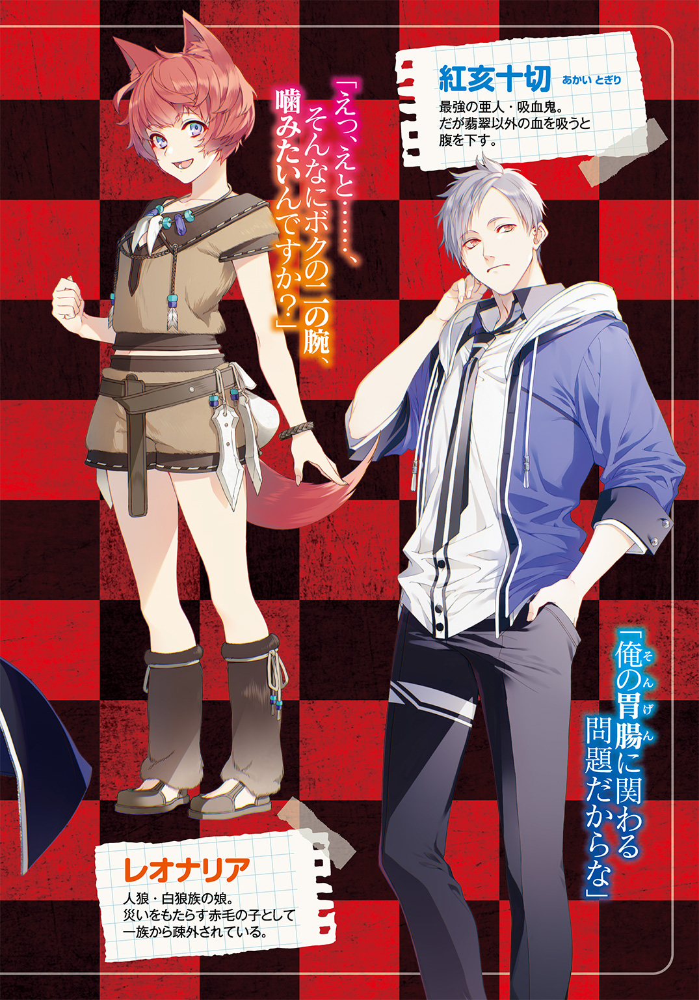

| 俺の胃袋は彼女に握られている。 | |
| 餅月望 | |
この本は縦書きでレイアウトされています。
また、ご覧になる機種により、表示の差が認められることがあります。

 ダッシュエックス文庫DIGITAL
ダッシュエックス文庫DIGITAL
俺の胃袋は彼女に握られている。
餅月 望
プロローグ 血と満月の夜、彼は少女の膝小僧を舐める
深夜の児童公園。
昼は子どもでそれなりに賑わうこの公園も、夜中の十二時になろうかという時刻には、しんと静まりかえっていた。
そんな公園のまん中に、一人の少年が倒れていた。
血に染まる学生服。無数に空いた小さな穴からは止めどなく、赤い血が湧き出してくる。
銃で撃たれたのは初めてだが、なるほど、こんな感じになるのか......。
ぼんやりと自らの体を眺めながら、紅亥十切は妙なことに感心していた。
痛み、というよりは熱といった感じか。ちょうど、蜂に刺されたのに似ているかもしれない。
「っと、いかんいかん。そんなことを考えている場合では、なかったな......」
近くのジャングルジムを摑み、身を起こす。
「すまんな。実は絶食十日目で、ついフラついた」
そう言って、立ち上がろうとした彼を、小さな手が押さえた。その拍子に膝が折れ、そのまま後ろに倒れこむ。
後頭部を柔らかな感触が受けとめた。温かな少女の肌の体温。華奢な太ももの、固さの残った柔らかさに、十切は、自分が膝枕をされているのだと気づく。
「大したものですね。この状況で、そんな強がりが言えるなんて......」
くすり、と......。
小さな笑い声。幼く可愛らしいその声の持ち主は、年端もいかぬ少女だった。
年の頃はようやく十を越えたかというところ。月明かりに照らし出される長く黒い髪が十切の顔に落ち、鼻先を清潔なシャンプーの香りがくすぐった。
夜空の黒を切り取ってきたような、漆黒の美しい瞳を、十切が持っていたファーストフード店の紙袋に向けて、少女は笑みを深くする。
「別に、強がり、ではないのだがな」
紙袋の中身......、ハンバーガーは、彼にとっては食べ物ではない。絶食をしていたのは本当の話だ。そう説明しようとして、すぐにやめる。
面倒だし、今すべきことでもないだろう。
「それより......、何のつもりだ？ 早く逃げなければならないのだろう？」
いつ銃を持った男たちに囲まれるかもしれない状況で、悠長に話をしている場合ではなかろうに。
そう思い、再び起き上がろうとする十切の耳元に、少女はそっと唇を寄せた。ひそめた吐息に耳をくすぐられ、十切は小さく身じろぎした。
「なにか、最後の願いは、ありますか？」
「なにを......、言っている？」
突然の問いかけに、思わず少女を見上げる十切。その口元から、一筋の血がこぼれる。
「あなたは死にます。その出血にしてはお元気なようですが、恐らく助からないでしょう」
冷然とした断定に、けれど、十切は内心で頷く。そうだろうな、自分が普通の人間であったなら、と。
「命を救われたお礼もしないまま、あなたに逝かれては、この鳳翡翠の沽券にかかわります」
翡翠、と名乗った少女は、十切の口元の血を優しくハンカチでぬぐいながら言う。
「だから、なにか、願いはありますか？ 特別に、翡翠がかなえてあげます」
――願い......か。本当に叶えてもらえるものなら、いくらでも話すのだがな......。
十切は、小さくため息を吐き......、そこで、ふと気づいた。
自分たちが取り囲まれつつあるということに。
体格の良いスーツ姿の男たち。それは翡翠を追い、十切に鉛弾を撃ちこんだ者たちであった。
その数は六人。年端もいかぬ少女を捕まえるにはいささか過剰な数だった。
「もう、鬼ごっこは終わりですかね？ 女帝、鳳翡翠さま？」
先頭のリーダー格の男が、からかい半分の、ひどくかしこまった声で言った。
「素直に諦めてくだされば、そこの運の悪い少年も死なずに済みましたのに」
「よせよせ、運の悪さでいったら、翡翠お嬢様の方も負けてないんだ。なにせ、恨みを持つ金持ち連中が舌舐めずりして待ってるからな。はく製にされるか、生きたまま地獄を見るか......」
手間をかけさせられた腹いせだろうか。ことさら、翡翠を脅すように、男たちは嫌な笑みを浮かべる。けれど、それがまるで聞こえていないかのように、翡翠の視線は動かない。ただ、十切の顔を見つめ続けている。
「願い......か」
ふと視線を横に動かすと、視界に入ってきたのは、少女の華奢な脚だった。月明かりの淡い輝きを宿したように白く美しい太もも、その下の幼い膝小僧には、転びでもしたのだろう、痛々しい擦り傷ができていた。
その、透きとおるほどに白い肌にじわりとしみ出した血の、美しい赤に、思わず視線が吸い寄せられる。
――血が......。
最後の、願い......。
「君の......」
――血が......吸いたい。
すんでのところで、十切は踏みとどまる。さすがに、そんな直接的な頼み方は、ない。どう好意的に解釈しても変態以外の何物でもない。もっと婉曲に、婉曲に......。
「君の、膝小僧が、舐めたい......」
その場の空気が固まった。
......吸血を絶って十日目。
予想以上に、十切の脳細胞は活動を鈍化させていたらしい。
はぁはぁ、息を荒げつつ放った一言に、百戦錬磨であろうはずの男たちも、若干、その身を引いていた。
そんな奇妙な静けさの中で、
「あっは、最後のお願いが、年端もいかない女の子の膝小僧を舐めたいだなんて、筋がね入りの変態ですね！」
翡翠のとろけるような笑い声が響いた。
「いいでしょう、その願い、翡翠がかなえてあげます」
小さな手が、十切の頭に優しく添えられる。そのまま誘われたのは、傷一つないつるりとした膝の方だった。
目の前に現れたのは、恐ろしいほどに繊細な少女の白い肌、それを見て思わず舌触りが良さそうだ、などと考えてしまう十切だったが、生憎と彼が求めているのは、そちらではなかった。
無言で、彼は、反対側の膝に口を近づける。
「......ぁっ」
一瞬、驚いたようにびくん、と体を震わせた翡翠だったが、そのままの格好で体を硬くする。
血と、ほんの少しの泥がこびりついた膝小僧、鼻先をくすぐるのは、ほのかな汗の香りと、生き血の甘い匂い。
迷いもためらいもなく、十切は舌を伸ばし......、瞬間、背筋に電撃が走ったかのようだった。
さらりと甘美な味、けがれを知らぬ乙女の生血は、さながら解禁されたばかりのワインのごとく、さわやかな鮮烈さを持って味覚を刺激してくる。
「美味い......」
思わず、その細い脚を抱きしめ、舌を押しつける。
「んっ......」
傷口に触れた痛みか、翡翠が小さく息を吞む。
その声に罪悪感を刺激されたわけではなかったが、十切はそっと口を放した。
それから、ゆっくりと立ちあがる。その体からは、微かに蒸気が立ち上っていた。
「おのれ......、吸ってしまったか......」
――十日間の努力が水の泡だな。
腹をさすりながら、小さく舌打ち。けれど、すぐにその顔に、不審の色が広がる。
「妙だな......」
「お前の頭がなっ！」
突然の怒号、と同時に、ぷしゅっと空気が抜けるような音が響く。
消音機、いわゆるサイレンサーというやつか......。
十切は、音の方へと視線を動かした。
超高速で飛来する銃弾。一回、二回、三回......、と、なんとなくその回転を数えながら、タイミングを合わせるようにして腕を上げる。
「よっ、と......」
次に起きた出来事に、誰もが言葉を失った。
「悪いが......、化物と戦うのに、それじゃあ威力不足だ」
見せつけるようにして、十切は、人差し指と中指とで銃弾をはさみ取った。回転する金属の摩擦で指が焼けるが、大したことではない。
「なっ！」
唐突に非現実を叩きつけられた一瞬の間隙、その機を見逃さず十切は動き出す。
それは、洗練された達人の動きではなかった。どちらかと言えば普通の高校生が、普通にケンカをするような、そんな動きだった。
けれど、その速度は、およそ人間の目で追うことができる速さを、遥かに超えていた。
呆然と立ちすくむ男たちを、十切は無造作に殴りとばす。
絶妙の力加減の拳打を腹に叩きこむ。一撃必倒、二撃目は必要なかった。
数秒の後、その場に立っているのは、リーダー格の男一人になっていた。
「ばっ、化物め......」
「だから、はじめから、そう言っている」
最後の一人を膝で昏倒させると、十切は再び腹をさすった。
「やはり、おかしい。これはいったい......」
しきりに首を傾げる彼に、ふいに可愛らしい声がかけられた。
「あっは......、吸血鬼」
それは甘く、愛らしく、だけど......、なぜだろう。聞いているだけで、十切の背筋にゾクゾクと嫌な寒気が走った。
「そうですか、お兄さん、吸血鬼だったんですか」
赤みがかった瞳をうっとりと細めて、美しい唇を、とろり、と、恍惚の笑みの形に変えて......。鳳翡翠は、笑っていた。
その妖しげな笑みを見ていると、なんだか、彼女の方が吸血鬼のように見えてしまい、十切は無意識に身を引いてしまうのだった。
第一話 吸血鬼は踊る。小学校の校舎で。
『親愛なる十切お兄さん。翡翠の血が吸いたければ、うちの小学校に侵入して、翡翠のところまで来て下さい。お待ちしていますね。
鳳翡翠』
紅亥十切は吸血鬼だ。
今年、高校二年になる彼がそんなことを言うと、九割近い確率で可哀想な人を見る目を向けられるだろうから公言しないが、それは事実である。
が、だからといってどうということはない。他人から血を吸わなければ生きていけないとはいっても、命を奪うわけでもなし。伝説と違い、相手を眷族にするようなこともなければ、日の光を浴びると灰になることもない。
彼の両親も祖父母も、妹も、一族全てが吸血鬼なのだから、孤立感も覚えようがない。
吸血鬼なのに『十』字を『切』るという名前は、いささか皮肉だよなぁ、などと思う時もあるが、それ以外には特に悩みもない。
ただ、一つ問題があるとすれば......、彼が他人の血を吸うと腹を壊すという、吸血鬼としては割と致命的な体質をしていることぐらいで。
今日も今日とて、十切は便座に腰かけたまま、唸っていた。
三日ぶりに口にした血液パックのせいで、すでに一時間近く、トイレにこもりきりになっている。
ドンドンドン、先ほどからひっきりなしに叩かれるドア。その音がだんだんと激しさを増してきていた。
十切は、肩をすくめて、そっとため息を吐いた。
「おい、舞奈、そんなに乱暴なノックをしていると、素敵なレディーになれないぞ」
「そのレディーがドアの前で悶絶してるのに、平然とトイレに入ってるってどういう了見よっ！」
キャンキャンうるさい妹・舞奈は、今年小学五年生になる。いつまでたっても幼くて困ると、十切は首を振った。
「やれやれ、俺が小五のころはもう少し落ち着いていたと思うが......。待ってろ、今、出てや......ぐぬっ」
便座から立ち上がろうとした瞬間、ぐぎゅる、と、腹が嫌な音を立てた。
「すまん。もう少し......、時間がかかりそうだ」
「ちょっ、お、お兄ちゃん、私に一生ものの心の傷を残すつもり？」
ドアの向こうから焦り気味の声。さすがに申し訳ない気持ちになった十切は、慰めの言葉を口にする。
「ああ、そう気にすることはないぞ。お前はまだ小学生、多少の粗相は許される」
対して、十切は高校生だ。ことはすでに、彼の尊厳にかかわる問題といっても過言ではない。
「っ！ 最低っ！ お兄ちゃん、サイテーっ！」
ドンドンドン、再び乱暴に叩かれるドア。
「もうっ！ 輸血パック飲むんだったら、先に言っといてよ」
「ＲＨマイナスの珍しいものだというから、もしかしたらと思ったのだ、おうふ」
ぎゅる、っと、腹が嫌な音を鳴らす。と同時に走った疼痛に、脂汗がにじり出る。
「そんなの前に試したことあるって言ってたじゃんっ！ 言い訳にならないよぉ！」
余裕のない声で舞奈が叫ぶ。
普段は兄の体調を気遣ってくれる優しい舞奈であったが、ことトイレのこととなると人格が変わる。
げに恐ろしきは排泄欲求か。などと、他人事のようにつぶやいて、十切はため息を吐いた。
吸血鬼にとって、血を吸えないということは文字通り命に関わる問題である。幸い、吸血による栄養摂取は三日に一度程度で構わないが、これが毎日毎晩続いたら、さすがに耐えられなかったかもしれない。
無論、十切や、彼の両親はなにもせずに現状を受け入れたわけではない。
血液の種類によって状態が変わるかもしれないから、とさまざまな血液型を試し、採取する人間も多種多様、老若男女にあらゆる人種を試した......、のだが、結果は全滅。
統計的なデータでいえば、この地上にいる人類七十二億人、そのことごとくの血液に、十切が腹を壊さずに飲めるものは存在しなかった。
「......やはり、会いにいかなければならないか......。しかしこれは......、下手したら社会的に死ぬような気がするな」
ため息を吐く彼の手には携帯電話、そこには一通のメールが表示されていた。
「お兄ちゃんっ！ まだぁっ！ ねぇ、まだぁっ！」
と、その時、舞奈の半泣きの悲鳴が響いた。そういえば先ほどから、ドアをノックする音が弱々しくなっている気がする。
「おっといかんいかん......。うむ」
腹を撫で、大きく一つ頷いてから、十切はようやく便座を立った。
「待たせたな、今、出た......ぞ？」
爽やかな笑みを浮かべる十切の横を、下腹部を押さえつつ、ぴょこぴょこ、変な歩き方で入れ替わりに入っていく舞奈。
そのまま、ばたん、とドアを閉めて、
「お兄ちゃんっ！ なんで流してないのっ！」
再び悲鳴が響いた。
「ああ、すまん、すまん。お前が急かすから......」
「サイテーっ！ サイテーだよっ！ お兄ちゃんっ！」
盛大に水を流す音を背中に聞きながら、十切はふと立ち止まった。
「ふむ、そうだな、舞奈の意見を聞いてみるか......」
待つこと、五分弱。
じゃああ、っと水を流す音が聞こえてから、すっきりした顔の舞奈が出てきた。
ぴょこんっと元気よくとび跳ねた髪、気まぐれな猫を思わせる瞳とちらりと覗いた八重歯が、なんとも可愛らしい。
サッカーのユニフォームを模したＴシャツにホットパンツというアクティブな格好をした彼女は、十切を見て目を丸くした。
「なっ、えっ、お兄ちゃんっ！ もしかして、ずっとそこにいたの？」
「うん？ ああ、ちょっと聞いてみたいことがあってな」
そう言うと、なぜだか、舞奈の顔が赤くなっていく。わなわな、と、可愛らしい唇が震えている。
いったい、どうしたというのだろうか......。
十切は小さく首を傾げ、だが、ふいに合点が行ったとばかりに頷いた。
「ああ、そういうことか」
ふっと表情を和らげると、ぽむん、と舞奈の肩に手を置いて......。
「心配ない。べつに妹のトイレの音を聞いたからといってどうも思わんから、気にするな」
「――っ！ あっ、あほっ！ お兄ちゃんの、大あほー！ あっち行けっ！」
ぶんぶんぶん、っと大振りに拳を振りまわす舞奈、そのプロボクサーも真っ青な拳を、十切は冷静にさばいていく。
「おいおい、お前、兄ちゃんが相手だからいいが、友だち相手にその勢いでパンチしたら危ないぞ？」
「うわあぁぁぁんっ！」
意味をなさない奇声を発しつつ、しばらく暴れていた舞奈だったが、やがて疲れたのか、ぜーはー、息を切らせながら言った。
「はぁ、もういい。それで、なに、お兄ちゃん、聞きたいことって」
「ああ、うん、ちょっと聞いてみたいんだが......」
一度、そこで言葉を切ってから、
「俺が小学校に侵入したら、お前は、どう思う？」
「......ニュースに出るんじゃないかと思う」
答えは簡潔だった。そして、おおむね予想通りだった。
「......そうだろうなぁ」
「っていうか、目的によっては、私が通報すると思う」
妹がこちらを見る目付きは、思いのほか剣吞だった。
「まぁ............そうだろうなぁ」
やはり、目的を達成するためには社会的な命を懸ける必要がありそうだった。
内心で深いため息を吐きながら、十切は改めてメールを眺めた。
人類でただ一人、十切が平穏無事に血を吸うことができる人物の、突きつけてきた要求を。
その日の四限目の授業が終わると、十切は帰り支度を始めた。まだ、午後の授業が残っているが、それでは間に合わないので、サボらせてもらう。
「あれ？ 紅亥君、帰るの？」
カバンを持って靴に履き替えようとしていたところで、誰かに話しかけられた。
見れば、クラスメイト、高城珠美が不思議そうに首を傾げていた。
「もしかして、サボり？ ダメだよー、そういうの、学級委員長に見つからないようにやらないと」
ちなみに、十切のクラスの学級委員長は他ならぬ彼女である。
「できれば、先生には黙っていてもらえると助かるのだが......」
「理由によるなぁ」
そう言って、珠美は悪戯っぽい笑みを浮かべた。
「紅亥君、真面目だから、サボるにはそれなりの理由があるんじゃないの？」
どうやら、きちんと理由があるならば見逃してもらえそうである。
「ああ、実はな......」
十切は咄嗟に言い訳を考える。
無論、血を吸うために、小学校に侵入する、などと本当のことを言うわけにはいかない。
しかしながら、こういうのは、百パーセント噓で固めてしまうと上手くいかないものだ。一番肝心なところはボカすとしても、適度に真実を交えなければならないわけで......。
まぁ、考えるのも面倒くさいし、吸血鬼に関する部分だけ隠しておけばいいか。
「ちょっと小学校に侵入しようと思ってな」
「..................」
珠美が笑顔のまま固まった。数秒の沈黙、その後、彼女はスカートのポケットに手を突っ込んだ。
「んー、有罪、かな」
そう言って、取り出したのは携帯電話だった。
「？ よくわからないのだが、なぜいきなり携帯電話を？」
「私の手に、というか、たぶん学校の手に負えないだろうから、警察に電話を......」
「ちょっ、まっ！」
慌てて止めつつ、自らの言動を検討する。
......どうやら、問題がないではないらしい。
「ああ、どうやら、誤解があるようだが、えー......、あっ、そうだ。舞奈、小学校といっても妹が通っているところでな......」
「......妹さん？」
「そうそうそうなのだ。あの馬鹿、弁当を忘れて行ってな。俺が届けなければならんのだ」
じーっと、笑顔を浮かべたまま、十切の目を覗きこんでくる珠美。しばし、事の真偽を吟味するように黙りこんでいたが、やがて、ほわ、っと頰を緩めた。
「あー、びっくりした。てっきり、紅亥君がその手の趣向に目覚めて、犯罪に手を染めようとしてるのかと思っちゃった」
胸に手を当て、ほう、とため息を吐く。
「っというわけなのだが、見逃してもらえるだろうか？」
「んー、まぁ、しょうがないかな。わかった、じゃあ、具合が悪くて帰ったって言っておくよ」
「ああ、すまんな。じゃあ」
軽く手を振り、歩きだそうとした十切を、珠美が呼び止めた。
「あっ、紅亥君、くれぐれも言っておくけど、私が通報せざるを得ないようなことしないでね？」
なぜだろう、その一言で、なにか良くないフラグが立ってしまったような、なんとも、いやぁな予感がしてならない十切だった。
私立朱雀ヶ森小学校。
都内の一等地に建てられたその小学校は、財界人や大物政治家の関係者が通うエリート校だ。
そして、超巨大財閥、鳳グループの当主、鳳翡翠が通う学校でもある。
校門のところにはいかつい警備員が二人、鋭い目で辺りを見張っていた。一人はグラサン、一人はスキンヘッド。小学校の警備員にしてはいささか、迫力があり過ぎるような気がしないではない。
学校を取り囲むようにして敷設された高いフェンス、その上端には野太い有刺鉄線と監視カメラが取り付けられている。
フェンス越しに学校敷地を一周しながら、さて、どうやって忍びこもうか、と十切は思案に暮れていた。
別に侵入すること自体は難しくない。警備員を殴り倒して入ってもいいし、フェンスを飛び越えても構わない。だが、それをやった時点で、彼の社会的信用は、たぶん死ぬ。
小学校に侵入するために警備員を殴り倒した高校生......。全国区のニュースで取り上げられることは間違いないだろう。
ゆえに、この侵入は〝露見〟してはいけない。
『誰にもバレないように、小学校に侵入する！』
なにも知らない人に聞かれたら確実に通報されそうな覚悟を新たにしたところで、ふいに携帯電話が震えた。
『あっは、十切お兄さん？ 今、校門の辺りですか？』
甘くとろけるような、可愛らしい声。それでいて、この上もなく警戒感を刺激される声。そんな声の持ち主を、十切は一人しか知らなかった。
「ああ、翡翠か。んっ？ つかぬ事を聞くのだが、今日行くと伝えてあっただろうか？」
『あっは、翡翠は十切お兄さんのことなら何でも知ってるんですよ？ なんでしたら、学校のいたるところで携帯を鳴らしてみましょうか？ 今、更衣室ですか？ 女子トイレですか？ って』
「......なるほど、君はメリーさんの亜種だったか。覚えておこう。いや、というより、なんだ、その微妙な到達地点は。更衣室とか、女子トイレだとかに俺が立ち寄るとでも思うのか？」
『そうですか？ でも、翡翠は今、プールにいるので、迎えに来るんだったら、嫌でも更衣室に立ち寄ることになると思いますけど』
からかうような口調に、十切は頭痛を覚えた。
「......あー、試みに問いたいのだが、なぜプールに？」
『あっは、お兄さんにエキサイティングな興奮を味わってもらおうと思って』
頭の中に、翡翠の意地の悪い笑顔が浮かぶ。電話を切って深いため息。
「それでも、彼女に会いに行かなければならないのがつらいところだな。くっ、早くなんとかしなければ......」
ぼんやり、そんなことを考えているところで、チャイムの音が響いた。
すべての授業が終わり、やがて、校門は小学生たちであふれるだろう。
「さて、では行ってみるか......」
ぐっぐっと、アキレス腱を伸ばし、一つ気合いを入れてから、十切は走り出した。
一歩、二歩、三歩、四歩......、五歩。
はじめの三メートルを、十切は五秒近くかけて走り抜けた............遅い。
まるで、普通に歩いているかのような遅さ。けれど、彼は全力で動いていた。それはもう、短距離走をこなしているかのような猛烈さで動きまわっていた。
右に一歩進んだ、かと思えば、踏みしめた足で地面を蹴り、体を左前方に、一回転して再び右......。道幅いっぱいを使ってゆらりゆらり、体を揺らしながら奇怪なダンスを踊りながら進んでいく。
......否、それはダンスではなかった。
これこそが、十切自慢の歩行法、すなわち〝見えない歩行法〟である。
吸血鬼の身体能力は、人間とはかけ離れている。それを活かして舞奈などは、学校のサッカークラブ（男子の部）のエースストライカーにまでなり上がった......なかなかに、ちゃっかりした妹である。
それは置いておいて、十切もやる気になれば百メートルを五秒程度で走りきることは可能なのだ。
だが......、そう、「だが」なのである。
では、百メートルを五秒で走り切れば、人間の視覚から逃れることはできるか？
数多いる女子小学生の中に突入して、悲鳴を上げられずに、翡翠のもとまで辿りつくことができるか？
答えは否である。
人間の目は優秀だ。まっすぐに走ってくるものであれば、時速三百キロを超える新幹線だとて、人は視認することができる。
そう、直線的に走っても、人間の目は誤魔化すことが出来ないのだ。
では、どうするか？
その答えこそ、この奇怪なダンスのような歩き方なのだ。
前後左右、相手の目が追ってこられない速度で動きつつ、前進する。
文字通り目にもとまらぬ歩行法、吸血鬼の速力があってこそできる奥義である。
前方、校門の辺りから次々に現れる制服姿の少女たち。その姿を目指して、十切は足を進めた。
警備システムとは、非正規のルートからの侵入に対して仕掛けるものである。
フェンスを飛び越えたり、屋上に飛び移ったり......、そのような入り方は、恐らく却って危険だ。
むしろ安全なのは、正規のルート、すなわち生徒のすぐ近く。さすがに、小学生が通る廊下に電流が流れる罠は仕掛けないだろうし、監視カメラだって今はプライバシーの問題から仕掛けられていない可能性が高い。
つまり、もし周囲の人間に気づかれずに、間を通り抜けることができるのであれば、生徒のそばを抜けるのが、実は一番安全なのだ。
校門を抜けて、真っ直ぐに昇降口へと向かう。前方から女生徒が二人歩いてくるのが見えた。
翡翠と同年代、白いワイシャツに紺色のジャンパースカート、きっちりと胸元のリボンをしめた女の子と、リボンを緩めて着崩している女の子。
高速で体を左右にぶれさせつつ、十切は、そのそばへ。すぐ目の前まで行ったところで、体を反転、その脇、ギリギリのところをすり抜けるようにして通り抜ける。
「きゃっ、なに今の？」
突然の突風に、スカートを押さえつつ、小さな悲鳴を上げる少女。けれど、十切の姿に気づいた様子はない。
そのまま、昇降口から下駄箱、廊下を歩き低学年の教室エリアへとさしかかった。
汗をキラキラさせながら、十切はそっとほくそ笑む。翡翠にどのような思惑があったのか知らないが、さすがに正面からやってくるとは思っていなかっただろう。これは完全に裏をかいたのではないだろうか......、などと勝ち誇りかけたその時、まるでタイミングを計ったかのように、携帯電話が震え出した。
――うむ？ なんだ？ こんな時に......。
咄嗟に、左右に目をやる。右は教室、生徒がかなり残っている。ということは......。
左側に見えたドアをよく見もせずに押しあけて、中へ。
ほんのりと湿った空気と芳香剤の香り。中には生徒の姿はない。
きゅっきゅっと、湿った床面に音を立てつつ、十切は一番奥の個室へと入った。
そのまま腰を下ろす。途端に、疲労がのしかかってきた。やはり全力で動き続けるのは、相当な体力が必要なようだった。息が苦しい。
「ぜはー、ぜはー......」
荒い息を吐きつつ、とりあえず携帯に出る。
『もしもし、翡翠です。今、女子トイレですか？』
「ふっ、なにをふざけたことを......」
などと......、わが身を省みた十切は、洋式トイレの蓋の上で、息荒く座り込む自らの姿を発見した。
「......なるほど、やはりメリーさんだったか」
『あっは、ちなみに一番奥の個室は翡翠が愛用してるところなんですよ。もし、お望みでしたら......』
「用がないなら切るぞ」
お望みだったら、なんだというのだ、お望みだったら......。
『あれ？ プールの場所を教えてなかったな、と思ったのですけど、切っていいんですか？』
完全に手の平の上で転がされていた。
「ぐ......ぬぅ」
ぐぬぅの音しか出ない十切は、ただただ黙って、翡翠の言葉に耳を傾けることにする。
仕方がないことなのだ。弱みを握られている以上、今は彼女の言うことを聞くしかない。
プールは廊下を抜け、階段を上った先にあった。
まさか、六階にあるとは......。
警備システムらしきものは一切見当たらなかったものの、単純に階段を上るだけで、かなりのスタミナを消費してしまう。
それでもなんとか更衣室の中に入り、小さく安堵の息を吐く。独特のカルキの匂いが鼻についた。とそこで、またしてもタイミングよく携帯電話が震えだした。
『もしもし、十切お兄さん？ 今、女子更衣室ですか？』
「ふっ、あからさまな印象操作はやめてもらおうか。ここは女子校だ」
つまり、プールに行くためには、嫌でも女子更衣室を......、
『はて、脇に直通の入口が設置されていたはずですが......』
「............要件を伺おうか」
『あっは、まぁいいでしょう。そこに翡翠の服が置いてありますけど、イタズラしないでくださいね、と言っておこうと思っただけです』
言われるまで気づかなかったが、確かに棚の一つには、綺麗に畳まれた制服が置かれていた。
ほう、なるほど、これが翡翠の......。
『まぁ、変態の十切お兄さんですから、下着を見るぐらいならば、よく自制心を働かせた、と褒めてあげますけど』
「君の抱いている俺のイメージについて、是正を要求したい」
『あっは、まぁ、冗談はともかく、よくいらっしゃいましたね。お約束通り、翡翠の血を差し上げます。どうぞ、プールの方へいらしてください』
ようやくか......。
歩きだそうとした十切だったが、ふいに、膝が折れかける。どうやら、予想外に体力を失っていたらしい。
そもそも、朝飲んできた血も、ほとんどトイレに流されてしまっているので......。
「これは......、早く血を吸わせてもらわんとまずいか」
よろよろとした足取りで、十切はプールへの扉をくぐった。
そこは、およそ小学校のプールというイメージとはかけ離れた、恐ろしく美しい場所だった。
ガラス張りの天井、そこからキラキラと降り注ぐ陽光が、二五メートルプールを楽園の海のように演出していた。
「すごいものだな、まったく」
十切の通っていた小学校とは大違いだった。なるほど、金というものはあるところにはあるものだ。
「しかし、翡翠はどこに......むぉっ!?」
どん、っと背中を押される。咄嗟に、足を踏ん張ろうとしたが、膝は、かくん、と力なく曲がった。バランスを崩した十切は、そのまま頭から、プールに落下してしまう。
「あっは、翡翠を待たせたバツですよ、十切お兄さん」
水面に顔を出した十切に、愛らしい声が降ってきた。
顔を拭い、見上げる先、一人の少女が立っていた。美しい瞳を細め、赤く瑞々しい唇には、うっとり、とろけそうな笑みを浮かべて......。
その華奢な肢体を覆うのは、紺色のスクール水着だった。胸元には大きく、「五年二組 鳳翡翠」と名前が書かれている。
やや内股気味に美しい曲線を描く太もも、十切が来るまで水に浸かっていたのか、幼く繊細な肌は濡れ、艶やかに煌めいていた。
「あっは、御機嫌よう、十切お兄さん。一か月ぶりぐらいでしたっけ？」
「ああ、確かそのぐらいになるなぁ」
小学校まで迎えに来いとメールをもらったのは、確かにそのぐらい前のことだった。
「よくそんなに我慢できましたね。すぐに来るかと思っていたんですけど、ずいぶん待ちぼうけを食わされちゃいました」
腰のあたりまで伸ばした髪を軽くかき上げながら、彼女はプールサイドに小さなお尻を下ろした。
ちゃぽん、とプールの水に両脚をつけて、見せつけるように水を蹴る。
抜けるように白く美しい肌を、水の宝石が美しく飾りたてていた。
「さすがに、社会的に死にそうだったのでな」
たいていの吸血鬼は、人間社会に混じって生活する。十切とて、小学、中学を出て今は高校に通っている。警察の御厄介になるようなことは避けたいところだった。
「残念です。すぐに来てくれると思って、この前まで高性能のカメラを仕込んでいたんですよ？ せっかく、お兄さんが〝くねくね〟みたいに来るのを見て笑ってあげようと思ってたのに」
「おかしな都市伝説と一緒にしないでもらおうか」
「あっは、そうでした、お兄さんは、怪物の中の怪物、吸血鬼ですものね」
そう言って、翡翠は、すっと脚を差し出してきた。細い足首、その先の小さな素足をゆらゆら、と鼻先で揺らしてくる。
「あー、何の真似だ？」
「吸血鬼は、存在を隠す。だから、首筋などのわかりやすいところに嚙み痕を残したりはしない......って言ってませんでしたっけ？」
悪戯っぽく、そう笑い、ちゃぷちゃぷ、小さな裸足で水面を波立てる。
つまりは、その足から血を吸え、ということのようだった。
「さっ、どうします？ 吸いますか？ それとも、吸いませんか？」
ねっとりとした笑みを浮かべて、翡翠は十切を見下ろした。それはさながら、奴隷に慈悲を与える女帝のような、慈愛と嗜虐とが入り混じったような笑み。
それを見上げて、十切は、大きく一度頷いて、
「なるほど！」
言い放った。
「素晴らしいアイデアだ！」
即答だった。
確かに、つま先ならば、靴下をはけば完全に隠せる。さすがは大財閥の当主、素晴らしい発想だ。
十切は惜しみない称賛を送りながら、翡翠の右足を両手で包みこんだ。そのまま、その小さな親指に唇を寄せる。
と、そこで、翡翠が微妙に引きつった顔をしているのが見えた。
「うむ？ どうかしたのか？」
「いえ......、そう素直に受け入れられるとは思っておりませんでしたので......、予想外といいますか、相当引いているといいますか......。まさか、女の子の足の指をしゃぶることをご褒美と感じるような人だとは思っていなかったので」
「............いやいや、待て待て。なにか聞き捨てならない認識の齟齬を感じたのだが。俺が喜んでいるのはあくまでも......」
「ほら、それより、早くしないと、誰か来たら、まずいんじゃないですか？」
確かにその通りだったが、改めて指摘されたことで、ふいに十切の中の理性が絶叫を上げた。
倫理が、道徳が、常識が、良心が、激しい背徳感の前にグラグラと揺れていた。
手の平の中にある裸足はあまりに小さく、幼い。それを口に含むなど、そんなことが許されるのか......？
「否っ！ たとえ、世間が許さずとも、このつま先を口に入れなければならないっ！」
「あっは！ 格好いい変態宣言ですね！ 十切お兄さん」
なぜか、嬉しそうに笑う翡翠。その歌うような声を聞きながら、十切は差し出された裸足に口を近づけた。その可愛らしい親指に軽く牙を立てる。ほんの少しの傷がつく程度に、優しく。
「......ん」
小さなうめき声、直後に舌の上に転がる柔らかな血の風味。血の味をワインにたとえる吸血鬼がいるが、翡翠の血はさながら早摘みのぶどうのようだった。
硬い酸味の内に混ざる、ほんの少しの甘み。喉を通って落ちて行くそれは、胃の腑を熱く焼き、細胞の一つ一つに生命力を満たして行く。
「あっは、どうですか？ 十切お兄さん、お腹を壊さないでする久しぶりの栄養補給は......、感無量ですか？」
「ああ......、そうだな」
一度、口を離してから、十切は翡翠を見上げた。
「感謝してるよ、心からな」
鳳翡翠。七十二億分の一の奇跡。
統計上あり得ないはずの、十切が血を吸っても腹を壊さずにいられる唯一の人間。それゆえに、彼は逆らうことが出来ない。なぜなら、これは胃腸の問題だから。
「それにしても、十切お兄さん、血を吸うためとはいえ、こんなことまでするなんて、さすがに少しやり過ぎじゃないですか？」
十切を挑発するように、目の前でゆらゆら、小さな素足が揺れる。
「ふっ、仕方あるまい」
そう、これは......、
「俺の胃腸に関わる問題だからな」
例えば、教室で転んで腕を折ったとする。きっと周りのクラスメイト達は心配してくれるはずだ。
では、腹痛でトイレに駆け込むところを見られたらどうだろう？
心配されるどころか、むしろ笑いの種にされるのではないだろうか？
それは、尊厳を汚されることにも等しい。
それゆえに、これは、十切にとって重い尊厳の問題なのだ！
「あっは、十切お兄さん的には、プールで女の子の裸足に口づけることは、尊厳的にアリなんですか？」
翡翠のツッコミが、しんと静まり返ったプールに響いた。
「ふぅ、なんとかやり遂げたか......。やはり、胃腸を気にせず吸血できるのは素晴らしいな」
これで、三、四日は吸血しないで済む。それはつまり、授業のある平日は、トイレの心配をする必要がないということだ。
満足げに腹をぽんぽん叩きつつ、十切は更衣室にやってきた。
「社会的な生命も守れたし、尊厳も守れた。うむ、言うことなしだな」
......いや、本当に、そうだろうか？
ふと、疑問が頭をよぎる。
思い出されるのは、先ほどの翡翠の言葉。
プールで女の子の裸足に口づけるのは、尊厳的にアリなんですか？
女の子の裸足に口づけるのは......裸足に口づけ......裸足に口づけ......。
尊厳的にアリ......アリ..................アリ？
「俺は本当に尊厳を守ったのだろうか？」
深刻な葛藤が、彼の心を刺し貫いた。
自分は尊厳を守るといって、胃腸の調子のみを気にしてはいなかっただろうか？
「人は胃腸の平安のために、いったいどれだけのものを懸けることができるのか......」
哲学的なような、そうでもないような疑問を口にしつつ、十切は小さくため息を吐いた。
「しかし......、まぁ、それは置いておくとして、だ。とりあえず、今の状況はなんとかしなければいかんな」
今日はなんとかなったが、このまま翡翠に弱みを握られたままでは、いつ社会的な命を落とすか、わかったものではない。
と、その時、目に入ってきたのは、綺麗に畳まれた翡翠の着替えだった。
「ふむ、目には目を、弱みには弱みを、か。翡翠の弱みでも摑めれば、あるいは......」
思いついたら、即実行である。十切は、素早く翡翠の着替えに手をかけた。
周りから見たら、明らかに変態......、というか、社会的に死ななくても人として終わっていそうな感じがしないではないが......。
「ふっ、人は胃腸のためならば、いろいろなものに目をつぶらなければならない時があるのだ......」
誰にするでもなく言い訳をして、十切はワイシャツを手に取った。
きっちりとアイロンがけされた白いワイシャツ、畳み方は店においてある服のようにしっかりしている。それを崩さないようにそっと横へ置き、今度はジャンパースカートへ。折り目がきっちりと付いたスカートも、いかにもお嬢様学校の制服らしい。
そのそばに置かれていたのは、絹製の肌着と、高そうな下着、そして白い靴下だった。
「ふむ......、なるほど」
十切は、靴下を両手で持って広げてみた。
「しかし、そうか。俺はこれに包まれているつま先から血を吸ったのか......。そう考えると微妙に感慨深いものが......」
と、そこで、彼は気づいた......、気づいてしまった。
年端もいかぬ少女の靴下を目の前に広げて眺めるという、いささか以上にアブない行為をしているということに。
「いや、ない。感慨などあろうはずもない」
そもそも、靴下を眺めながら感慨深さなど感じていたら、ヤバい。明らかに末期である。
「俺はあくまでも、翡翠の弱みを探しているだけなのだ......、すべては胃腸のために」
などとつぶやきつつ......、目を戻す。っと、
「......うん？ これは......」
服をすべて横にどけた下、なにやら一冊のノートが置かれていた。
「日記かなにかだったら弱みが握れるのだが......。いや、他人の日記を読むのはさすがに......」
などと、葛藤しつつも、十切は本を手にとった。その表紙には『亜人紳士録』と題名が書かれていた。
「ああ、これか......」
微かに落胆する。前にも見たことがあったからだ。
『亜人紳士録』――それは翡翠の趣味の産物だった。
十切も、話に聞いたことがあるだけだが、この世界には人間以外にもさまざまな異種族がいる。吸血鬼はもちろん、森に住む獣人や妖精、エルフ、ドワーフ、人魚など、およそ伝説やおとぎ話に出てくるような者たちは、人知れず存在しているのだという。
それら異種族は完成された人間に近しい種族、人の亜種、亜人と呼ばれている。
プライドの高い種族などは、人間を中心としたその総称を嫌っているが、十切としては別に吸血鬼を『亜人』と呼ばれることに抵抗はない。
なにしろ、人間は圧倒的に数が多い。そちらを基準と考えるのは自然な話だろう。
ともかく、この世には異種族、亜人がいる。そして、翡翠の趣味は、彼らとのコネクションを、コレクションすることだった。
それゆえに、十切は血を吸わせてもらえるし、さんざんいじり倒されることになっているわけなのだが。
「まぁ、念のために読んでみるか......」
亜人の情報を見たところで大して意味はないかもしれないが......。
っと、ノートを開いた瞬間、ひらひら、と一枚の紙が落ちた。しおりだろうか？ と思ったが、どうやら手紙のようだった。
「獣人............ねぇ」
どうやら、手紙は獣人からのもののようだった。トラブルがあったらしく、翡翠に相談しようとしたらしい。
「しかし、獣人にも頼られるとはな。相変わらず化物じみた顔の広さだ......、うん？ 待てよ」
そこで、十切は重大なことに気づいた。
彼が平穏に血を吸える者は、現在のところ翡翠以外にはいない。
だが......、それは人間に限った話だ。少なくとも、彼の記憶の中に、『獣人』の血を吸った経験はない。
もしかしたら、可能性があるのではないだろうか？
さながら悪戯を隠す子どものように、彼は辺りを見まわした。翡翠の姿は、ない。今ならば！
不意に、冷静になれ、と、頭のどこかで声がする。
いったい幾度、期待して、裏切られたか......。
翡翠と出会えたことこそが、まさに奇跡だったのだ。それ以上はない。出会いの相手が、いささか以上に性格に難があったとすれば、それはもはや運命としか言いようがないではないか。
そう、自分は、吸血の度に受難を味わう、そんな運命のもとで生まれてきてしまったのだ。
それに、翡翠も言うほど悪くはなかったではないか？ あの血の味わいと、なにより肌の舌触りが滑らかで、実になんとも......、はっ！
「なっ、なにを......言っているのだ......、俺は............」
陥りかけた暗黒面の罠に、戦慄する。小学校に侵入させられた挙句、プールで少女のつま先から吸血する......、そんな境遇を受け入れてしまった時、自分はナニか大切な物を失うのではないだろうか。そんな確信が雷鳴のごとく、十切の中を駆け抜けた。
「俺は、戦わなければならない。たとえ千の失望を味わおうとも、万の徒労を繰り返そうとも」
理不尽な運命に抗い続ける。胸を張って、まっとうに生きていくために！
静かな決意を胸に、手紙をそっとポケットに入れると、十切は更衣室を後にした。
第二話 赤犬娘は美味しい
亜人の生活は、その種族ごとにずいぶんと異なる。
吸血鬼は、十切たちの一族をはじめ、多くが人間社会に溶け込んで生活している。逆に、人間を見下し、滅多に人前に姿を現さないエルフのような種族もいる。
そして、問題の獣人は、この世界とほんの少し次元のずれた世界『獣森界』で生活する種族だった。
手紙によると、獣森界は、地上のありとあらゆる森と繫がっているらしく、普段は結界で隠されているらしい。手紙を持っている者は招待を受けたものとみなされ、入ることができるのだという。
「まぁ、ここから遠いヨーロッパの森が入口、といわれるよりはいいが、そんな簡単に入れるものなんだろうか」
半信半疑ながら、十切は手紙を懐に忍ばせて、近所の森に足を踏み入れた。森というよりは雑木林のようなところだったが。
入ってすぐ、十切は異変に気づいた。
いくら歩いても、反対側の道路に出ないのだ。直線距離にして、五十メートルもない雑木林である。中を通る道は真っ直ぐではないが、それでも百メートルを越すことはないだろう。にもかかわらず、十分近く歩いても、見えるのは木ばかりだった。
いつの間にか空が、暗くなっていた。
頭上を見上げると、黒に見えるほど深い緑が、空を覆い隠していた。振り返れば、後ろにも同じような獣道が続いている。道路は、いつの間にかなくなり、前後左右、どこを見ても鬱蒼とした木々が見えるばかり。しかも、どれも樹齢が長そうな立派な木ばかりだ。
「ふむ、すでに獣森界に入っていたということか。だが......」
問題はこれからだった。
手紙には獣森界まで来てほしい旨が書かれていたのだが、それ以降どうするのか、という具体的な指示が一切なかった。迎えが来るのか、来るとして森の入口で待っていなくて良かったのか。いや、そもそも、入口ってどこだ？
などと考えつつ、十切は歩を進めた。
「まぁ、とりあえず、向こうが呼び出してるのだから、迎えに来るだろう」
そう気楽に考えた結果であったが、いつになっても、迎えの者はやってこなかった。
「むぅ、選択を誤ったか......」
入ってすぐのところで待っていれば良かったかもしれない。軽く後悔しつつ、立ち止まる。
さて、どうしたものか......。このまま道なりに進むか、それとも戻るか......。
と、その時、突如として前方の茂みがガサガサ揺れた。
「むっ、やれやれ、ようやく来たか」
小さく肩をすくめつつ、十切は使者が現れるのを待った。
やがて、のそり、という具合に茂みをかきわけ、現れたのは......、
「ふむ......クマ、か」
グリズリーのような、黒く巨大なクマだった。クマは、十切の方に顔を向けると、微かに目を細め、おもむろに立ち上がった。
「なるほど、獣人というのは、熊型もいるのか。てっきり、狼男のような種族か、あるいは猫耳犬耳の生えた人間を想像していたが......」
目の前のクマは明らかにクマだった。むしろ、クマ以外の何物にも見えなかった。さすがに、こいつから血を吸うのはどうなのかな、と、ついつい十切はクマの首筋を眺める。
固そうな毛だ、口の中に刺さりそ......、
「あぶないっ！」
鋭い警告の声。咄嗟に、十切は体を真横に投げ出した。直後、先ほどまで彼がいた場所を、太いクマの手が通り過ぎて行った。
いきなり張り倒されるような無礼はさすがにしていないはずだが。
一瞬、首をひねるが、すぐに思い出す。
そうか、固そうな毛だ、というのを口に出してしまっていたのかもしれない。それならば、悪いことをした......。
「いや、すまないことをした。悪気があるわけではないのだ」
そうだ。そもそも血を飲んで腹さえ壊れなければ、この際、多少、口の中がチクチクしても......。
「どうして逃げないんですかっ！ 早く逃げて！」
声とともに、小さな人影が降ってきた。
すらりと健康的な脚を思いっきり曲げて、華麗に着地を決めた人影は、ゆっくりと立ち上がり、クマと十切の間に立ちふさがる。
それは変わった格好をした少年だった。華奢な体を覆っているのは毛皮で作られた服だった。
毛皮といってもコートではない。上半身はお腹のすぐ上まで覆う短めのＴシャツ、下はホットパンツのような形状をしている。
しなやかなふくらはぎの半ばから下を覆うのも、同じような毛皮でできたブーツだった。
年の頃は十代の前半、恐らくは舞奈や翡翠と同年代だろう。活発そうな少年だ。
なにより目を引くのは、燃えるように赤く美しい髪と、ショートカットの頭上に、ぴょこん、と覗いた狼のような耳だった。
一歩足を引き、爪を立てるような構えをする少年に、十切はちょうどいい、と話しかける。
「ふむ、君も獣人か。それならば、そちらの彼に俺が詫びていることを伝えてくれないか？」
ぐるるる、とうなり声をあげるクマ型の獣人。こんなに見た目が違うのに、同じ種族とは、なかなかに獣人も奥が深いな。
一人感心する十切に、少年は思わず、といった様子で口を開けた。
「あっ、あの......」
「なにかね？」
少年は、なぜだかすまなそうな顔をして、
「あれ......、ただのクマなんですけど......」
衝撃の事実を、述べた。
「........................」
十切は改めて、目の前の巨大な生物を観察した。まじまじと、足の先からてっぺんまでを舐めるようにして眺める。
「ふむ......」
確かに......、改めて見てみると獣人というよりは、ただの獣。というか、まぎれもなく正真正銘、どこからどう見てもクマにしか見えない。クマ以外の何物でもない。
百パーセント、クマそのものだった。
「........................ふむ」
思わず頭を抱え、しゃがみ込む十切。
それは、さながら、うっかり近所の犬に赤ちゃん言葉で話しかけるところを、クラスメイトに見られた時のような、なんとも言えないいたたまれなさ。
「なるほど、ただのクマ......か」
羞恥は容易に怒りに転嫁され、八つ当たりという方向で解放される。
拳を固め、十切は静かに立ち上がる。
「なるほど、クマか......。ちなみに、獣人にはクマを神獣として崇めてるとか、大切にしているとか、あるいは森の仲間として親近感をおぼえているとか、そういった事情があるのかね？」
少年は不思議そうに首を傾げてから、すぐに答える。
「いえ、家畜を荒らす害獣というような扱いですが。でも、どうしてですか？」
「そうか。ならば......」
大地を踏み砕かんばかりに、鋭い踏み込み。
「殴りとばしてしまっても禍根は残るまいな！」
勢いを殺さず、突き出すは拳。
狙うは顔面、突き出た鼻面。
全力で振るう拳は解き放たれた矢の如く、クマの鼻面目がけ、加速していき、
「ふぎゃんっ！」
撃ち抜いた。
情けない悲鳴をあげ、クマが真後ろに倒れた。しばし、鼻を押さえて、ジタバタ、手足を暴れさせていたが、やがて起き上がると、怯えた目で十切の方を見た。
そのまま、じり、じり、と後退したかと思うと、一目散に逃げ出してしまう。
「ふっ、腹立ちまぎれに、余計なエネルギーを使ってしまったな......」
拳を軽く振りつつ、十切はそっと肩をすくめた。
「さぁて、君の名を騙る偽物は排除した」
「あっ、えっと、偽物......？」
きょっとーん、と首を傾げる少年。だったが、すぐに何事かを悟ったのか、
「あっ、はい、えっと、そう......ですね。たぶん偽物だったんでしょう」
あはは、と生ぬるい笑みを浮かべる。どうやら、世渡りが上手そうな子供である。
「それより、ずいぶんお強いようですけど、もしかして、翡翠さんの関係の方ですか？」
「んっ？ ああ、そうだ。鳳翡翠の命を受けてやってきた紅亥十切という」
「やっぱり！」
ぱん、と手を打ち、少年が笑みを浮かべた。
「あっ、失礼しました。えっと、ボクはレオと言います。人狼の、白狼族という部族の長の長子です」
獣人というのは、獣森界に住む亜人の総称だ。獣の特徴を有した彼らは、種族によってかなり異なった生態をしている。
どうやら、目の前の子どもは、狼の特徴を持った人狼のようだ。そして、人狼は、いくつかの部族にわかれて、なわばり争いをしているという。
と、そこで十切は気づいた。説明をしながら、ぴょこぴょこ、レオの耳が揺れていることに。
ふむ、面白いな、後で触らせてもらうか。などと考えていると、レオはきょろきょろ、辺りを見まわした。
「えっと、それで、翡翠さまはどちらに？」
「ああ、どうも忙しいらしくてな。しばらくは手が離せないらしく、ここには来ていない」
「えっ............？」
見る間に、レオの笑顔が曇っていく。なにか悪いことでも言っただろうか？
首を傾げる十切に、レオは慌てた様子で首を振った。
「あっ、いえ、なんでもありません。そう、ですよね......仕方ありませんよね。すみません、お待たせしてしまって。どうぞ、村に案内します」
人狼の生息区域は獣森界の南部が中心となっているらしい。レオたち、白狼族は西の外れ、獣森界南西端に拠点となる村を築いて生活していた。
「もうすぐ見えてきますよ」
そう言って、先を行くレオが振り向いた。その言葉に偽りはなく、ほどなくして、十切の目の前には小さな集落が広がった。
巨大な木の幹をくり抜くようにして建てられた、少し変わった家々。その数はおよそ三十といったところだろうか。
「それにしても、すごいですね、十切さん」
村の入口に着いたところで、なぜか感心した様子で、レオが言った。
「うん？ なんのことだ？」
「ただの人間なのに、ボクについてこれるなんて、すごいですよ。しかも息も切らさずに」
「ふむ？ そうか」
言われてみれば、途中で木から木へ飛び移ったり、川を飛び越えたり、多少はアクロバティックな運動を要求されたような気もするが......。
「ふっ、都会の小学校に侵入することに比べれば、大したことではないさ」
先日の経験を思い出し、十切は肩をすくめた。
ほんの少し気を抜いたら、すぐに視線にさらされるという緊張感、妹にバレたらどんな目で見られるのかという恐怖、あれに比べれば、森の中を走ることなど、なにほどのこともない。
「それよりも、早く事情を聞きたいのだが......」
手紙には、白狼族に危機が迫っているため相談に乗ってほしい、としか書かれていなかった。
詳しい話を聞いてみないことには、行動のしようがない。
「わかりました。どうぞ、父のところへ案内します」
そうして十切は、レオの後について村に足を踏み入れた。
それにしても......。
十切はふと、レオのうなじに目をやった。美しい赤毛、その下に覗く白く美しい首筋に、思わず視線が吸い寄せられる。
すべすべとした幼い肌は先ほどのクマと違い、すこぶる口触りが良さそうだった。血の味というのは、純粋な味だけで決まらない。肌の舌触りや歯触りなども重要な要素になるのだ。
すぐにでも、嚙みつきたくなるのを堪えて、十切は辺りに目をやった。
「......む？」
そこで、彼は気づいた。自分たちを遠巻きに見つめる者たちの姿に。頭の上にレオと同じ獣の耳の付いた人狼たちだ。
その毛の色は白。白狼族の名にふさわしい毛色だろう。
おや？ だが......。
十切が目の前のレオの、燃えるような赤い髪に目をやったところで、
「あっ、えと、今帰りました！」
レオが微かにこわばった声で村人たちに言った。けれど、彼らは労を労うこともなく、その視線には、むしろ疎ましさのようなものが混じっているように感じられた。
「レオ、この村の者はよそ者に対して非寛容的なのか？」
声をひそめて尋ねると、レオはほんの少し困ったような顔をして首を振った。
「いえ、そんなことはないのですが、えと、今は時が時なので......。どうぞ、こちらです」
村人を見かけるたび、十切の中の違和感は大きくなってきた。すれ違う者がすべて、雪のように白い毛の色をしているのだ。その中にあって、レオの赤い髪は明らかに浮いていた。
どことなく、村人から距離を取られているようにも見える。
――なにか事情でもあるのだろうか？
案内されたのは、村の一番奥にある家屋だった。入口のところには、なにかの獣の角が飾られている。
「ふむ、さすが人狼、狩猟民族らしい入口だ」
「ふふ、べつに、狩りばかりしているわけじゃないですよ？ ちゃんと畑だってあります。少し村から離れていますけど。さ、どうぞ」
ドアを開け、十切を迎え入れるレオ。
通されたのは質素な客間だった。床には、毛皮でできたふわふわの絨毯が敷かれている。模様からして、虎か何かだろうか。
壁には、先ほど十切が殴り倒したのより、さらに大きなクマの毛皮が飾られている。
「ふむ、なかなかに見事......」
いかにも、マフィアのボスとかが持っていそうな毛皮だ、などと考えていたところに、男たちが入ってきた。その数は五人。集まった面々を見て、十切はやや辟易した。口髭をたくわえたむくつけき男たちが、しかも、顔を若干の緊張に強張らせているのだ。仕方のないことだろう。
「お初にお目にかかる、お客人。我はこの白狼族の部族長を務めるロジムというものだ」
その中の一人、一際大きな体軀の男が、十切の正面に座った。
鋭い眼光と獰猛な犬歯、頰に刻まれた十字傷が、目の前の人物が歴戦の戦士であることを物語っているようだった。
部族長ということは、レオの父親なのだろうか......？
ロジムの見事な白銀の毛を見ながら、十切は首を傾げた。
「この者たちは、村の長老二人と戦士長、副戦士長だ。ともに問題の解決にあたるべく知恵を借りている」
族長の両脇に二人ずつ並んで座る。彼らの毛の色もやはり白い。
レオと同じ、赤毛の人狼は今のところ一人も見ていない。どうにも気になるが......。
「ご丁寧なあいさつ痛みいる。俺の名前は紅亥十切だ。鳳翡翠の代理として来ている」
出かけた疑問を飲み下し、十切は笑みを浮かべた。
今は時間が惜しかった。
「よろしく頼む。それでは、十切殿、すぐに本題に入りたいのだが......」
よほどの緊急事態なのだろう。堂々と構えているように見えて、彼らには余裕がなかった。
「構わない。こちらも早く事情が知りたいのでな」
十切が大きく頷くのを見て、ロジムは話し始めた。
「話は、数か月前。巨大部族の月狼族が新たな族長を迎えたところから始まる。新たな部族長は、武による人狼の統一を訴え、近隣の部族と次々に戦をし、そのことごとくを屈伏させていった。そして、今度は我が部族に目をつけたのだ。戦か、あるいは......」
その時、ふいにドアが開き、あわてた様子の青年が入ってきた。
「たっ、大変です！」
人間、亜人、あらゆる種族を問わず、謁見の場に大声で入ってくる者がいる状況は限られる。すなわち、
「月狼族が来ました！」
緊急事態である。
大慌てで立ち上がろうとする面々。そんな中、ただ一人、族長のロジムが落ちつき払った声で言った。
「落ちつけ。月狼族は何人で来た？」
「姿が見えたのは二人でした」
「少ないな。その数ならば恐らくは使者だろう。大方、こちらが返答をよこさないので、じれてやってきたのだ」
特に焦った様子もなく立ち上がると、ロジムは小さく首を振った。
「やれやれ、使者をあまり待たせるわけにもいくまい。すまないが、紅亥殿、続きは後にしてもらいたい」
「いや、俺も行こう。相手の姿を見ておきたいからな......」
ロジムについていくと、村の入口に二人の男が立っているのが見えた。身長は二メートルを軽く超え、その体を筋肉の鎧が覆っている。
「ったく、しけた村だぜ......。こんな村とっととつぶしちまえばいいのによ」
聞こえよがしに吐き捨てられた言葉に、村の男たちがいきり立つ。それをいさめるようにして前に出たのは、族長ロジムだった。
「使者がかような暴言を吐くとは、つかわした者の程度が知れるというものだな」
「なんだとっ！」
歯を剝く使者の殺気を、ロジムは余裕の笑みで受け流す。
「それよりも、何をしに来た？」
「決まっている。先日の返答を聞きに来たのだ。戦か、和平の証を差し出すか？ 我々はどちらでも良いのだぞ！」
乱暴に言った後、男はなぜだか、後方に控えていたレオを見て嘲笑を浮かべた。
「さぁ、返答を聞かせてもらおうか」
「あいにくと、いろいろと準備があるのだ。今少し、待ってはもらえぬか？」
「ほう、準備とは......、もしや、我らと事を構えるための準備かな？」
使者の挑発的な笑みに乗せられることなく、ロジムは落ち着いた口調で言った。
「いや、我らはあくまでも平和を求めている。娘を嫁にやる父親の心を、どうか理解してもらえないだろうか？」
あくまでも下手に、決して付け入る隙を与えない。
仮に使者を殴りつければ、それだけで相手に口実を与えてしまう。それがわかっているロジムに、十切は素直に感心した。
ゴツい見た目に反して、なかなか自制心が働くではないか。
「......ちっ、しかたない。だが、明日だ。明日までに用意しておけ」
そう言って、再び使者はレオの方を見た。その顔に、憐れみとも嘲笑とも取れるような表情を浮かべて。
使者が去るのを待って、再び、十切たちは族長の家へと戻った。
「連中の要求とは何なのだ？」
戻って早々に、十切は疑問を口にした。
先ほど、使者は気になることを言っていた。『和平の証を差し出せ』と。
それさえ差し出せば、もしや問題は解決、戦は回避されるのではないだろうか？ そう期待した十切だったが、族長はむっつりと黙って、口を開こうとしなかった。
代わりに、族長の脇にいた、確か長老とか紹介されていただろうか、老年の男が答える。
「連中は、族長ロジムの娘を和平の証として嫁によこせ、と言っているのじゃ」
一同の視線が、かたわらに控えていたレオの方に集中する。
「族長の、娘......？」
十切も思わずレオを見た。レオは、視線を避けるかのように、顔をうつむけた。
「ああ、なるほど......。レオは女の子だったのか」
それは失礼なことをした。「ボク」などと言っているから、てっきり礼儀正しい少年かと思ったのだが、そういえば、物腰の柔らかさは確かに女の子らしい気がする。
「うん？ だとすれば話は簡単なのではないか？」
白狼族が戦を回避したいというのであれば、レオに嫁に行ってもらうのが一番簡単だ。
確かに、あまり気持ちの良い話ではないが、別に珍しい話でもない。国の存続のために王女が隣国に嫁いだり、貴族が望まぬ結婚をしたり、と、いわゆる政略結婚である。だが、
「それほど甘いはずがあるまい。奴らは、どちらにしろ我々と戦をするつもりだ。その口実がほしいだけなのだ」
「？ どういう意味かな？」
問いかけに答えたのは、ほかならぬレオ自身だった。
「ボクは......、赤毛ですから」
意味がわからず、十切は軽く眉をひそめる。
「よく分からないのだが、それがどうかしたのか？」
「人狼にとって、赤毛の子は禁忌の子、災いをもたらす者と言われているのだ」
忌々しげに、ロジムが言った。その言葉で、ようやく十切の脳内に、敵の思惑が形をなした。
「そういうことか。和平の証として族長の娘を嫁にやれば、災いの子を押しつけたと言いがかりをつけられて攻められる。断れば、やはり戦になる。相手は開戦の大義名分を得るために、こんな申し出をしてきたのか？」
戦争には大義が必要である。兵に命を懸けさせる以上、ある程度、納得のいく理由が必要なのだ。
そして最も有効なのは、相手の非を理由として開戦してしまうこと。
それゆえに、月狼族は、白狼族に非があると主張できる状況を整えたかったのだ。
「この村にも嫁に出すに相応しい者はおる。どこに出しても恥ずかしくないし、たとえどこぞの部族長に嫁いだとしてもきちんとやっていける者がな。だが、その子は......ダメなのじゃ」
苦り切った顔をする長老に、レオの表情が曇っていく。ギュッと唇を嚙みしめ、視線を落としてしまった。
「そこで、翡翠殿に相談をしようと思ったのじゃが......」
と、その場の全員の視線が十切に集中する。その圧力に思わず身を引いて、十切は呻いた。
「状況は、あまりよくないな......」
んなこたぁ、百も承知だよ......、という無言の圧力。そんな中、年の功か、長老の一人がなんとか、引きつった笑みを浮かべて、十切にすり寄ってきた。
「なんとか、翡翠殿に調停をお願いできないじゃろうか？」
正直なところ、翡翠を呼んでどうにかなるとも思えないのだが、たとえどうにかなったとしても、呼ぶわけにはいかない十切である。
なにしろ、彼は翡翠の魔の手から逃れるべく、新たな血液提供者を探しに来たのだ。
けれど、彼らの間には、翡翠にならばなんとかしてもらえるのではないか、という空気が急速に高まりつつあった。
これはまずい。
十切は声をひそめて、方向修正を試みる。
「いや、それはやめた方がいい」
「うん？ なぜじゃ？」
「ここだけの話にしてもらいたいのだが、鳳翡翠は、その......、あれだ、人を人とも思わない鬼のような少女だ。もしここで、借りなど作ってみろ、恐ろしい目に遭わせられるぞ？」
具体的には小学校に侵入させられたり、つま先から血を吸わされたり......。
「じゃ、じゃが......」
「なぁに、落ちつけ。別に、方法がないわけではないさ」
「ほっ、本当かっ!?」
途端に顔を輝かせる長老。無論、噓である。具体的なアイデアなどなにもない。
けれど、これは胃腸の平安がかかった話だ。腹芸でも何でもやってみせようというものだ。
十切は自信満々に笑みを浮かべて、頷いてみせる。
「ただし、条件がある......」
「ほう、条件、か......」
そこで、族長ロジムが口を挟んできた。鋭い視線でねめつけてくる彼だけは、十切の言葉に半信半疑のようだった。
「それはどのようなものだ？」
「それは......」
言おうとして、十切は一瞬言葉に詰まった。
試しで血を吸わせてもらうことは決まっているのだが、誰から吸うか考えていなかったのだ。
村人全員、と言っても恐らく了承してもらえるのだろうが、その都度、腹を壊すのは気が進まない。なんとか、対象を絞り込めないものか......。
っと、その時、十切の目にうつむくレオの姿が飛びこんできた。その白い首筋に、思わず目が行ってしまい......、十切は喉を鳴らした。
血の味は別にして、あの肌の口触りは、実に良さそうだ。しかも、レオは見たところ、翡翠と同年代、性別も同じ女である。
選び方としては悪くない。
「条件、それは......」
十切は、そこで一つ息を吐く。注意が必要だった。
翡翠と出会った日、あれは酷かった。言葉の選び方を間違えたばっかりに、しばらく変態扱いされていじり倒されたものである。今度は、そのような失敗はしない。
「娘さんの......、レオの......」
けれど、素直に血を吸わせろとは言えない。吸血鬼の存在は、できうる限り秘匿されるべきである。それは、相手が人狼であったとしても変わらない。
それゆえに婉曲、かつ誤解のない言い方で......。
「二の腕に嚙みつくことを、許していただきたい！」
「「「................................................」」」
完璧、まさに完璧！
水のこぼれる隙間もない完璧な言い回しである。二の腕ならば、半袖の服で隠れるし、予防接種......が人狼にあるかはわからないが、首筋と違って誤魔化しようもあるだろう。
パーフェクトだ......、パーフェクト過ぎる、とほくそ笑む十切。にもかかわらず、その場の空気が凍りついていた。
「へっ......、あっ、あの......ぇっ？」
突然、話を振られて、困惑した顔で辺りを見回すレオ。穏やかな瞳を大きく見開き、その頰は、なぜだろう、見る間に赤く染まっていった。
「......小僧、本気か？」
口を開いたのはロジム族長。すなわちレオの父親だった。地の底から響くような恐ろしげな声に、さすがの十切も頰を引きつらせる。
「我が娘と婚儀を結びたい......、と本気で言っているのか？」
「............はっ？」
予期せぬ言葉に反応が遅れる。その合間にも話は進んでいく。
「それとも、相手に嚙みつくことを求婚と見なす我らの風習を知らず、ただ言ってしまっただけか？」
なんと、そんな風習があったとは......。あまりの偶然に絶句する十切だったが、誤解をさせたままには出来ない。
急いで口を開こうとした......ところで、
「いやぁ、そんなことはないだろう、ロジムよ。この者はかの鳳翡翠の代理として来たのだ。我ら人狼の風習を最低限は学んできているのだろう？」
長老が余計なフォローを入れてきた。今さら、知らなかったと言えず、十切は内心で盛大に舌打ちする。
「ということは、その者の申し出には何かしらの意味があるはずだ。さて、その意味じゃが......、なるほど」
にやり、と口元に笑みを浮かべ、長老は十切の肩を叩いた。
「若造、なかなかやるではないか？」
「？？？」
なにを評価されたのかまったくわからない十切だったが、ここで自信なさげにしていても意味がない。
すでに賽は投げられた。であれば、最大限、それを利用するしかないだろう。
「無論だ」
堂々と頷いてみせる。
「どういうことだ？ ぜひ、我にもわかるように、説明してもらえないか？」
「わからぬか、ロジムよ。つまり、この者はお前の娘と駆け落ちすることにより、敵意をすべて自らが引き受けよう、と言っておるのじゃ」
「......う、む？」
「よそ者がさらっていったから嫁には出せない。悪いのはすべてこの若者だ、ということにしろ、と。そう言いたいのだろう？ 十切殿」
なるほど、それは......、確かに作戦としては悪くない。こちらとしても、ただレオを連れて逃げればいいだけだというのなら、大した手間ではない。
「いや、しかし......」
見たところ、ロジムはあまり乗り気ではないようだった。というか、明らかに渋っている。
今の長老の作戦に、どこか不備があったのだろうか？
「おい、ロジム、族長よ......、まさかとは思うが......」
長老たちが、白い目をロジムに向けた。
「い、いや、違う、違うぞ。べつに娘を嫁がせたくないだけ、とか、そういうんじゃないぞ？ えー、ほら、こいつはまだ幼いわけで、嫁に出すには早いというか......」
「お父様、ボク、行きます」
ずっと後ろで黙っていたレオが、そこで口を開いた。
「白狼族を救うためだったら、ボク、十切さんのところに、行きます」
強い宣言。その瞳に宿るのは、確かな決意の色。言いかえそうと口を開きかけたロジムだったが、その意志の固さに押されたのか、
「ぬ、ぐぐ、せっかく、いつまでもそばにいてくれると思っていたのに......」
ギリギリ、と悔しげに歯を鳴らした。
それをしり目に、レオは十切の前にやってきて、
「あの......、十切さん、よろしくお願いします」
小さく頭を下げた。
月狼族への使者が送られた。そして、レオの受け渡しは今夜、満月の下で行われることになった。人狼の間では、満月は縁起がいいのだという。
作戦は単純だ。村の広場にて行われる輿入れの儀の際、横からレオをさらうのだ。その後、二人は人間界に逃れる。
レオがそのまま人間界で生活するのか、あるいは、ほとぼりが冷めたところでこちらに戻ってくるのかはわからないが、まぁ、今考えることではない。
本当に結婚するはめになるのではないか、と不安を覚えないではなかったが、考えると内臓に悪いので、考えない。
最優先は、胃腸に優しい血の持ち主を見つけること。後のことは改めて考えるしかない。
十切は、広場のすぐ隣、儀式の準備用に建てられた幕屋に向かっていた。そこで花嫁衣装を身につけているレオと、最終確認を行うためだ。
ドアをノックすると、すぐに声が返ってきた。
「十切さんですか？ どうぞ、開いていますから」
「失礼する」
申し訳程度に頭を下げて中に入り......、一瞬、言葉を失う。
イスに座り、花嫁衣装を身につけたレオの姿に、思わず目を奪われたのだ。
すらりと伸びた細い脚、その美しい肌には深い緑色の絵具で特徴的な模様が描かれていた。もう片方の脚は、太めの毛糸で編んだ、目の粗いニーハイソックスが覆っている。その隙間から覗く白く幼い肌と毛糸との対比が、見惚れるほどに美しかった。
太ももの辺りから上を覆うスカート。長さが若干短めになっているのは、走るのに邪魔になるからだろうが、狩猟民族の結婚衣裳としては、その丈が相応しく思えた。
「十切さん？ どうかしましたか？」
無言で立ち尽くす十切を見て、レオが小さく首を傾げた。
「......いや、なんでもない。それにしても、よくわかったな」
「なにがですか？」
「いや、来たのが俺だとよくわかったな、と」
「ああ......」
レオは、ほんの少しだけ寂しそうな笑みを浮かべて言った。
「父上は先ほどいらっしゃいましたし、他に会いに来る人なんて、いませんから」
「そうか......」
先ほどの話を思い出す。レオの赤毛は、人狼の間では不吉なものと考えられているのだ。
「あー、聞いてもいいだろうか？」
「はい？ なんでしょうか？」
「なぜ、毛の色を変えないのだ？」
言われて、ぽかん、と口を開けたレオは、やがて小さく苦笑をこぼした。
「そんなこと......、とんでもないです。毛の色を変えるだなんて、そんなこと......」
自らの赤い毛を軽く梳きながら、レオは続ける。
「毛髪は人狼にとっては、自分の心を表すものなんです。色だけであっても変えることは、自分を偽ることになります」
「ふむ......、そういうものか」
日本に生きる十切としては、髪を染めることなど、造作もないことだ。しかし、人狼にとって、毛は特別な意味を持つらしい。
猫や犬の品評会では、毛の艶などが評価基準になるらしいが、案外、それに近い感覚なのかもしれない。
「あの......、十切さん、ボクも聞いて良いですか？」
「うむ？ ああ、構わないが......」
レオは、ほんの少し上目づかい気味に、十切の目をのぞきこんで......、
「十切さん、もしかして、人狼の風習のこととか、知らなかったんじゃないですか？」
いきなり核心を衝いてきた。
「なな、なにを言うやら......。そんなことは、ないぞ、そんなことは......」
動揺に声を震わせつつ、十切は否定する。けれど、じーっと、自分を見上げてくるレオの視線に、すぐに音を上げた。
どうも、彼女の目には曖昧な態度を許さない鋭さがあるようだ。一度嚙みついたら離れない。さすがは人狼の部族長の娘ということか。
「............忘れていただけだ」
渋々ながら認める十切。
「やっぱり......。様子がおかしいと思ってました。でも、じゃあどうして十切さんはボクの二の腕を嚙みたいだなんて言いだしたんですか？」
「それは......」
一瞬言いよどむ。吸血鬼であることは言うわけにはいかないので......、
「俺の趣味だ」
言った瞬間、後悔する。なんだか、どんどん自らの尊厳が脅かされているような気がしてならない十切である。
「趣味......、ですか。えと、それって人間の間ではありふれた趣味なんですか？」
ありふれた趣味......。試しに十切は脳裏に「女の子の二の腕を嚙むのが趣味」と言っているクラスメイトの姿を想像してみて......。
「......いや、かなり変わった趣味なのは確かだな」
そんな趣味、ありふれていてたまるものか。日本は変態が多めの国だとは思うが、それでも、そんな特殊な変態は滅多にいないと思いたい十切であった。
「変わった趣味なんですか。ということは、十切さんって変わってるんですね」
小さくうつむいたレオは、やがて、ふふ、と小さく笑みをこぼした。
「なんだか似てますね、ボクと」
「うむ......？」
くすくす、と楽しそうに笑って、レオは顔を上げた。真紅の髪が美しく頰を滑り、少女の笑顔に華やかな輝きを添えた。
十切はふと思う。
趣味の話はさておくとしても、確かにレオと自分とは似ているのかもしれない。白銀の毛を持つ部族の中にあり、ただ一人赤い毛をもって生まれてしまった少女と、血を吸うことのできない吸血鬼。
なにかを言おうと思ったわけでもない。特にかけるべき言葉も持っていなかった。
けれど、気づけば、十切は口を開いていた。
「なぁ、レオ......」
「レオナリア......」
「......うん？」
「ボクの本当の名前、レオナリアです」
「そうなのか？」
レオナリアは、なにか、大切な秘密を話すように、小さな胸に手を当てた。
「ボクは、ずっと男として育てられてきました」
そうして、レオナリアは話し出した。
「ボクたち人狼は、危険な狩りは男性が行い、新たな命を産み出す女性は、基本的に村の中で生活するんです」
「ふむ、なるほど、完全な分業がなされているというわけか」
仕事が細分化された人間界とはずいぶんと異なる社会体制である。大昔の、それこそ狩猟採集によって生計を立てていた時代は、そのような分業がなされていたのかもしれないが。
「でも、ボクは誰とも婚儀を結べませんから。自分で狩りをして、生きていかなければなりません。その時のためにって......」
理不尽な因習、いわれのない差別。レオナリアを取り巻く環境は、決して彼女にとって優しいものではなかった。にもかかわらず、
「だから、少しだけ嬉しいんです。村を出なければいけないけど、父に、花嫁姿を見せられるので」
はにかむような笑みを浮かべて、レオナリアは言った。それから十切の目を見つめて、
「今日は、よろしくお願いします」
そっと頭を下げた。
その、悟ったような、諦めたような顔が、なぜだろう、ひどく十切を苛つかせた。
「どうも、まずいことになりましたぞ、十切殿」
幕屋を出た途端に十切は呼び止められた。
「どうかしたのか？」
話しかけてきたのは、ロジムとの会談の場にいた男の一人だった。確か、戦士長とかいっていただろうか。ロジムには劣るものの、なかなか良い体格をした男である。三十代半ばで、その毛色は白というよりは灰色に近かった。
「実はな、月狼族だが受け渡しの際に、大部隊を動員してくるらしいのだ。どうも、その場でレオの毛色のことを問題にして、戦端を開こうという腹積もりのようで......」
「果断速攻だな。よほど、自分たちの戦力に自信があるということだろう」
当初の予定では、使者の数は少数。従って、レオナリアを連れて逃げるだけでよかった。けれど、敵が大部隊なら、その包囲を突破しなければならない。難易度は跳ね上がる、が......。
まぁ、食前の良い運動になるか、などと、十切はあくまでも気軽に考えていた。
「敵の数は我々の十倍を越える。そこから逃れるのは......」
歯切れ悪く言う男に、十切は肩をすくめて見せた。
「ほかに代案もないのだろう？ ならば心配するだけ無駄というものだ」
「だが......」
「どちらにしろ、白狼族に迷惑はかけんよ。心配することはない」
不遜な笑みを浮かべ、そうのたまう十切に、どこか胡散臭そうな目を向ける戦士長だった。
そうして、約束の時間はやってきた。
月狼族からやってきた使者の数は五人。使者というには体格がよく、どちらかといえば粗暴な戦士という印象の男たちだった。
恐らくは先鋒。いざ戦となれば、一番に族長を討ち取るべく選ばれた猛者なのだろう。
対する白狼族は族長ロジムを筆頭に戦士長、副戦士長が両脇を固めている。
敵が不穏な動きをすれば即座に対応できる構えだ。
一触即発、気化したガソリンが充満した部屋に閉じ込められたかのような、緊張の飽和した雰囲気。
そんな中、編み物のベールで顔を隠したレオナリアだけが、じっと、その時を待っていた。
「それでは、両族の和平の証として、族長の娘、レオナリアの輿入れの儀を執り行う」
「待て、その前にそこの娘が本物かどうか、顔を検めたい」
月狼族使者の申し出を、ロジムは鼻で笑い飛ばした。
「これは、異なことを。使者殿、まさか夫となる男より先に、花嫁の顔を見ようというのか？」
「心配は無用。族長の指示である。偽者や、呪われ者を摑まされてはたまらぬとの仰せだ」
使者は、ロジムを馬鹿にするように笑んだ後、レオナリアの方に顔を向けた。
「娘よ、早くせよ。それとも、顔を見せられぬ理由でもあるか？」
その光景を、十切は近場の木の上から眺めていた。
「さて......、では、行ってみるか」
注目がレオナリアに集まっている今ならば、使者たちに人狼以外の者がレオナリアを連れ去ったことを見せつけることができるだろう。
小さく一つ息を吐き、十切は梢を蹴った。
自由落下に身をまかせつつ、ふいに頭に浮かぶのは、先ほど見たレオナリアの表情。
あの諦めに身を任せたような、運命を呪うことさえせずに、ただ受け入れたような顔。あれは......。
見る間に地面が迫ってくる。あと五メートル、三メートル......。
ああ、そうか、あれは......、
物思いにふけっていられる時間が終わる。
「......なるほど、自己嫌悪か」
着地と同時、十切は大地を蹴りつけた。走り出す。
使者たちの死角から、儀式の中央を駆け抜ける。
「レオナリアっ！」
その声に、顔を上げるレオナリア。だが、それだけだ。誰も、何者も反応できない完璧なタイミング、疾風のごとき走行。十切の行く手を阻む者は誰もいない......、はずだった。が、
「どうやら、鼠が紛れ込んでいたようだな」
どこかから降ってきた声。と同時に、十切の体を衝撃が襲った。
「ぐっ......！」
真横からの強烈な一撃。咄嗟に上げた右腕が、みしり、と嫌な音を立てた。
これは、折られたな......。
地面の上を滑りながら、十切は冷静に分析する。
「ほう、俺の蹴りを受けるか。どうやら、ただの人間ではなさそうだな」
無事な左手で地面を叩いて受け身をとり、なんとか体勢を立て直す。
視線を上げると、いつの間にか、広場の中央に新たな人狼の男が立っていた。
鋭く鍛え上げられた体は、歴戦のロジムに勝るとも劣らず、その顔には自信に裏打ちされた精悍な笑みを浮かべている。
「貴様、いったい何者だ！」
戦士長が、殺気のこもった目で、闖入者を睨みつける。けれど、男は涼しげな笑みを浮かべたまま、優雅に一礼して見せた。
「お初にお目にかかる。オレの名はゲリリヌ。月狼族の部族長を務める者だ」
ゲリリヌと名乗った月狼族の部族長に、十切はあからさまに顔を歪めた。
「ゲリリヌ......、なんという嫌な名前だ。響きからして腹に来る。まるで俺の天敵のようだ」
プラシーボ効果か、十切の腹がグギュル、といやぁな音を立てた。
と、そんな彼に構うことなく、話は進んでいく。
「なるほど、部族長自らのお出ましというわけか」
静かな口調で、ロジムが問うた。さすがに、一族を束ねる者だけあって、不測の事態にも落ちついている。
そんなロジムを見て、月狼族部族長、ゲリリヌは、慇懃無礼に一礼した。
「慈悲深き白狼族が族長、我が花嫁の父君。オレは呪われた子をその場で殺さず、お育てになった貴殿に深い感銘を覚えます」
「月狼族にそのような感銘を覚える者がいたとは意外だな。てっきり、戦にしか関心がないものと思っていたが......」
「いえいえ、感銘いたしますとも。なにしろ、災いの娘を育てるなどという物好きのおかげで、我々に攻める口実を与えて下さったのだ。本当に、素晴らしい」
顔を上げた時、そこには攻撃的な笑みが浮かべられていた。
「まったく、感嘆に値する......愚かさだっ！」
直後、ゲリリヌが動いた。戦士長の頭に回し蹴りを、勢いそのまま、反対の足で副戦士長を蹴り倒す。
流れるような連続の蹴り。まともに食らった二人は、どう、と音を立てその場に倒れ伏した。
さらに、連撃は続く。
「ぐっ！」
辛うじて反応したロジムのみ転倒を免れたが、それでも、その巨体が五メートルほど後方に弾き飛ばされた。
「ほう、さすがは名高い白狼族の部族長。よく、オレの蹴りを止めた」
「くっ、血迷ったか。ゲリリヌ、どのような理に基づいて、このような暴虐を働くか」
「理、か。我らが戦端を開くは、貴様の愚かさゆえだ」
そう言うと、おもむろに、ゲリリヌはレオナリアの方に歩み寄った。
「あっ......」
事態の急変についていけなかったレオナリアは、慌てて、その場から逃げようとする。が、遅い。
「なぜ逃げる？ 夫となる男の前で顔を見せんのは無礼だろう」
レオナリアを捕まえると、ゲリリヌは乱暴に、ベールに手をかけた。
「やっ、やめてっ！ やめてください！」
両手で頭を抱えるように、ベールを押さえるレオナリア。必死にベールを握りしめ、なんとか逃れようと体をよじる。
しばしの攻防。いったい、小さな体のどこにそんな力があるのか、レオナリアは懸命に抵抗を続ける。
「諦めが悪いことだが、無駄だ」
ビリ、となにかが裂ける音。と同時に、華奢な体がぐらりと揺れた。
「あっ......」
無残に引き裂かれたベール、その合間から、こぼれ落ちるは真紅の髪。月明かりに晒されたまぶしいほどの赤に、月狼族の者たちが驚愕の声をこぼした。
ゲリリヌは、倒れこんだレオナリアの髪を摑むと、強引にその幼い体を持ち上げる。
「いっ、痛い、やめて、ください、やめて......」
痛みに声を漏らすレオナリアを無視して、彼は続けた。
「見たか？ 諸君、白狼族は我らの提案を拒んだ。呪われし災いの娘を族長であるオレの嫁として寄こそうとしたのだ。こんなことが許されるだろうか？」
「否、断じて否」
使者としてやってきた五人が声を上げる。それを待っていたかのように、森の中からも、次々と声が上がる。
伏せていた戦士たちだろう。すでに村は囲まれていた。
「よろしい、ならば開戦だ。身の程知らずにも我らとの和平を拒絶した愚か者どもに報いをくれてやろう。そして、我らが武を持って、人狼を統一するのだ」
声高らかに叫ぶゲリリヌ。その傍ら、髪を摑まれたまま、レオナリアは泣き出しそうな顔をしていた。けれど、その顔は、すぐに表情を無くしてしまう。まるで、諦めに、絶望に、身を任せてしまったかのように。
それを見た十切は、不機嫌げに息を吐いた。
「そんな顔をするな、レオナリア......」
湧きあがる苛立ちに追い立てられるかのように、十切は立ち上がった。
紅亥十切は聖人君子ではない。善人でもないし、どちらかといえば利己的な方といえる。ここにやって来たのも、打算によるものだし、人狼たちの争いなど、心底どうでもいい。
レオナリアが傷つこうとも関係ない。だから、今この時、口を開くのは、自分のためだ。
断じて、泣きそうなレオナリアを慰めようだとか、そんな面倒なことは考えていない。
大事なのは、血の味だけだ。そう、彼女があんな顔をしていると、血の味がまずくなる。気持ちよく血を吸うことが出来ない。それは大問題だ。
ゆえに、十切は言わずにはいられなかった。
「心配せず、そこで笑ってろ」
「十切......さん？」
レオナリアが、十切の方に瞳を向けた。涙の滲んだその瞳に、微かにだが、光が灯る。
「そういえば、お前はいったい何者だ？」
十切が立ち上がったことは、当然、ゲリリヌの知るところとなった。開戦の大義名分を握り、兵の差も歴然。ほとんど目的を果たしたことで、その口調には余裕があった。
「先ほどは儀式に乱入しようとしていたようだが......」
ゆっくりと歩き出す。ゲリリヌとレオナリアのもとへ......。
「いかにも、そちらの少女を頂きに参上した者だ」
目をぱちぱち、と瞬かせたゲリリヌは、やがて、ああ、と納得したように頷いた。
「なるほどなるほど。確かに。娘が駆け落ちしたと言えば、その場をしのげたかもしれんなぁ」
くつくつ、と、いたぶるような笑みを浮かべて、ゲリリヌは続ける。
「だが、その策には破綻があるぞ」
「ほう、破綻か。いったいどんな破綻があるというのだ？」
「知れたこと、相手は災いの娘だぞ。そのような娘、誰が駆け落ちなどするというのだ？」
肩をすくめて、彼は傍らのレオナリアを見下ろし、それから十切の方に視線を向けた。
「どうせ、お前も災いの娘など、娶るつもりはなかったのだろう。誰からも望まれず、必要とされぬ者がさらわれるという矛盾、そいつを孕んだ時点で、主張は破綻している」
災いの娘を嫁に望む者など居ない。ゆえに、自分達は騙されない。
「誰からも必要とされない、と、そう言ったか？」
答える十切の声は、しかし、静かだった。
「ならば、まず、その言葉を否定してやろう。俺には、彼女が必要だ。なにしろ、お前たちのくだらない企みをぶっ飛ばした暁には、二の腕を嚙ませてもらう約束をしている」
「くだらない、か。脆弱な人間風情がほざくじゃないか」
レオナリアを手放すと、ゲリリヌが走り出した。向かってくる巨体を前に、けれど、十切は歩みを止めない。
ごつんと重たい音を立て、顔面を衝撃が襲った。視界に、見慣れた紅い色が散る。
「十切さんっ！」
悲鳴のようなレオナリアの声。
「どうした、人間っ！ オレを止めて、あの娘を手にするのだろう？」
叩きつけられるゲリリヌの声。
そして、衝撃、衝撃、衝撃。
殴打の暴嵐の前に、十切の体が激しく揺れて......、けれど、決して倒れることはない。
「もういい、もういいです。やめてください、十切さん、このままじゃ......」
歪んだ視界の中、懸命にレオナリアが駆け寄ってくるのが見えた。
「レオ......ナ、ごぶっ！」
よそ見の報いはすぐに訪れた。
腹をえぐる重たい感触、と同時に激烈な痛みが走る。目を落とせば、そこにはゲリリヌの太い拳が突き刺さっていた。
恐らくは致命傷だろう。足の力が抜け、十切は膝をついた。
「と......ぎりさん？」
すぐ近くで声が聞こえた。微かに息を吞む音が聞こえた後、ビリビリと布の裂ける音がした。
「ごめん......なさい、十切さん、ボクたちの......、ボクのせいで、こんな、ことに......」
十切が視線を動かすと、そこには、スカートを引きちぎり、十切の傷口に当てるレオナリアの姿があった。
破れた花嫁衣装の隙間から覗く、白い太ももがまぶしかった。
懸命に手当てをしようとしているレオナリアに、十切は血の混じった声で囁いた。
「レオナリア、君は自らの運命を呪っているか？」
「え......？」
きょとん、と目を丸くするレオナリア。構わず、十切は続ける。
「生まれついての毛色を呪い、呪うことすら諦め、大人しく運命とやらを受け入れるのか？」
「それは......、そんなの仕方ない、じゃないですか。ボクは、災いの子なんですから......」
「そう、俺も、そうだったのだ」
十切は、苦笑いを浮かべて言った。
諦めたような顔をして、目を伏せるレオナリアを見て感じた苛立ち。その理由は、同じように自己嫌悪という名の諦めに浸っていた昔の自分を見ているような気がしたからだ。
「俺も、生まれついての呪いを持っていた」
腹を軽くさすりながら、痛みに顔をしかめる。
「そのことを諦め、最悪な運命に抗おうともしなかった」
鳳翡翠の意地の悪い笑みが思い浮かぶ。小学校に潜入した日の、あのプールでつま先から吸血した時のことを思い出す。......あれは、なかなかに美味だった。極上の味といっても差支えがなかったかもしれない。あの肌の舌触りがまたなんとも......。はっ！
「いや、そうではなくて、だな......」
「――？」
不思議そうに首を傾げるレオナリアを無視して、十切は続ける。
「だが、それではいけないと思ったのだ。気に入らないなら、戦わなければならないと思った。戦う前から、何もすることなく諦めてしまうのは嫌だった。だから、俺はここに来た。戦うために............、来たのだ」
誰と戦うか？ 無論、鳳翡翠とだ。
「俺は、自らの手で路を切り開く」
なんの路を？ 無論、胃腸の平安を得るための旅路だ。
「レオナリア、君はどうだ？ 戦うか？ それとも、ただ嘆き、諦めるだけか？」
「ボク......、ボクは......」
一瞬、言葉に詰まって、レオナリアはうつむいた。拳をギュッと握り、唇を嚙みしめている。
「戦うことを望むか？ 白狼族の誰もが諦めたこの中で、たった一人でも抗い続けることを選択するか？」
それは、彼女には与えられることのなかった選択だったろう。生まれた時から呪われた子として、災いの子と呼ばれてきた彼女には、ただの一度として与えられなかった、許されなかった選択だったのだろう。
けれど、今は、彼女には味方がいる。運命に抗うことを選んだ、ともに歩める者がすぐ目の前にいるのだ、と。
そう語りかけるように、強く、十切はレオナリアの肩に手を置いた。
やがて......、レオナリアは静かに顔を上げ、息を、小さく吸って、
「ボクは......、ボクも諦めません。戦います、十切さんと一緒に」
そう言ってから、ゲリリヌを睨みつけた。
「うむ、いい顔だ」
これならば、美味しく血をいただけそうだ。
「ならばな、レオナリア、一つ前借りをしたいのだが......」
「えっ？ 前借り？」
きょとりん、と首を傾げるレオナリアに、十切は大きく頷いてから、
「ああ、そうだ。今、二の腕を嚙ませてもらえるか？」
シーン、と......。
どこか白けたような沈黙が、その場を支配した。
「えっ、えと......、あの、十切さん、そんなにボクの二の腕、嚙みたいんですか？」
微妙に引きつった笑みを浮かべるレオナリア。
「ああ、そうだ。戦いの前に景気づけに、一嚙み、ぜひ！」
というよりは、実際には、もう少し切羽詰まった理由ゆえだ。
吸血鬼にとって血はエネルギー源だ。無限の回復力も、強大な膂力も、これすべて摂取した血に依存する。
昨日、翡翠から吸血したばかりなので、傷の治りは悪くはないが、それでも、この傷を完全に回復するためには、いささか足りなそうなのだ。もっとも、血を吸ってなお胃腸が無事でいられるかは、半ば賭けではあったが。
「あっ、えっと......、はい、それじゃ......」
おずおずと腕を差し出すレオナリア。幼い、ゆで卵のようなすべすべとした肌だった。年端もいかぬ少女の二の腕に嚙みつく背徳感を吞みこんで、十切はそっと唇を寄せる。
牙に感じる肉の感触。そのしなやかさは、恐らく人狼の、環境に適応した筋肉の硬さなのだろう。健康的な肌は、心地よい抵抗を残して、ゆっくりと牙を吞みこんだ。
「......ぁっ、痛っ」
痛みをこらえるかのような、レオナリアの押し殺した声、直後に口の中に広がる血の味。健康そのものの血は、人間界では味わえないような元気の良い味だった。
「これは............」
喉から胃の腑に熱い液体が落ちていくにつれて、吸血鬼の細胞の一つ一つが目を覚ます。たぎる力に急き立てられるようにして、十切はゲリリヌに向かいあう。
「ずいぶんと余裕だな。そのような変態行為をする元気があるとは......。人間であれば、さきほどの一撃で致命傷だと思ったがな」
「ああ、人間であれば、な」
吸血鬼であることは極秘である。だが、変態行為という言葉が、十切に秘密の暴露を決意させた。倒すべき敵に、少女の二の腕に嚙みつくなどという変態的趣向の持ち主と思われるのは、彼の尊厳にかかわる問題だったからだ。
尊厳を守るために来たのに、その過程で尊厳を傷つけられるなど、言語道断だ。
「これは異なことを。自分がただの人間ではないとでも言うのか？」
「ああ、そうだ......、お前たちにとっては不幸な話なのだろうが......俺は吸血鬼だ」
周りには聞こえぬよう、抑えた声で告げた事実にゲリリヌの顔が驚愕に歪む。
人に似て、されど人とは根本的に異なる存在。亜人と呼ばれる異形の者たち。その頂点に君臨するものこそ、ほかならぬ吸血鬼だった。
そのあまりに強力な力ゆえ、彼らは、自らの存在を秘匿し、人のみならず、亜人たちの間でさえ伝説となっていた。
「貴様があの......？ かつて獣人統一を果たした獣王の軍勢をたった一人で壊滅させ、最強と謳われた獣王をすら、歯牙にもかけなかったという......あの伝説の？」
正直な話、どこの吸血鬼がそんなことをやったのか、十切は知らない。けれど、吸血鬼であれば、あるいは、もし自分であれば、そのどちらも可能だったから。
十切は不敵な笑みを浮かべて見せた。
ゲリリヌは、一瞬気圧されたような顔をしたが、すぐに、それを隠すように豪快な笑い声をあげた。
「ふ、ふははは、これは、大きく出たな。つまり、貴様の変態行為は戦うために必要な行為だったと、そう言いたいわけだな」
「いかにも」
「ふっふ、愉快な奴だ。よかろう。貴様がたとえ本物であったとしても、このオレが叩き潰せば何も問題はない。全力を持って貴様を殺し、オレは人狼の統一をなす」
直後、メキメキと音をさせて、ゲリリヌの体が一気に膨れ上がった。
「いいことを、教えてやろう。お前は決してオレには勝てない。なぜなら......」
体を膨張させつつ、勝ち誇った声で、ゲリリヌが言った。
「お前にはＳＴが足りないからだ」
「ＳＴ？ なんだそれは？」
首を傾げる十切。その目の前では、すでにゲリリヌが二倍近い大きさにまで体を膨らませていた。それはさながら、筋肉の壁。否、それはすでに壁とも呼べないものだった。
いうなれば城、敵に対し立ちふさがる絶対の鉄壁、難攻不落の城砦だ。
その威容に月狼族のみならず、敵であるはずの白狼族からも感嘆の声が上がる。
「そう、ＳＴだ。人狼にとって力こそ正義であり、権力であり、カリスマだ。そして......」
ぐん、と体を起こす。丸太のような腕を見せつけるようにして、巨大な拳を握り締める。
「力を端的に現すものこそ、筋力！ すなわち、ＳＴだ」
たいそう立派な力こぶを作りながら、ゲリリヌが凶暴な笑みを浮かべる。
「見るがいい、この力、この膨れ上がった筋力を。オレはこの力を持って、圧倒的な武を持って人狼を統一する。そして、あらゆる獣人を配下とし、獣森界の王となるのだ。最強たるオレの下で統治されてこそ、人狼は繁栄を遂げることが出来るのだ」
陶酔に浸るゲリリヌの前に、十切がふらり、と近付いた。
「ふん......、くだらんな、ゲリリヌ。勝敗の帰趨を決めるのが筋力とは......、まったくお笑い草だ。そんなものより、もっと重要なＳＴを俺は知っているぞ」
「面白い。貴様の言うＳＴとはなんだ？」
獰猛な笑みを浮かべ、十切を見下ろすゲリリヌ。対する十切はただ静かに、目の前の筋肉の壁を見上げてから......、
「いいだろう、教えてやる。人生においてもっとも重要なＳＴ、それはな......」
右足を引き、拳を固く握り締める。左手を前に出し、思い切り振りかぶって......、
「ＳＴ、すなわち胃だ！」
神速の踏み込み。音速の壁を突き破り、突き出すは、えぐりこむような右ストレート。
立ちふさがるは筋肉の鎧をまとう月狼族の族長。両腕を広げたまま、自慢の筋肉で十切の攻撃を受け止めようとする。
確かに、分厚い腹筋の前には、いかなる攻撃も無駄なように見える。けれど......、
そんなことは、関係ない！ 胃腸の平安を保つためであるならば、たとえその壁がどれほどぶ厚かろうと、関係ない。ぶち破る。ただそれだけだ。
さながら弾丸のようにねじり込みながら、十切は一気に拳を振りぬいた。鈍い手ごたえ、と同時に、ゲリリヌが口から呻きを吐きだした。
「ぐぼあっ！」
前のめりに体を折ったゲリリヌは、口の端から胃液を垂らしながら、一歩、二歩と後退する。
「げぼ、ば、バカな......、こんな、バカなことが......オレの、崇高なる人狼統一の野望が、信念が......、負けるはずなど」
未練がましく、ゲリリヌが言う。そんな彼に、十切は冷徹な事実を告げる。
「お前の信念、願いとやらは、恐らくさほど間違ってはいないのだろう」
長い間、人狼は少数部族に分かれて、小競り合いを続けてきた。ゆえに争いや軋轢を生み出さぬために、強力な力をもって統一する。その理屈はわからなくはないし、その際に、一戦交えることで、力関係を明確にさせておき、後々の統治をやりやすくするのも悪い選択ではない。
いささか独善的ながら、その思想は、むしろ崇高とさえ称せるものなのかもしれない。
だが......、
「ただ、俺の胃腸の平安のために、消えるがいい」
十切が押し付けるのは、自らの胃腸の平安。純度百パーセントの利己心だ。ゲリリヌの崇高な信念は、胃袋の安寧という、エゴの前に敗れ去ることになる。
「文句はあるまい。お前の言うとおり〝力〟が正義だと言うならな」
「ぐ......、ぬ、む、無念、だ」
それは、まさに、一瞬の出来事であった。
自分達を率いるカリスマ、最強の部族長が瞬時に倒されたことで、月狼族に衝撃が走った。
人狼にとって、力こそ正義、力こそカリスマ。そう言い切った自分たちのリーダーが、たった一発の腹パンの前に崩れ落ちたのだ。
その衝撃は並大抵のものではなかった。
もはや、彼らがよって立つべきものはどこにもない。みな、不安そうに互いの顔を窺うばかりだ。もっとも、十切としては、その辺りのことはどうでもいい。彼の関心があるのは......、
「ふむ......」
軽く腹をさすって、唸る。
痛みはない。違和感も、ない。これは、もしやっ！
「十切さんっ！ 十切さんっ！」
感極まった声を上げ、レオナリアが抱きついてきた。弾けるような笑みを浮かべる彼女と目線を合わすように、十切は片膝をついて、その体を抱きとめて、
「十切......さん？ ぁっんっ！」
二の腕に嚙みついた。血を吸っても、腹が大丈夫なことを、早く確認したかったのだ。
柔らかな肌、先ほどの箇所とは少しずらして牙を立てる。
口の中に、じわり、と血の味が広がった。翡翠のものとは違う、野性味のある元気のいい味。喉の奥がカッと熱くなり、体に活力が湧き上がるのを感じる。
「美味い......、それに、やはり、問題ないか」
「十切......さん」
血を吸い過ぎてしまったのか、レオナリアがふらり、と体勢を崩した。
「おっと、すまんな」
慌てて口を離すと、レオナリアが薄っすらうるんだ瞳で見上げてきた。それから、おずおずと、十切の右腕に顔を寄せて......。
「つっ......」
右腕に微かな痛みを感じる。見れば、レオナリアが二の腕に嚙みついていた。
「レオナリア......？ どうかしたのか？ それはいったい、何の真似だ？」
「おふぁえし、です」
恐らく、お返しです、と言ったのだろう。
ちろっと上目づかいに十切を見るレオナリア。頰を上気させ、潤んだ瞳を細めたその表情は、どことなく色気を感じさせるものだった。
先ほどまでぴょこりん、と立っていた耳も、今は、うっとりと垂れてしまっている。
意味がわからず首を傾げる十切だったが、ふと、周りを見て啞然とする。
「なっ......」
先ほどまでとは、周りの空気がまるで変わっていた。
つい先ほどまでは、十切の勝利に沸き立っていた白狼族の村人たちが、今ではどこか生暖かい、まるで、なにか可哀想な人を見るような目で、十切を見つめていた。
「なっ、なんだ、なぜ、変態を見るような目で俺を見......うぐっ！」
言葉は、最後まで言えなかった。
突如、強烈な不快感の波が、体の奥底を揺さぶった。たまらず、十切はその場に膝をつく。
「とっ、十切さん、大丈夫ですかっ！ しっかりしてください」
「あ......ぐ、ぅ、これ、は......」
額に脂汗を浮かべて、十切はレオナリアを見上げる。震える唇から零れ落ちた言葉は......、
「すっ、すまないが、とっ、トイレを貸してもらえるだろうか......？」
胃が痛くなりそうな沈黙の中、くぎゅる、と十切の腹が音を立てた。
「あっは、なるほど。つまり、血の提供者を探すために、無断で翡翠の着替えを探った挙句に、人狼のトラブルを解決したら、変態扱いされて逃げかえってきた、と、そういうことですか？」
翡翠の屋敷の広い応接間にて。
イスに偉そうに腰かけた翡翠は、さながら女王様のように、十切を見下した目で見た。
「まぁ......、おおむねその通りだ」
ムスっとした顔で、十切は答えた。
本当はしばらく顔を合わせたくなかったのだが、とある事情から、会いに来ざるを得なかったのだ。
「しかし解せぬ。なぜ、俺が変態扱いされたのだ？ 人狼にとって、相手に嚙みつくのは、一般的な行為なのではないのか？」
それなのに変態だなんだと、実に理不尽きわまる話である。
などと、憤慨する十切に、翡翠は、とろけそうな笑みを浮かべた。
「ねぇ、十切お兄さん？ 人間の間ではキスは一般的な求愛行動ですよね？」
「うん？ ああ、まぁ、そうだな......」
「じゃあ、それを年端もいかない子どもにやったら、どうなると思います？」
「それは............」
そのあまりに的確な喩えに、十切は絶句する。確かに、そこらの子どもに、キスさせて下さい、と言ったら確実に捕まるだろう。ゲリリヌにしか告げなかったことがあだとなるとは。
「あっは、十切お兄さんが人を人とも思わない吸血鬼だと知らなかったら、確実に変態と思われる、ということが理解してもらえましたか？」
人を人と思わず、ただ血液の供給元としてしか見ない、という意味だろうか？
「............言いたいことは間違ってはいないと思うが、その言い方だと、俺が非常に酷い奴のように聞こえないだろうか？」
「十切お兄さんが女の子を女の子と思わない変態だって知らなかったら、確実に変態と思われる、ということが理解してもらえましたか？」
確かに女の子も人格ではなく、血を吸えるか否かで評価しているかもしれないが、いや、そもそも......、変態だって知らなかったら、変態と思われる......って。
「それだと、俺は変態以外の何物でもない気がするが......さすがにその扱いは酷いんじゃ」
「そりゃあ酷いですよ？ なにしろ翡翠は『人を人とも思わない鬼のような少女』ですから」
ふいっと拗ねたように顔を背ける翡翠。その単語に覚えがあった十切は、戦慄を覚える。
あの時の会話が、筒抜けになっている？
「あー、やはり君はあれか......。千里眼とか、サトリの類か？」
「あっは、それはどうでしょう？」
きょとん、と可愛らしく小首を傾げて見せて、翡翠は言った。
「そんなことより、十切お兄さん、それで見つかったんですか？」
「見つかったって、何がだ？」
「血ですよ。ご自分の内臓に合った血液の持ち主は現れたのですか？」
「ああ、いや、残念ながら、な」
結局、レオナリアの血を飲んだ後、十切は腹を下した。戦闘中は気にならなかったが、気が緩んだ拍子に、一気に悪化したのだ。
なかなかに最悪だった。
さらに、レオナリアの二の腕を嚙んだことが村中に広まり、誰も十切に近づいて来ようとはしなかった。特に子連れの若い親たちが、やけに敵対的なのが、とても印象的だった。
「何人か確かめても良かったのだが、さすがにあの雰囲気では無理だった。我ながら情けない」
「あっは、十切お兄さんがチキンだなんてことは、翡翠とっくに知ってましたけれど。でも、それなのに、よく彼女を連れ帰ってきましたね」
「まぁ、な......」
体調を崩した十切を、レオナリアは献身的に看護してくれた。自分の寝る間も惜しんで、内臓に良さそうなものを持ってきてくれた。
そして回復した十切に、ついていきたい、と言ったのだ。
「まぁ、そのお礼といったところかな」
「それにしたって、住居なんかは翡翠にお願いしようと思ったとしても、ずいぶんと思いきったんじゃないですか？」
「まぁ、あの場所では、彼女は生きづらそうだったからな」
赤毛の人狼は災いの種。そんなくだらない迷信がはびこっているのは、人狼の間のみだ。人間界は広いし、亜人は無数にいるのだ。それなのに、そんな狭い世界に閉じこもっているがゆえに、彼女が窮屈な思いをするのは馬鹿らしい話だ。
「ガラにもないことを言うならば、俺はあらゆる命には、みな意味があると考えている」
血を吸うたびに腹を壊す吸血鬼に、吸血鬼のくせに血を吸うことが苦痛な自身に、生きる意味があるのか......。
かつて捕らわれた深刻な悩みに、彼の両親は自信をもって断言した。
命にはすべからく意味があるのだ、と。
だからこそ、災いの娘と呼ばれているレオナリアを放っておくことができなかった。
彼女にも生きる意味があるのなら、自らの命を有意義に活かす道があるのならば、それは、あの地にはないと思ったから。
「あっは、翡翠はお兄さんの、そういう熱血なところ、嫌いじゃないですよ？」
茶化すでも、バカにするでもなく、いつもとは少しだけ違う優しい笑みを浮かべて、翡翠は評した。
「それに、人狼とお友達になる機会を作ってくれたことも高ポイントです。特別に、今日は血を吸わせてあげますよ」
ご機嫌に笑う翡翠。そのしたり顔に、十切はなんとなく、外で女を作ったけど結局、妻のもとに帰ってきてしまうダメ男のような気持ちになる。
吸わせてもらえるのはありがたいが......、なんとも複雑な気分だ。
「あっ、十切さんっ！」
その時、元気のいい声を上げて、レオナリアが部屋に入ってきた。
彼女は、翡翠の屋敷で暮らすことになった。当面の間、人間界への留学ということで、身分を隠して生活することになるが、その先のことは何も決まっていない。
その点、十切としても気がかりではあるのだが、
「どうですか？ 十切さん、この服、人間界に合わせてみたんですけど」
嬉しそうに笑みを浮かべるレオナリアを見ていると、別にいいかな、とも思うのだ。今から未来のことを心配しても仕方がない。
「似合ってますか？」
白いニーソックスで覆われた脚で軽やかにステップを踏む。その場でくるりん、と一回転。黒いレース地のスカートがふわりと広がる。
「あー、翡翠......？」
「はい、なんですか？」
「質問だが、なぜ、レオナリアはメイド服を着ているのだ？」
彼女が着ていたのは黒を基調としたベーシックなメイド服だった。しかも、頭につけたヘッドドレスは丁寧にも、彼女の耳をカモフラージュするようなデザインになっている。
「獣耳にメイド服って合うと思ったんですけど、やっぱり似合ってますね」
「なるほど、それは、まぁ良しとしよう。では、なぜ、そのメイド服の下に着てるのがスクール水着なのだ？」
「......あっは、それはもちろん、あとで脱いでもらってお兄さんをびっくりさせようとしてたからですけれど......、翡翠としては、むしろ、どうしてお兄さんがそれに気が付いたのかの方が気になります」
「ふっ、吸血鬼の動体視力をバカにしてもらっては困るな」
無論、見えたに決まっている。
「常にどこから血を吸えば美味しいかと観察している俺に、死角はない」
「あの......、十切さん、えっと......」
堂々と胸を張る十切に、おずおずと、レオナリアが話しかけてきた。
「うん？ どうかしたのか？」
もじもじ、なにか言いづらそうに視線をふせ、それから、ギュッと拳を握り締めて、レオナリアは口を開いた。
「あの、ボクがんばります。えと、ふ、ふつつかものですが、よろしくお願いします！」
「ん？ ああ、まぁ、よろしく頼む」
というか、それを言うべきなのは翡翠にではないだろうか？ と思わないではない十切だったが、嬉しそうにしているレオナリアを見ると、どうでもいいか、と思ってしまうのだった。
幕間 情けは人のためならず
翌日、放課後。
数日ぶりに学校に登校した十切は、教師のお小言に晒されつつも、穏やかな笑顔で聞き流せる寛容な気分でいた。
なにしろ、ノーリスクで翡翠の血を吸うことができたのだ。しかも、勝手に彼女から奪った情報を使い、彼女以外の血液提供者を探しに出かけたにもかかわらず、だ。
彼女の性格であれば嬉々として制裁を加えていてもおかしくはない事態。にもかかわらず、人狼の娘を連れ帰ってきたから、という偶然の産物以外の何物でもない要因によっておとがめなし。これを幸運と言わずして、なにを幸運と言うか。
「情けは人のためならず、というが、本当だな」
別に情けでレオナリアを連れ帰ってきたわけではないが、まぁ、細かいことはいいのである。
ともかく、上機嫌で十切は学校を後にした。休んでいた期間のプリント類で、膨らんだカバンを、ひょいと肩にかけ、足取り軽く家に向かう。
その途中、
「あっ、十切さん！」
十切は急に呼び止められた。
声の方に視線を向けると、ちょうど元気よくこちらに走ってくるレオナリアの姿が見えた。
ひょこひょこ、忙しなく動く犬耳。可愛らしい顔に弾ける笑顔を浮かべて、レオナリアは一目散に駆け寄ってくる。
「ああ、レオナリア。君も学校の帰りか？」
背負った赤いランドセルに目をやってから、十切は思わず、一歩後退。それから、少女の体を見下ろした。体、というか、服を......。
今日のレオナリアは、上はパーカー、下は半ズボンにスカートを合わせたようなフレアーキュロットパンツという実にまっとうな格好をしていた。幼くしなやかな太ももが、健康的な輝きを放っていて、実にまぶしい。
ふっくら可愛らしいふくらはぎを覆うのは、白いハイソックスだった。その下に、水色のスニーカーをはいて、その姿は元気の良い彼女に相応しい、実にアクティブな格好だった。
さすがの翡翠もメイド服などという常識はずれな格好で外を歩かせるようなことはしなかったのだろう。
とりあえず、ホッと安堵し、十切は言った。
「どうかしたのか、翡翠の館はこっちじゃないだろ？」
「はい、あの......、少し寄り道したら、もしかしたら、その、十切さんに会えるかなって思って......」
はにかんだような笑みを浮かべて、
「会えて、良かったです」
えへへ、っと、耳を垂らすさまが、実に可愛らしかった。
「ああ、うむ、そうか......。てっきり、なにか用があって会いに来たのかと思ったのだが......」
どう反応して良いか、いささか戸惑いつつ、十切はなんとか答えた。
「あ、もっ、もちろん、用はあります。えっと、これ......」
そう言って、レオナリアはランドセルの中からナニかを取り出した。
「今日。商店街で可愛いの見つけて......」
差し出されたものを見て、十切は思わず首を傾げた。
「どうですか？ これ、似合ってます？」
まるでネックレスでもはめるかのように、首にソレをあてるレオナリア。ソレは、紛れもなく......、どこからどう見ても......。
犬用の首輪だった。
確かに色なんかは可愛らしい桃色をしているし、デザインもファッショナブルだ。それは認める。が......。それでもそれは、どう贔屓目に見ても犬の首輪にしか見えなかった。
ファッションの一環というにはいささか厳しいものだろう。
......人狼だから、犬の首輪とか可愛く感じるんだろうか？
などと、ぼんやり考えていた十切は、すぐに自らが窮地に追い詰められたことを知る。
「あの、それで、えっと......、もし、よろしければ、十切さん、これ、つけてもらえますか？」
レオナリアの言葉に、戦慄を覚えた。
「............うん？」
一瞬、答えに窮して、ヘンテコな声を上げてしまう。
「あっ、えと、えと......、嫌なら、いいんですけど、でも、翡翠さんが......、これは〝大事な人〟につけてもらうのがいいんだって、言ってたから......」
大事な人＝飼い主。なるほど、確かに噓はついていない。が、明らかに誤解させるような言い方をしている！
「あっ、でも、ほんと、無理する必要はないんですけど......でも」
などと言いつつ、どこか期待した目で、見上げてくるレオナリア。それはさながら、骨を持ってきて遊んでよー、と主張する犬のような目だった。彼女の尻尾は、きっと今、勢いよく振られていることだろう。
絶対に断れ、と、十切の中の常識が絶叫する。けれど、その一方で、目の前、期待に胸を躍らせまくっているレオナリアがいる。
いっ、いったい、どうすれば......。
その拮抗は、けれど、
「あの......やっぱり、ボクじゃ............」
などと、しょんぼりうつむきかけるレオナリアを見た瞬間に、あっさりと崩される。
「あー、ああ、わかった。わかったが、そういうのはだな、もっと人目の少ないところで......」
「あっ、じゃあ、あっちで！」
嬉しそうに、彼女が向かったのは小さな公園の一角、公衆トイレの陰だった。
「え、えとえと、じゃあ、お願い、します」
ギュッと目を閉じ、体を前のめりにするレオナリア。その愛らしいうなじに、思わず目が吸い寄せられる。
ああ、実に嚙み心地が良さそうだな......。
などと、若干の現実逃避をかましつつ、十切は受け取った首輪を、その幼い首筋に巻こうとして......、
「あれ？ 紅亥君？ こんなところでなにしてるの？」
再度......、激震が走った。
恐怖に全関節が硬直する中、無理やりにギシギシ、と首を軋ませながら振り返った十切は、そこに、同級生、高城珠美の姿を認めた。
「たったった、高城、さん。きっ、君こそ、なにをしているのだ？ こんなところで......」
「清掃活動だよ？ 近所の公園の掃除、今年度から学級委員でやることになったの」
「そっ、そっ、そうか。それは見上げた心がけだ......」
震えそうになる声をなんとか抑え、十切はゆっくりと体を反転させる。なんとか、自分の背にレオナリアを隠すようにして......。
「それで、紅亥君はなにやってるの？ こんな人気のないところで......」
「そりゃあ、トイレでやることはもちろん......」
「......それで、紅亥君はこんな人気のないところで、小さい女の子に首輪なんかつけて、なにやってるの？」
退路が絶たれる音が、盛大に鳴り響いたような気がした。
思わず、珠美の方に目をやる。笑ってない。口元は笑みを浮かべてるのに目はぜんっぜん、笑っていないっ！
「あ、ああ、えー、これは、その......、そっ、そう、彼女はあれだ、うちの妹、妹だ」
「妹って、舞奈ちゃんのことだよね？ 私、会ったことあるけど......」
痛恨っ！ 痛恨のミスである。そういえば、舞奈と彼女とは割と何度も会ったことがある知り合いだった。今の十切はそんな簡単なことでさえ忘れるほど、混乱のただなかにあった。
「えっ、あっ、うー、っと、そっ、そう、彼女は俺の生き別れの妹で......」
「たとえ生き別れの妹でも、妹に首輪付けるって、立派な事件だよね。んー、有罪かなぁ」
つぶやきながら、珠美はケータイを取り出した。
「ちょっ、ま、おっ、落ちつくのだ。高城さん。じっ、慈悲を」
「紅亥君を真人間に戻すためなら、心を鬼にしなきゃ。ここで、優しくしたら紅亥君のためにならない。情けは人のためならず、だよ」
人差し指を立て、可愛らしくウィンクする珠美。
「ちょっ、高城さん、それ、意味違......」
「問答無用！ おまわりさーん、こっちです！」
「うっ、ぉっ、くっ、しっ、仕方ない。いったん引くぞ、レオナリア」
「えっ、あっ、はい！」
レオナリアの手を取り、十切は逃走を図った。手を握った瞬間、レオナリアが、ふわぁ、などと嬉しげな声を上げていたが、構ってなどいられなかった。
その日の夜、十切は珠美に電話をかけた。かけざるを得なかった。
話し合いは実に、四時間にも及んだ。
十切の主張の基本線はずばり「疑わしきは罰せず」という、近代司法の原点に重きを置いたものだった。
すなわち、はじめから無実を証明するという選択肢を捨て、証拠不十分を狙う構え。
そもそも、客観的な事実だけを見れば、珠美が見たのは、十切が犬耳をつけた少女に首輪をつけていたらしい（確証なし！）という事実のみ。これだけで犯罪者扱いは、さすがに乱暴ではないか？ ......と、そのようなことを、時に涙を交え、切々と語って見せたのだ。
......精神が擦り切れそうな時間を過ごしたことで、すっかり、補給した分の血液を使い果たしてしまう十切であった。
第三話 人類の夢を平らげる話
昔々、というには、いささか新しすぎるおとぎ話をしよう。
ヨーロッパのあるところに、優秀な錬金術師がいた。
あまりに優秀で、それゆえに逸脱していた彼は、ついには神を目指す道を選んだ。
彼は考えた。
『人』を造り出したのが神であるならば、同じように『人』を造れば、自分は神になれるのではないか？
そうして、彼は自らの手で『人』を造ることにした。
数年の研究の果て、彼は一人の美しい少女を造り出した。
それは死体をつぎはぎして作ったような紛いものではない。
全てが彼の手による完全なる「人間」だった。
そうして、人の手によって造り出されたはじめての人 〝彼女〟は目覚めた。
「マスター、おはようございます、なの」
その愛らしい声に、その美しい容姿に、錬金術師は躍り上がった。
自らの技量が神の領域に至ったと確信できたからだ。
「愛しい我が娘よ、待っていておくれ。お前の完成を祝うための酒を用意していなかった。すぐに町で買ってくるからね」
「はい、なの。マスター、待ってるの」
彼女はかくん、と小さく頷いた。
そして、錬金術師は出て行った。
それから、一日がたち、二日がたち、一週間がたっても錬金術師は帰ってこなかった。
彼女は少し考えた。
そうだ、マスターが帰ってきた時、喜んでもらえるように掃除をしておこう。
そうして、彼女は一週間かけて家を綺麗にしたが、錬金術師は帰ってこなかった。
彼女はまた考えた。
もしかしたら、マスターは私が使える存在か見極めるために試しているのかもしれない。マスターを喜ばせるために、美味しい食事を作ってみよう。お酒に合うような、美味しい料理を用意しよう。
そうすればきっと、帰ってきてくれるに違いない。
そうして、彼女は町に買い物に出かけた。どんな料理を作ろうか考えるだけで、マスターの喜ぶ顔を想像するだけで、彼女はとてもとても幸せになった。
料理が完成し、一日がたち、二日がたち、やっぱり錬金術師は帰ってこなかった。
腐らせてしまうのももったいないので、料理は彼女が食べた。
「あーあ、せっかく生まれてはじめての料理、上手くできたのに残念なの。マスターに食べてもらいたかったの」
彼女はまたしても考えた。
でも、よく考えたら、初めて作った料理が、上手にできているはずがない。もっと上手く、もっと美味しくできるはずだ。
私が、優秀で役に立つ存在だと証明できたら、きっと帰ってきてくれるに違いない。また新しく作り直そう。
彼女はまた町に出る。
そんなことを繰り返しているうちに、十年の時が過ぎた。
今日も錬金術師は帰ってこない。どうやら、まだ、自分の料理の腕は、マスターに認めてもらえないらしい。
用意した料理を処分して、いつも通り彼女は町に出ようとした。
けれど、その日、家に十年ぶりに来客があった。
やって来たのは人ではなく、一通の手紙だった。
それは、十年ぶりに届いた、錬金術師からの手紙だった。
紅亥十切の通う井戸長平安高校の校内掲示板は、他校の物と比べて、かなり大きい。
昇降口から入ってすぐのところに見えるそれは、おおよそ黒板を縦に二枚並べた程度の大きさがあり、部活の勧誘や生徒会広報、学内新聞など、さまざまな物の掲示に使われている。
そして、毎月一度、その張替え作業をするのは、学級委員会の仕事の一つだった。
「しかし、これはなかなか大仕事だな......」
ある日の放課後、十切は高城珠美の頼みで、掲示板の張替え作業を手伝っていた。
「ごめんね、手伝ってもらっちゃって。今日はみんな都合悪くてね」
「ふむ、まぁ、高城さんにはいつも世話になっているし、このぐらいのことはなにほどのこともないが」
実のところ、ここ一週間ほど、十切は吸血をしていない。先週飲んだ血液パックにあたり、酷く腹を壊して以来、今一つ、吸血する気にはならないのだ。
なので、できるだけ激しい運動などは控えたいところなのだが、さりとて家でジッとしていたら、それはそれで空腹に耐えられそうもない。
ゆえに、適度に気分がまぎれて、それほどエネルギーを使わずに済む作業は、むしろありがたいのである。
「さ、じゃあ、ちゃちゃっとやっちゃおう」
珠美の言葉を合図に、十切は作業を始めた。
今張られているのは、部活の新入生歓迎のチラシが主だった。
「ふむ、いろいろな部活があるのだな」
サッカー部などのスポーツ系から、文芸部や科学部の屋内系、さらに変わったものだと幻想生物研究部なる珍妙な部活まで存在している。
「紅亥君は、なにか部活、やんないの？ よっと」
ふと横に目を転じれば、珠美が背伸びをしながら、上の方に張られたチラシに手を伸ばしていた。
きゅ、っと音を立てる上履き、白いハイソックスに包みこまれたほっそりとした脚が、ツンと伸びていた。しなやかに引き締まった太ももを何気なく眺めつつ、そう言えば彼女は水泳部だったか......、などと、なんとはなしに思い出す。
そこから少し視線を上げると、ゆらゆらと揺れるスカートの上、持ちあがったワイシャツの間から、ちらり、と脇腹が見えた。
「ふむ......」
健康的な肌色を誇る彼女の肌はきめ細かく、すべすべで、美しく輝いて見えた。
「......ふむ、なるほど」
瞬間、脳内に新たなる閃きが生まれた。
今まで考慮したことすらなかったが......、案外、腹から吸うというのは、アリなのではないだろうか。あそこならば、嚙み痕を見られる恐れもなし。水泳の授業などでも、恐らく水着で隠れるだろうし......、なにより口触りが実に良さそうだ。
内臓に近いのは少々気になる要素ではあるが、そもそも、そこまで牙が届きもしないだろうし、今後は考慮に入れて......、
「紅亥君？」
「うん？ ああ、すまん。部活の話だったか」
どうやら、少女の脇腹に関する考察に没頭しすぎたらしい。慌てて作業を再開しつつ、十切は、誤魔化すように口を開いた。
「ふむ、どうもな、俺は文化的活動にもスポーツにも興味がなくてな。無趣味というのは、金がかからなくていいが、こういう時には困りものだ」
ははは、っと笑う十切に、なぜだろう、珠美は、やけに真剣な目を向けて......、
「言うまでもないことだと思うんだけど、女の子のお腹をねっとり見つめるのは、文句なしにアウトだと思うよ？」
どうやら、誤魔化しきれていなかったらしい。
「そうだな。失礼した」
素直に頭を下げる。言い訳のしようもないことだった。
「もう、紅亥君は普段は真面目なのに、時々、エッチになるんだね」
エッチ......か。
珠美の言葉に、十切は弁明すべきか、少しだけ考える。
エッチ、というのは蔑称の一種ではあろうし、そもそも誤解である。
十切が考えていたのは性的なことではなく、あくまでも食的な話である。言ってしまえば、うどんのコシの話をしているのと大差ない、歯ごたえ、舌触り的な考察である。
ゆえに弁明を試みる必要はあるのかもしれない。だが、じゃあ、自己の尊厳が脅かされているのか？ と言われると、そうとも言い難い。
そもそもこの程度でエッチと言われるのであれば、ほとんどすべての男子高校生はエッチであろうし、その程度の蔑称であるならば、気にする必要もなし。
吸血鬼であることを秘する必要があるのだから、ここは無理に言葉を重ねて、藪から蛇を出すこともないだろう。
「悲しい男のサガと思っていただければ、ありがたいが......」
「よろしい。変な言い訳しなかったことを評価して、情状酌量としましょう」
おどけた様子で言ってから、珠美は楽しそうに微笑んだ。
「それにしても、紅亥君って同い年の女子に興味あったんだね。私はてっきり......」
と、そこで、珠美は言葉を切った。そのまま、続きを言おうとしないので、その場に妙な沈黙が産み落とされた。
「......、あー、てっきり、なにかね？」
気になって続きを聞いてみる十切、だったが......。
「紅亥君、〝風情〟がないね。行間を読むことも、時には必要なんだよ？」
「行間か......。俺の勘ではその行間とやらに、俺の尊厳を大いに脅かす要素が含まれているように思うのだが......」
執拗な追及に対して、珠美は諭すような顔で小さく首を振ってから、ただ一言。
「くれぐれも言っておくけど、私が通報せざるを得ないようなことをしないでね、紅亥君」
不思議だ。論理の飛躍がどこかにあるはずなのに、なぜだか否定できない説得力がある。
珠美の行間になにが含まれていたのか、考察しつつも、十切は作業を続けた。
「よし、終了っと」
およそ一時間ほどで張替え作業は終わった。予想よりだいぶ早かったものの、外はすっかり暗くなっていた。
「お疲れ様、今日はありがとうね、紅亥君」
はがしたチラシをゴミ袋に集め、珠美はちょこん、と頭を下げた。
「紅亥君のおかげで、だいぶ早く終わったよ。上の方とか私じゃ背が届かないしね」
「うむ、役に立てたならなによりだ」
満足のため息を吐きつつ、十切は改めて、自らの労働の成果を眺めやった。
掲示板に張られた数多の張り紙。今まで気にもしなかったが、こうして自分が関わってみると、今度から真面目に読んでみようかな、という気になってくる。
「じゃあ、私、先生に報告してくるから。紅亥君はここまでで良いよ。今度、お礼するから」
「うむ、まぁ、期待しておこう」
「うむ、期待してるが良い！」
茶化すようにそう言ってから、珠美はくるりと踵を返し、
「じゃあ、また明日ね」
花が開くような可憐な笑みを浮かべると、そのまま行ってしまった。
その背を見送った十切は、ぐっと体を伸ばした。それから、最後にもう一度、と、何気なく掲示板を見やり......、
「これは......」
『生徒会からのお知らせ』が目にとまった。
不審者情報。
先週末から学校の周りに不審な男性が徘徊している姿が目撃されました。注意しましょう。
何気ない一文だった。そもそも、昨今の世の中、この手の情報はありふれている。
だから、そう気にする必要もないのかもしれない。が......、
外を見る。太陽はとっくに沈み、町はすでに夜の支配領域になりつつある。化物と、犯罪者の時間帯に。
「まぁ、用事があるわけでもないしな......」
小さくため息を吐くと、十切は改めて掲示板に目を移した。ほどなくして......、
「もしもし、お姉ちゃん？ うん、今終わった。そっちは？ 大学出たとこ？ そっか、じゃあもう少しかかるかな......、あっ、ちょっと待ってね」
携帯電話を耳に当てた珠美が戻ってきた。十切の姿に気づいたのか、いったん携帯を離して、小走りに近づいてきた。
「紅亥君、まだ帰ってなかったの？」
「ああ、少し掲示物を見ていてな」
「ふーん......」
小さくつぶやきつつ、掲示板をちらりと見てから、珠美は携帯を再び耳に当てた。
「あっ、もしもし、やっぱりいいや。友達と帰るから。うん、平気、じゃーね......。よしっと」
そうして、顔をあげ、軽く小首を傾げるようにして、
「もしかして、不審者のことがあったから、心配して待っててくれたのかな？」
悪戯っぽい笑みを浮かべて、上目づかいに見つめてくる。
直球な問いかけに、十切は思わず顔をしかめ、
「君は......、あれだな、〝風情〟がないな」
先ほど言われたセリフをそっくりそのまま返すと、さっさと靴に履き替えた。
街灯の灯り始めた通学路を、珠美と並んで歩く。
サラリーマンなどの人通りもないではないが、そう多くはない。良からぬことを企む輩が、好みそうな雰囲気だった。
確かに、不審者が出てもおかしくはないのかもしれない。
「そう言えば、例の不審者って露出魔みたいだね」
「ほう、それはそれは......」
あまりにありがちな話に、十切は思わず苦笑をこぼした。高校のそばに露出魔とは、実になんともテンプレだ。
「でも、ああいうのって、なにが楽しいんだろうね？ 紅亥君、わかる？」
心底、不思議そうに、珠美は首を傾げていた。
「ふむ............」
正直なところ、十切にも、その手の変態的な趣味は一切ないので、コメントを求められても困るところである。
解放感がどうのとか、女の子に悲鳴を挙げられるのが快感だとか、よくテレビの警察特集で観はするが、まるっきり理解の範疇外であるとしか言いようがない。
だが......。
不意に、翡翠の意地の悪い笑みが思い浮かぶ。
例えば、もし全裸で屋敷まで来たら吸血させてやる、と言われたら......、それを拒むことができるだろうか？
ぶるり、と知らず、背筋に寒気が走った。なんだろう、この思考を深めていくと、なにやら張ってはいけない伏線を張ってしまいそうな気がして......。慌てて、首を振る。
そんなシミュレーションは不要だ。そんなこと、未来永劫起こりはしないのだから、想像するだけ無意味！ 無意味！ 無意味である。
否、無意味であってほしい！ 切に、心の底から！
ともあれ、である。まったく同じ状況とは思わないが、もしや、その露出魔とやらにも、なにやら斟酌すべき事情があったのかもしれない。となれば、同情の余地がまったくないとは、間違っても言えないわけで......。
と、そこまで考えたところで、十切は気が付いた。珠美が剣吞な目で、こちらを見つめていることに。
「紅亥君、まさかとは思うけど......」
どうやら、考えこんでいたのを誤解されてしまったらしい。
思わず、苦笑しつつ、十切は首を振った。
「失礼した。あまりに理解できない行動なので、少し犯人の気持ちを想像していただけだ。俺にはまったく、その手の趣味はない」
「そう、ならいいんだけど......。さっきも言ったかもしれないけど、紅亥君、くれぐれも私が通報せざるを得ないようなことをしないようにね」
冗談めかして、ではない。実に真剣極まる、諭すような口調で続ける。
「仏の顔も三度までなんて言うけど、警視庁は初犯だろうと逮捕する時は逮捕するんだからね？」
「なぜだろう......、高城さんの忠告が染み入ってくるな」
翡翠の命に従って、すでにイロイロやってしまった十切としては、実に耳に痛い忠告である。
「小さい子が好きってだけならまだしも、獣耳と首輪付けたり、そこに露出趣味までつけ加わったら、たとえ捕まらなかったとしても、人として終わってると思うよ？ ドン引きだよ？ いや、本当、冗談抜きで、心から」
「ようし、とりあえず言いたいことはいろいろあるが、まず、これだけは言っておきたい」
十切は、ザクザクに切りつけられたハートを、なんとか、奮い立たせて言った。
「高城さん、〝風情〟の話はどこへ行った？」
うっかり張ってしまった伏線の回収は、思いのほか早かった。
その日の深夜、
「あっ、十切お兄さん？ ちょっとストリーキングしながら、うちに来てくれます？」
翡翠から、おかしな呼び出しを受けた。
「......あー、君はなにを言ってるんだ？」
そうとしか返せなかった。いや、本当に意味がわからない。
「あっは、すみません。少し本音が先走ってしまいました。そろそろ、お兄さん、翡翠の血を吸いたいのではないかと思って、連絡したんですよ」
「ああ、それは大変に助かるが......」
空腹は、すでに限界に達しつつあった。まさに絶妙のタイミングである。
「ですけど、普通に来ていただくのもつまらないと思いまして、十切お兄さん、前にコウモリに変身できるって、言ってたじゃないですか？」
「ああ、そういえば、そんな話をしたことがあったな......」
吸血鬼は体をコウモリに変えることができる。その伝承の通り、十切は体を無数のコウモリに変化させることができた。
つまり、その状態で自分の家まで来い、と、彼女はそう言っているのだろう。だが、それは不可能だ。なぜなら、
「我が家から君の家まで、一時間ほどかかるのだが......」
「はい、それが何か？」
「言うのを忘れたかもしれないが、コウモリになっていられる時間は十分ほどで......」
「はい、それが何か？」
「うん？ 上手く聞こえなかったか？ 変身していられる時間は......」
「はい、それが何か？」
「......ちなみに、コウモリの時には服を着て移動はできないのだが」
「はい、それが何か？」
「............ああ、なるほど。それでストリーキングか」
ようやく、合点が行った。つまり、翡翠は変身が解けることを想定済みだということだ。
「......あー、翡翠、なにか嫌なことでもあったのか？」
急にこんなことを言い出すには、何かしらの理由があるのだろう。まぁ、どうせ、ストレス発散とか、しょうもない理由なんだろうが......。
「もちろん、単なる暇つぶしです」
「想像通りにしょうもない理由だな！」
そんなことのために、社会的命を懸けろというのか。
「まぁ、吸いたくないのであれば別にいいんですけど」
その一言に、腹がぐう、と鳴る。その切ない音に、思わず十切は身震いした。
夕方行ったシミュレーションの結果が、目の前に突きつけられているかのようだった。
彼女の誘いを受ければ明らかにろくでもない目にあうことがわかっているのに、それを断る自分のビジョンが見えない。
現在、時刻は深夜の十二時を回ったところだ。人目につかないといえば、つかないかもしれないが......。などと、すでに判断の天秤は翡翠の言葉に従う方に傾いて、動こうとしなかった。
「あっは、それで何時ぐらいにいらっしゃいます？ もしかすると、翡翠、眠くなって寝ちゃうかもしれないですけど......」
......いいだろう。
十切は凄絶な笑みを浮かべたまま、小さくため息を吐いた。
「ふっ、翡翠、君はどうやら、考え違いをしているようだ」
「はて？ なんのことですか？」
「夜は、吸血鬼の時間であるということをだ」
腐っても吸血鬼なのだ。ナメてもらっては困る。
コウモリに変身してこい？ いいだろう。それがお望みならば、変身時間の限界など、軽々と越えてみせよう。
そう意気込んで、家を出たのがちょうど今から十分前......。
現在、十切は道路を疾走していた。
全裸の上に、黒いマント一枚という、誰かに見られれば百二十パーセント通報される格好で。
「落ちた場所が、幸運だった」
変身が解けた場所が、ちょうどゴミ集積場だったから助かった。たまたま誰かが捨てた黒いマントを拾った十切は、それを身にまとうことで、なんとかストリーキングの危機から救われたのだった。
「全力で走れば、あと十分といったところか。そのぐらいならば、なんとか......、うむ？」
ふいに、十切の視界に違和感が飛びこんできた。その違和感は、幼い少女の形をしていた。
「外国人......、か？」
年の頃は、翡翠や舞奈と同年代。恐らく、十代に入って間もないぐらいだろう。
腰に届く銀色の髪と透きとおるような白い肌をした陶製人形のような、美しい少女だった。
磨き抜かれた黒い革靴、幼い脚を覆うのは純白のタイツだった。
膝から上、太ももの辺りに揺れるチェックのチュールスカート、半そでブラウスの先から覗くか細い二の腕は白く、浮き上がるほどに美しかった。
小さな手に抱えた大きなバスケット、その、ピクニックにでも来て迷ってしまったような姿に、十切は首を傾げる。
「この真夜中に、子ども、しかも、外国人か。ふむ......、別に放っておいてもいいのだがな」
万一、観光旅行の最中にホテルから抜け出してきた子どもだったら大変だ。お礼に吸血を、と出来ないのが残念ではあるが、放っておくのも寝覚めが悪い。ということで、
「あー、そこの君、なにか困ってることでもあるのかね？」
できるだけ、怖がらせないように、十切は笑みを浮かべて話しかけた。
..................返事はない。
これは、聞こえなかったのか、それとも知らない人に話しかけられても反応するなと親に言われているのか、どっちなんだ？
などと考えていると、すーっと実にスローリーな速度で、少女が十切の方に顔を向けて......、
「もしかして、私に話しかけたの？」
でき過ぎなほど可愛らしい声で言って、きょとん、と首を傾げる。その拍子に、頭につけた大きなリボンがひょこん、と揺れた。
表情はぴくりとも動かないが、どこか不思議がっている様子で、十切を見つめてくる。
「あー、そうだが、なにかおかしいかね？」
「うん、ヘンなの。普通、私みたいな見た目の子どもに話しかけるなら、英語だと思うの。なのに、日本語だったから、判断に困ったの」
実に合理的な思考法だった。いささか疑問なのは、あの一瞬で、そこまで考えられたのかということだが。
少女は十切の全身をまじまじと眺めまわして、
「あっ、もしかして変態の人、なの？」
無表情に首を傾げた。
反論しようとした十切ではあったが、自らの格好を省みて、言葉に詰まった。
全裸にマント一枚。否、少女からはマントの下がどうなっているのかわからないだろうから、裸足とむき出しの脛、上半身から膝上までを黒いマントで覆った格好に見えているのだろう。
......どちらにしろ怪しい。反論の余地もなく変態の格好といえるだろう。
「実は迷ってたところなの。見てあげるだけでいいなら、見てあげるから、その代わり案内してほしいの」
「よし。まずはその辺りの誤解から解いておこうか......」
こうして、十切と奇妙な少女の真夜中の散歩が始まった。
「あー、はじめに言っておくが、俺は別に変態ではない。好きでこんなことをやっているわけではなく......」
説明すること十分。
「まっ、じゃあ、そういうことにしておいていいの」
かるーく流された上、なぜだか、ぽんぽん、と少女に肩を叩かれた。軽く屈辱である。
「それより、この場所に行きたいの」
そう言って、少女が差し出してきた手紙には、まごう事なき外国語が書かれていた。日本生まれ、日本育ちの純和製吸血鬼である十切に読めるはずもない。
「あー、すまないが、これはなんと書いてあるのだ？」
「ああ、失礼したの。日本人の英語識字率の高さを過大評価していたの」
微妙に馬鹿にされた気がしないではないが......、ともかく、翻訳してくれるらしい。
「ヒイラギ霊園、と書かれているの。場所、わかるの？」
「ヒイラギ霊園、か、ふむ」
十切は少しだけ逡巡する。
べつに知らない場所ではない。この辺りでは有名な場所だ。だが、案内するのは、いささか気が進まなかった。
なにしろ、墓地である。
ヒイラギ霊園は、総面積、およそ十五平方キロメートルを誇る近隣最大の墓地だ。昼間はそれなりに人の出入りがあるそこも、夜になれば、明かりすらまばらな、ある種の異界となる。
まして、相手は年端もいかぬ少女である。おいそれと連れて行くわけにはいかない。
「案内してやってもいいが、理由を聞かせてもらえるか？」
少女はこくり、と頷くと、淡々と話し始めた。
「私の名前はフランディーナ。マスターによって造り出された人造人間なの！」
どどーん、と効果音がつきそうなほどに、堂々たる宣言をかました後、少女、フランディーナは、十切の方を軽くチラ見して、
「むおっ、なにをする？」
頰をぐに、っとつねってきた。
「いま、イタいヤツって思ったの」
「いや、まぁ、確かに思ったが......」
自分を人造人間だと言い張る小学生の女の子......。国籍を問わず、この先、いろいろと苦労するだろう。
「全裸にマント一枚で深夜の町を徘徊する変態の方がよっぽどイタいの」
的確なツッコミが、ざっくりと胸に突き刺さる。
「いや、待て、なぜ俺の格好を的確に......」
マントの下のことは詳しく説明していない。今の十切は外から見れば、黒いマントと裸足の男子高校生にしか見えないはずである。
「ふっふっふ、なの。人造人間のセンサーをナメてもらっては困るの」
無表情にドヤ顔をするという離れ業をやってのけたフランディーナは、ちっちっち、と生意気に指を振る。
「ともかく、私はマスターの指示で、その霊園に向かってるの」
「ふぅむ、なるほど、そういうことか」
恐らく......、フランディーナの言うところの、マスターというのは暗喩なのだろう。その正体はたぶん親だ。人造人間というのも、同様になにかの暗喩なのだろう。
だが、こんな深夜に子どもを、墓地に呼びだす親というのもどうかしている。
一言、注意をしてやる必要があるだろう。
「まぁ、どちらにしろ、一人で夜の町に放り出すのも気が引けるし、いっしょに行ってやろう」
「？ 別に場所を教えてくれるだけでも構わないの。獲物を探して徘徊するのを邪魔するのは、少し気が引けるの......あっ、それとも同じ少女に見せ続けることで興奮する類の変態だったの？ だとしたら、いらぬ気づかいだったの。さっ、そのご自慢のモノを存分に披露するといいの」
......おかしい。自らの尊厳を守るために行動しているはずが、そのせいで変態の中でも極めて特殊な部類に分類されてしまっている。
痛む頭を抱えながら、十切は苦り切った顔で口を開いた。
「あー、フランディーナ、先ほど、その誤解は解消したはずだったが......」
「あっ、そうだったの。すっかりその〝設定〟忘れてたの。てへぺろ、なの」
無表情のまま、舌をペロっと出し、自らの額を可愛らしくコツン......。
それを見た十切はこの上なくイラっ、とした。じわり、と真綿で締め付けるように、ストレスが胃腸を締め上げる。
......無理に彼女についていく必要もないか。
「別に君が構わないなら、場所だけ教えて帰るが......うん？」
唐突にぎゅむ、っと握りしめられるマント。
「男が一度言いだしたことを覆すのは良くないの。きっちんと私をエスコートするの」
上目づかいに見上げてくるフランディーナ。一人で行くのが不安なのか、とも思ったが、どうも少し違うらしい。
気にはなったが、どうにも離してもらえそうもない。
「さっ、とっとと連れていくといいの。えーっと......」
「ああ、そうだな。俺は紅亥十切という」
「では、気安く十切と呼ぶの」
初対面の相手に、気安くとかどうなんだ、とは思うが、ツッコミを入れたら負けという気がしないではないので黙っておく。
「ところで、フランディーナは外国人か？」
「人造人間だから世間一般でいう外国人かは微妙なの。でも、外国生まれなのは確かなの」
「なるほど、それで今まではどんな生活を？」
べつに人造人間の生活とやらに興味はないし、少女の生活を根掘り葉掘り聞くつもりもないが、このまま黙って歩くのはいささか気まずい。ということで、無難な話題を選んだつもりだったのだが......。
「あまり楽しい話ではないの。私はただマスターを待っていた、ずっとずっと待っていた、それだけの話なの」
フランディーナは、ほんの少しだけ表情を曇らせてから、
「そんなことより、マスターのことを話してあげるの。本当は変態に話すようなことではないけど、今日の私は、すこぶるご機嫌なの」
それから、フランディーナは彼女の言うところの、自らの創造者の話をした。
いわく、天才錬金術師。
いわく、慈愛に満ちた人。
いわく、イケメン。
いわく......。
どうやら、彼女が目覚めた日に消えたという設定になっているらしいが、そのせいでずいぶんと美化されているように感じる。
いや、あくまでもそういう設定の親だと思うのだが......。
「ぐむっ!?」
ぐにぐにっと、再び頰をつねられて、十切はフランディーナの方を見た。
「痛いではないか......」
「今、私の話が作り話だって思ってたの」
「むぅ、翡翠ばかりでなく、会ってすぐの少女にまで心を読まれるとは......。これはあれか、十代の娘たちの間で読心術でも流行ってるのか？」
っと、フランディーナは、さも不思議そうに首を傾げて、
「そんな当たり前のこと、わざわざ確認が必要なの？」
「マジなのかっ!?」
冗談から出た真である。
「ぷっくっくー！ そんなの信じるなんて、変態なのに素直で可愛いやつなの！ もしかして、未だにサンタさんとか信じてる人なの？」
無表情を保ちつつ、いかにも吹き出しました、という顔をするフランディーナに、再び十切はイラッとした。それに合わせて、内臓がギュる、っと鳴る。
ああ、これは、まずい。これは早く彼女を目的地まで案内して、翡翠のところに行かねば、恐らくストレスで胃腸の平安が脅かされる。
吸血行動以外の胃腸の危機に、十切は戦慄する。が、次の瞬間、彼はさらに驚愕の事実にぶち当たってしまう。
すなわち、翡翠よりも、このフランディーナの方が遥かにストレス係数が高いということに。
おかしい、ストリーキングさせられたり、つま先から血を吸わされたりしているのに、なぜ、翡翠にはそんなにストレスを感じていないんだろう？ どう考えても妙だ。
じっとりと額に浮かぶ脂汗を拭うと同時、十切の胃腸がくぎゅる、っと鳴った。
「んっ？ なんなの、お兄さん、お腹が空いてるの？」
きょとん、と首を傾げるとフランディーナは、手元のバスケットを開けた。
その中には、ぎっしりとサンドイッチが詰め込まれていた。
「これ、食べるといいの」
「これは......、だが、いいのか？」
恐らくは、例のマスターのために作られたものだろう。手をつけるのは、気が引ける。
「しょうがないの。お礼代わりに特別に、味見させてあげるの。ほっぺたが落ちないように注意して食べるといいの」
自らハードルを上げるフランディーナ。基本的に、この手のセリフを聞いた後に、美味い食事にありつけたためしがない十切である。
それでも、せっかくの好意、しかも、大事なマスターのために作ってきたものをおすそ分けしてくれるというのだ。断るのも忍びない。
十切はサンドイッチに手を伸ばし、試しに一口かじりついてみて......、
「こっ、これはっ！」
思わず、カッと目を見開いた。
「うっ、美味いっ！」
我ながら、グルメ漫画のような反応をしてしまった、と猛省しつつも、もう一口。再び口に広がった旨味に、ぐむむ、と唸る。
シャキシャキとしたレタス、ジューシーなベーコンとアクセントになっているマスタード、そこにマヨネーズのクリーミーな酸味が加わって、えもいわれぬ絶妙な味を演出している。
また、パンが恐ろしく柔らかい。ほのかな甘みとともに消えていくその生地は、さながら上等なシフォンケーキのように、優しい旨味で、具材を包みこむ。
「ふっふっふー、心ゆくまで褒め称えてもいいの」
小さな手で、膨らみのない胸元をぼふん、と叩き、得意げに胸を張るフランディーナ。そんな彼女に、十切は大きく頷いて見せた。
「ああ、すごいな、これは。すばらしい美味さだ、威張るだけある。惜しみない称賛を送ろう」
っと、十切の心からの称賛に、なぜだろう、フランディーナはぽかん、と口を開ける。
「うん？ どうかしたのか？」
尋ねた直後、ぐに、っと頰をつねられる。
「きゅっ、急に、とんでもない勢いで褒めるとか、どっ、どうかと思うの」
照れているのか、その頰が真っ赤に染まっていた。
「いっ、いくら美味しくっても、もっと情緒というか、そんな素直に褒められても反応に困ってしまうの」
「そうか？ 素直に美味い物を美味いと言ってるだけなんだが......。もう少し控えめに言った方が良かったか？」
「そっ、そんなことないのっ！ べっべっべ、つに、褒めたければ素直に褒めればいいの！」
両手をぶんぶん、と振りながらフランディーナが言う。
「あー、あんまり振ると、バスケットの中身が......」
「だっ、大丈夫なの。私ほどの完璧な人造人間なら、なんの問題もないの」
いや、問題あるだろう、と思った十切だったが、それを指摘する時間はなかった。
「ついたぞ、そこがヒイラギ霊園だ」
街灯の一切ない、夜の闇に包まれた場所。光溢れる町中から切り離された異界には、巨大な静寂が身を横たえていた。
その質量を持ったかのような静けさに、自然と二人の会話は途絶えていく。
手紙で指定された区画は、墓地の一番奥、明らかに、人目につかない場所だった。
もう、待ち切れない、とばかりに、ちょこちょこ体を弾ませながら、走って行こうとするフランディーナ。
あまり良い予感はしないものの、ここまで来てしまっては仕方ない、と、十切もとりあえず、その後を追う。
「やっと、着いたの......」
やがて、彼女は大きな木の前で立ちどまった。あたりをきょろきょろ、と見まわした彼女は、すぐに、その瞳を見開いた。
「あっ......、ます、たー？」
彼女の視線の先、木に寄りかかるようにして一人のやせぎすな男が立っていた。足の先までを覆う白衣をまとった男は、錬金術師というよりは科学者といった風貌をしていた。
あれが、フランディーナのマスターの錬金術師、つまりは父親ということか。
「おお、待っていたぞ、我が娘、フランディーナよ。よく来たな」
彼は芝居がかった仕草で両手を広げた。その言葉に、フランディーナは微かに体を震わせる。
「マスター、私も、すごく会いたかったの」
息を吸って、吐いて、吸って......、結局、彼女が言えたのは、その一言だった。
もっとたくさん言いたい言葉があっただろうけど。感極まった彼女は、ただそれだけ言っただけで、苦しそうに喘いだ。
「ところで、フランディーナよ、そちらの少年は何者かね？ 見たところ、いささか奇抜な格好をしているようだが......」
十切の方を見て、眉をひそめる錬金術師（仮）。それに対して、フランディーナもぽん、と手を打った。
「そうなの。この場所がわからなかったから、途中で会った変態に助けてもらったの。十切っていうの。こんななりの変態だけど、割と良いやつなの」
「ああ、そうなのか。いや、どうも変態くん、我が娘が世話になったようだね。私は、フランディーナの創造主、天才錬金術師のマクスウェルＸだ」
大仰な仕草で十切の方に体をむけ、自称天才錬金術師、マクスウェルＸは言った。
錬金術師（笑）などという変態にまで、変態認定された十切は、思わず慄き、言葉を失う。と同時に、またしても内臓が嫌な音を鳴らした。
この親にして、この子あり、ということか。実に内臓に悪い親子である。
「それより、マスター、食べてもらおうと思って作ってきたの！」
得意げな顔で、フランディーナはバスケットのふたを開けた。
「味は保証するの。十年間の修行の成果、ぜひ見てもら......」
「そんなことよりな、フランディーナ、早速、頼みがあるのだ」
彼は、サンドイッチを一瞥しただけで、すぐにフランディーナの方に目を戻した。
真心込めて作ったサンドイッチを無視され、フランディーナが一瞬だけ悲しそうにうつむく。けれど、すぐに気を取り直したのか、顔を上げた。
「なんなの？ マスター、私、マスターのお役に立つために何でもやるの。お料理も、お掃除も、なんでも来いなの」
「おお、そうか。さすがは我が娘だ。ならばな......」
ごくあっさりとした口調で、マクスウェルＸは言う。
「お前の心臓を渡してくれ」
「............へっ？」
ぽかん、と口を開けるフランディーナ。パチパチ、と瞳を瞬いてから、小さく首を傾げて、
「えっ、あっ、えと、ごめんなさいなの、マスター。なんか、私、ちょっと耳がおかしかったみたいなの。もう一度、言ってほしいの」
「ああ、構わないぞ。お前の『心臓』を彼らに渡してもらいたい」
彼ら......。いつの間にか、マクスウェルＸの後ろには、黒い服を着た男たちが立っていた。サングラスでは隠しきれない鋭い視線に、十切はきな臭さを覚える。
ここにいると、確実に厄介事に巻き込まれる。そんな確信が、ここを速く去れと、本能に訴えかけてくる。
しかし......、
「お前の動力源である竜の心臓に興味があるということでな」
竜の心臓......だと？
十切の耳が、ぴくり、と動いた。
竜というのは、あの竜か？ ドラゴンか？ その心臓？ ということは、フランディーナの体を流れるのは......。
竜の血ということに......？
いや、いやいやいや、落ちつけ。そもそも、フランディーナが人造人間であるなど、信じられない話であるし、さらにいえば、あくまでも、竜の〝心臓〟だ。
血を造るのはどこか？ そう、骨と肝臓だ。竜の肝とかいうならばともかく、あくまでも心臓だ。さすがに、そうそう珍しい血の持ち主が現れる幸運に出くわすわけが......。
「お前の〝心臓が生み出す〟竜の血を使って不老不死の研究を......」
「その話、詳しく聞かせてもらおうか」
すちゃ、っと一歩踏み出して、十切は言った。
「十切......っ」
それを見て、フランディーナが、ほんの少しだけ傷ついたような声を出した。
「ふむ、君も不老不死に興味があるのかね？」
マクスウェルＸの言葉に、しかし、十切は首を振った。
「いや、生憎と不老不死などに興味はない。そうではなくてだな......、はて」
なんと言うべきか......。一度、言葉を切って十切は考える。
心臓に興味があります、などと言ってしまってはさすがに引かれるだろう。あまりにサイコ過ぎる。
かといって、血に興味がある、では吸血鬼丸出し過ぎるだろう。もっと良い婉曲的な表現があるはずだ。そう、上手く、部位的にぼかす感じで、
「俺が興味があるのは......」
左胸、でも、いささか直接的に過ぎるか？ しかし、胸の奥というのも、やはり内臓的色合いが強い。ということは、そうかっ！
さながら、この世の真理に到達したような悟った顔で、十切は言った。
「俺は、フランディーナの胸に興味がある！」
言いきった。
「「「..........................................」」」
完全無欠、素晴らしく〝適切〟な表現......、のはずだった。にもかかわらず、黒服の男たちがざざざっと三歩ほど後ろに下がった。
かたわらのフランディーナは、いささか、呆れたような顔でため息を吐くと、
「十切、申しわけないけど、今、すっごくシリアスなことを話しているところなの。自分の変態性を披露したいのはわかるけど、〝不適切〟な発言は時と場合をわきまえた方がいいと思うの」
一方で、マクスウェルＸの方は、特に気にした様子もなく、むしろ納得したような顔でうなずいた。
「私が造ったのだから、あらゆる種類の変態の要望に応えられるようにはしてあるが、こうも開けっぴろげに評価されると、嬉しいものだな」
......おかしい。胃袋の平安のために行動しているはずなのに、取り返しのつかないところまで評価が暴落している気がする......。
「まぁ、ともかくだ。彼らが私が造り出した竜の心臓を高値で買ってくれる。その金で私は新たな創作費用を得る。ウィンウィンなのだよ」
「新たな、創作って、どういうことなの、マスター？ だって、私はマスターの、最高傑作、私がいれば、ほかの物を造る必要なんか......」
最高の物が完成しているのならば、わざわざ、それ以下を造る必要がない。
自分が最高傑作であるという事実と誇りを支えに、フランディーナは問いかける。けれど、
「ああ、そうだ、お前は世界初の〝人間が造り出した人間〟私の最高傑作だ。過去の私のな」
「過去......？」
「そう、そして、次の作品はお前をはるかに上回る最高の出来になるだろう。なにしろ、次に造るのは人間を凌駕する天使だからな」
「てん......し？」
目を見開き、フランディーナがつぶやいた。
「そうだ。あの日、お前が目覚めた日にな、思いついたのだ。我ながら、自分の才能が恐ろしいが、偶然、町で目に入ってきた天使像に創造意欲を刺激されてな。〝人間〟を造っただけで神の座に至ったと豪語するなど、いやはや、我ながら汗顔の至りだ」
だからこそ、彼はフランディーナのもとに帰ってこなかった。
帰りを待つ彼女のことなど、すでに頭になかったのだ。
そんな錬金術師の顔を見て、十切はなんとなく思った。
ほかの錬金術師はどうなのかわからないが、このマクスウェルＸという男にとって、最も大切なことは、どうやら『造る』ことであるらしい。
造り出した者を愛でることにも、その成長を見ることにも何の関心もない。
それはそう、言ってしまえばジグソーパズルに近いのかもしれない。完成したパズルの使い道はせいぜい、額に入れて飾る程度。もしそれが良い値段で売れるというのならば、確かにそうするかもしれないが......。
恐らく、彼は思いもしないのだろう。ジグソーパズルの側にも心があるということなど。
「だが、いかんせん、資金が足りなくてな。そんな時に、彼らと出会ったというわけだ」
彼は背後の男たちを振り返ってから、フランディーナを見た。
「そういうわけで、我が娘よ、急ぎ心臓を彼らに渡してくれ。時間が惜しいのでな」
「でっ、でも、マスター、私、マスターのお役に立てると思うの。お料理だって上手くなったし、天使になんか絶対に負けないの。だから......」
「？ なにを言っているのだ、フランディーナ。私は、私の役に立つためにお前に心臓を差し出せ、と言っているんだぞ？ 役に立ちたいなら、早々にその心臓を彼らに渡すがいい。おい、金は用意してきているのだろう？」
黒服たちが、傍らに置いたボストンバッグを開けて見せる。そこには、ドルだろうか、外国の札束がぎっしり詰まっていた。
「これこの通り。これだけの金があれば、私は天使とて造りうるだろう。天才だからな。さぁ、フランディーナ、早くしろ」
微かに苛立ちの混じった声。それを聞いて、フランディーナは、寂しげにうつむいた。
「マスターは、私が、フランディーナが、もういらない、って言うの？」
彼女は言った。目をさまして十年間待ち続けたと。
彼女は言った。毎日食事を作り、掃除をし、ずっとずっと待ち続けたと。
その、愛しいマスターは、けれど......、一途な人造人間の想いなど一顧だにせずに、言う。
「誰もそんなことは言っておらん。売るのはお前の心臓だけだ。お前の体はきちんと錬金窯で溶かして、次の天使に再利用するぞ。だから、私にはお前の体も必要だ」
一番欲しかったであろう言葉。
フランディーナ本人が必要だという、その一言すら、言ってもらえず、フランディーナは、ただ小さく肩を落とした。
「......そう、わかったの」
それから、おもむろにボタンを外し、ブラウスの前を開いた。
淡い月明かりに晒される、真珠のように白い肌、お腹のまん中にある可愛らしいおへそ、その上に微かに浮かび上がる肋骨は、さながら天才彫刻家の造り出した女神の彫像のごとく......、十切は思わずその姿に見とれた。
「マスター、私を造ってくれてありがとう、なの。私の体、次の研究に役立ててほしいの......」
微かに震える声で、フランディーナはそう言った。
ほとんど表情の見えない顔に、ぎこちない、作りものめいた笑顔を浮かべて......、
「さよなら、なの......」
自らの腕で左胸を貫こうとして......、
「なってないな......、フランディーナ」
だが、それではまずい男が、毅然とした声を上げる。
紅亥十切が、竜の血を手に入れるべく、静かに動き出したのだ。
「実になってない。まさか、それで人間を名乗るつもりか、君は？」
鼻で笑い飛ばす。
論理を組み立てる時間はたっぷりとあったから、余裕の態度で、十切はフランディーナに歩み寄った。
そもそも、十切にフランディーナを助ける道理はない。
ないのだが、このままここを去って翡翠のもとに行って、はたして気持ちよく吸血できるのか？ と問われると疑問が残る。
彼の行動の第一指針は、なにを置いても『気持ちよく吸血すること』にあるのだ。だからこそ、翡翠から無理やりに吸血するような真似はしない。そんなことをしても、後味が悪いし、第一、ストレスで胃腸の平安が脅かされる。それでは本末転倒もいいところだ。
まして、十切が吸うことのできる血をフランディーナが持っている可能性があるというのだから、ことは後味の良い悪いというレベルの話ではない。
彼女には是が非でも生きていてもらわなければならない。なにしろ、翡翠に代わる血液提供者になってもらえるかもしれないのだ。
ゆえに......、今にもマスターの言に従って、心臓を差し出しそうな彼女を、その気にさせなければならない。
「いいか、フランディーナ。そもそも、今どきの若い娘は父親の言うことなど、屁とも思わないものなのだ。ましてや......娘に死ねという父親失格の男の言に従うなど、意志を持つ人間とはとても言えぬ」
彼女は言った。自分は『人間』だと。完璧な人間であると。
ならば、突くべきはそこ。
主人の言に無抵抗に従うことは、人間性の否定に繫がるということ。
十切の頭脳が、まだ見ぬ希少血を求めて、フル稼働する。
「いいか？ 人間を名乗るならば覚えておくがいい。人間にとって自分を生み出した者は、いずれ卒業すべきものだ。人は親を離れて、夫、妻を得て新たな親となる。その営みこそが、人間の根源だ」
吸血鬼の自分が『人間』を語っていることが気恥かしくて、十切は皮肉な笑みを浮かべる。
だが、彼女から血を頂くために、ここで言葉を止めるわけにはいかない。
「問おう、フランディーナ、お前は、親を離れ、自身で生きる道を探る人間か？ それとも、マスターの言いなりになるしか能のないお人形か？」
「私......、私は............」
フランディーナの瞳が揺れる。マスターであるマクスウェルＸと十切の間をゆらゆら、ゆらゆら、定まらず揺れて......、
「あまり、我が娘を惑わさないでもらおうか」
次の瞬間、ぽす、ぽすっと空気が抜けるような音が響く。同時に、十切の体を灼熱が貫いた。
「ぐっ、がっ」
口の中、鉄臭い息が充満する。とろり、と嫌な味が口の中に広がる。
懐かしい、撃たれる感触。
自分の血の味というのは、どうにも嫌なものだな......。
ぼんやりと思いながら、体が前のめりに崩れ落ちる。
「――っ！ 十切っ！」
小さな手が、自らの体を支えるのを感じた十切は、ゆっくりと目を開けた。そこには、碧色の瞳に、うっすらと涙をためたフランディーナの顔があった。
「十切っ！ しっかりするのっ！」
後頭部に柔らかな感触、十切の頭を支えていたのは、彼女の幼い太ももだった。可愛らしい白いタイツに、ひと筋、ふた筋、十切から流れた血が赤いシミを作っていく。
撃たれると、女の子に膝枕をされるという法則でもあるのだろうか？
引きつれた笑いを浮かべると、十切は吐き出すように、フランディーナに言った。
「ぐっ、ふっ、服、が、汚れ、て、しまう、ぞ？」
その言葉に、ほんの少しだけ、フランディーナの表情が動く。泣き出しそうな、笑いそうな顔をしてから、フランディーナは口を開いた。
「十切、巻きこんでしまって、ごめんなさい、なの」
小さな手に撫でられつつ、十切は自らの状態を確認する。傷は四箇所、いずれも弾は貫通し、すでに回復が始まっているが、全快には血が必要そうだ。
「それと、ありがと、なの」
唐突な言葉に、思考が中断される。
「......なんのことだ？」
なぜ礼を言われたのかわからず、十切はフランディーナを見上げた。
「はじめて、だったの......」
「なにが、だ？」
「美味しいって、言ってくれたの、十切がはじめてだったの」
「......ああ、なるほど」
フランディーナはずっと一人でマスターを待っていたのだ。帰ってくるかもしれないと、毎日のように腕によりをかけた料理を作って。
誰からも食べてもらえず、感想を聞いたのも今日が初めて。だからこそ......。
「嬉しかったの。すごく、すごく......」
フランディーナは、その無機質な表情に、ほんのわずかな笑みを交えて......。お礼のように、小さな、笑みを浮かべて......。
「だから、ありがと、なの」
その可愛らしい瞳から、すぅ、と、一筋の涙が頰を伝い落ちた。
そんな彼女に......、その耳元に......、
「..................」
十切がなにかを囁いた。
「とっ、十切っ！ 死んじゃだめなの！ 十切っ！」
それを、辞世の句とでも思ったのだろう。フランディーナが声をあげ、顔を近づけてきた。開いた胸元、美しい鎖骨の上、細い首筋が目に飛び込んでくる。
小さく唾を飲みこんでから、十切は再び、言葉を囁いた。
「すまない......」
と。
直後、彼はフランディーナの首筋に牙を突き立てた。
「――ぁっ！」
小さなあえぎ声に罪悪感をおぼえる暇もなく、口の中に流れ込んできた濃厚な血に、十切は目を見開いた。
――これは......っ！
喉から胃の腑に落ちていく熱い塊、それは濃縮された栄養そのものだった。
体内に吸収された高濃度のエネルギーを持て余した細胞が死滅し、破裂し、けれど、それを上回る速度で再生を始める。
「......あっ、とぎ、り、なに、するの？」
驚愕に手足をばたつかせるフランディーナ、その小さな体を抱きすくめつつ、囁く。
「大人しく、していてくれ」
なおも、十切は吸血を続ける。やがて、十切の体が全快した瞬間、フランディーナが、へたり、尻もちをついた。白く可愛らしいタイツが土のせいで、薄っすら汚れてしまっていた。
「そこで、少し待っていてくれ」
口の端から血のしずくを拭いつつ、十切は静かに立ちあがる。
それを見た男たちの間から、驚きの声が漏れた。
「なっ、なんだ、貴様は、いったい！」
警戒した男たちが一歩下がった。それはそうだろう、撃たれて動けないはずの人間がいきなり立ち上がったのだ。驚くのも無理はないだろう。
「なっ、何なんだよ、お前、なんで銃で撃たれて動けるんだよ」
男たちの声が震えていた。それに答えるように、十切は獰猛な笑みを浮かべた。
「さぁてな、たぶん普通の銃じゃ倒せない化物だったんじゃないか？ 俺が」
亜人最強を誇る吸血鬼、その一番の強みは、見えない歩法を可能とする人間を遥かに上回る運動能力でもなければ、体を無数のコウモリに変えるような特殊能力でもない。
その最大にして最強の力は、どのような傷であれ、戦っている最中に、ほぼ完治させてしまうほどの、圧倒的な『回復力』だった。
吸血鬼より力の強い亜人はいる。魔法をはじめとした強力な特殊能力を備えたものも、少なからず、この世界には存在する。
単純な戦闘能力ということで言えば、銃器で武装した人間の方が高いとすら、言えてしまうかもしれない。
けれど、怪力にしろ、魔法にしろ、銃火器にしろ、どの攻撃手段をとったとしても吸血鬼を殺すことは出来ない。それどころか、その行動を阻害することすら極めて困難である。
まして、吸血直後、細胞が最も活発化している今、拳銃で受けるダメージなど考慮にすら値しない。ゆえに、
「では、とっとと片づけるか......」
十切は、マントをなびかせ走り出す。人間が反応し得ない速度で疾走した彼は、最も近くにいた一人目の腹に手加減した拳打を放つ。相手が人狼などであればともかく、一般人が何の準備もなしに十切のパンチを喰らえば、まず命はない。
「こっ、このクソ野郎が！」
そばにいた黒服がすぐさま応射、だが、向かい来る弾丸にまったく怯むことなく、十切は進む。当たっても数秒で治るダメージを避けるために体力を使うなど、バカバカしい。
「竜の血を飲むだけでこんなことができるなんて、聞いてねぇぞっ！」
大いなる誤解だが、別に、解いてやる必要もない。
大きく体を沈めて二人目を足払い、浮いた巨体を肘鉄で地面に叩きつける。
残り二人。
「まっ、待てっ！ 待て待て待て、貴様、聞いていなかったのか？ そこの少女の心臓があれば、人類は病からも、死からさえ解放される可能性があるのだぞ？ しかも、そのガキは人間じゃない、持ち主も了承してんだ。それを......」
「関係ないな」
説得しようとする黒服を即座に切り捨てる。
なにしろ十切は吸血鬼だ。人類が永遠の悩みから解放されようと、自らの胃腸の平安が守られないのであれば、意味がない。
「俺にとって重要なのは、あくまでも血液提供者なのでな」
「十切......」
呆然とつぶやくフランディーナ、そのつぶやきを背に、最後の黒服を殴り倒す。
残ったのは、フランディーナの造り主、マスターであるマクスウェルＸだった。
「その動き、君は人間ではないのか？」
さすがに驚いているのか、彼は眉をひそめて十切を見ていた。
「音に聞く亜人というやつか。高度な身体能力を見るに人狼かなにかかね？」
「すまんな、それは秘密だ」
構わず、十切は一歩を踏み出す。
「そうか......、だが、素晴らしいな、その動き。人間を軽々と上回るその動きは、まさに、私が目指す天使に相応しい」
そう言って、マクスウェルＸが手を差し出してきた。
「どうかね、君も興味があるのではないか？ 私が造る天使に。我々が協力すれば最高の......」
「興味ないな」
即断である。当たり前だ。いかに美しい芸術品であろうと、胃腸の平安が保たれなければ意味がない。
たとえ有名な美術館に行ったとしても、腹の調子が悪ければ、注意が向くのはトイレがどこかということだ。
踏み込みと同時に腹部を強打。
「げぇっ！」
カエルが潰れるような声を上げ、マクスウェルＸが前のめりになる。膝をつき、だらだらと唾液をこぼしながら、彼は信じられない、といった様子で十切を見上げた。
「バカな、私は......」
「別に、あんたの造るものを否定するつもりはない。あんたは確かに世界最高の錬金術師で、誰も考え得なかったものを発明するのかもしれない」
だが......、
「すまないが、俺の胃腸の平安のために、フランディーナは置いていってもらう。金策は別のやり方を探してくれ」
「ぐ......、なぜ、だ......、なぜ、わたし、が......」
がくり、とマクスウェルＸが、頭を落とし、そのまま動かなくなってしまう。
敵をすべて排除したところで、十切はフランディーナのもとに戻った。
「十切......、十切は、いったい何者なの？」
震えるような声で、フランディーナが言った。先ほど嚙まれた首筋を押さえ、微かに怯えているようにも見える。
「誰にも言うんじゃないぞ。俺は吸血鬼なのだ」
弁解の必要を覚えた十切は、やむを得ず自らの正体を告白する。
「吸血鬼......、それで、私の血を......？」
「ああ、すまない。本当は強引にするのは好きではないのだが......」
言いつつ、十切はフランディーナのブラウスに手を伸ばした。ボタンを一つずつ閉じて、服装を整えてやる。
「それともう一つ、すまない。君の大切なマスターを殴り倒してしまった」
十切には、マクスウェルＸの言っていた言葉の善悪が判断できない。創造主と被造物との関係や、その幸福の形がどのようなものなのか、彼にはよくわからないのだ。
だから、もしかしたら、フランディーナは心臓を差し出すことにこそ、意義を見出すのかもしれない。
もしそうであるならば、もう、彼にできることはなにもないが......。
「ううん、いいの。十切は、私を助けてくれたの。ちゃんと、そのことはわかってるの」
表情の薄い顔に、ほんの少しだけ苦しげな色を浮かべて、フランディーナは言った。
「私は、十切にお礼を言わないといけないの」
「強がりを言わなくてもいいぞ。俺はお前の大切なマスターを殴ったのだ。ずっと会いたかった大切な人を殴り倒したのだから......」
罵倒ぐらいなら甘んじて受けよう、と、そう思っていたのだが......。
「強がりじゃないの。それに、私は別にマスターと会いたかったわけじゃないの」
フランディーナは、ほんの少しうつむき、黙った。が、やがて、なにかを思いついたのか、パッと顔をあげて......、
「ただ......、そう、そうなの、私はマスターにパートナーを造ってもらおうと思ってただけなの。完成された『人』として、極めてまっとうな理由なの。私は、お人形とは違うの」
そう言って、フランディーナは首を振った。
「それなのに、十切がマスターを倒しちゃったから計画が崩れたの。どうしてくれるの？」
瞳の端に光る涙を、小さな指でぬぐうと、フランディーナは上目づかいに見つめてきた。
「十切は、責任を取る必要があるの」
「............？ それはどういう意味だ？」
彼女の言わんとすることがわからず、十切は首をひねった。すると、フランディーナは思いのほか真剣な様子で、十切を見つめると、
「私が、壊れて動かなくなって、錆びて、朽ち果てるその日まで、マスターとして、いっしょにいてほしいの。絶対に、置いてかないでほしいの」
置き去りにされて、不要と言われた人造人間の、それが願いだった。
小さくも、心からの願いに圧倒され、十切は思わず視線をそらす。
「俺がどこまで長生きするかは、わからんが......」
「大丈夫なの。吸血鬼は長生きなの。フランディーナが壊れるぐらいまで生きていられなくって、なにが吸血鬼か、って話、なの......？ え？ 十切？ どうかしたの？」
きょとん、と首を傾げるフランディーナ。けれど、十切はそれに答えることができなかった。
ぎゅるり、っと重く嫌な音を立てる腹、直後に走った悪寒に、脂汗がにじみ出る。
ぐっ、この墓地......、トイレはあったか？
「十切っ！ どうしたのっ！ 十切っ！」
心配のあまり、悲痛な声を上げるフランディーナに、まさか、トイレに行きたいなどと言えるはずもなく......。どうやら、竜の血も自分の胃腸には合わなかったらしい、と、歯を食いしばりながら、十切は思うのだった。
結局、フランディーナに背負われた十切は、翡翠の館に運び入れられた。館の......、やたらと豪華なトイレに。
ようやく人心地付いた十切が、トイレから出ると、上機嫌の翡翠とフランディーナが現れた。
「あっは、十切お兄さん、翡翠、すっごく待たされちゃいました。でも、フランディーナさんに免じて、許してあげます。後で、血も吸わせてあげますね」
どうやら、人造人間という珍しい存在と出会えたことで、ひどくご満悦のようだった。
「あっは、それにしても、十切お兄さんは、本当に亜人の幼女にモテますね」
からかうように笑う翡翠。けれど、フランディーナがそれを否定した。
「それは違うの。変態なマスターのただれた欲望を普通の人間の女の子は受け入れられないというだけの話なの」
聖母のような優しげな声、無表情な顔にドヤ顔の雰囲気をたたえてフランディーナが言った。
「さぁ、マスター、遠慮なく、このフランディーナにたぎる欲望をぶつけてくるといいの」
「あー、たぎる食欲をフランディーナにぶつけると、俺の胃腸が大変不幸なことになるのだが、その件に関しての見解を聞かせてもらおうか？」
ちっちっち、っと人差し指を振りながら、フランディーナは答える。
「なぁんの問題もないの。こう見えて、このフランディーナは、超高性能人造人間。白衣の天使を実装することなどお手の物なの」
「どんなマッチポンプだ」
頭痛が腹に降りてきて、十切は思わず呻いた。
「あっ、大丈夫ですか？ 十切さん！」
いつの間に来たのか、小走りでやってきたのは寝間着姿のレオナリアだった。そのまま、彼女は十切の体に寄り添おうとして......。
ぺちんっ！ と、差し出そうとした手が、横合いから叩かれた。
「私のマスターに、なにするの？」
ムッスー、っと口で言いながら、フランディーナはレオナリアを睨みつけた。
「私のマスター、ですか......」
「そうなの。十切は私のマスターなの」
偉そうに胸を張るフランディーナに、レオナリアは、可愛らしい赤毛を微かに逆立たせた。
「へー、そうですか。でも、残念でしたね、ボクは十切さんと愛を約束し合った仲ですから。マスターとか、意味のわからない関係じゃないです」
レオナリアは、さっと袖をめくって、
「さぁ、十切さん、ボクに嚙みついてください」
二の腕をぐいぐい、と押しつけてきた。
「いや、レオナリア、君の場合も同じでだな、俺の胃腸は......」
「あっは、そうですね、十切お兄さん。お兄さんは翡翠でしか満足できない体なんですものね」
とろけるような笑みを浮かべて翡翠が火に油を注いだ。
「あれ？ じゃ、もしかして、翡翠がお兄さんのパートナー候補ナンバーワンですか？」
その一言に......、フランディーナとレオナリアが鋭い視線を向ける......、十切の方に。
「そうなの？ マスター？」
「そうなんですか？ 十切さんっ！」
「............あー、翡翠、君は、あれだな、放火魔だな」
焚火を見つけるとガソリンを持ってきて延焼させたがる悪質なタイプだ。
「あっは、大丈夫ですよ。翡翠も人を選びます。伝承によれば、吸血鬼の弱点に火はなかったはずですよね？」
「そういう問題じゃないんだが......」
「マスター、ちゃんとこっち向いて答えるの！」
「十切さん、どうなんですか？」
迫りくる二人の少女たちを前に、十切の腹がギュるり、と鳴る。
おかしい、胃腸の平安のために行動しているはずなのに、どんどんストレスで内臓が傷ついていく。なぜだろう......。
痛む腹を押さえつつ、十切は再びトイレへと戻っていくのだった。
幕間 血をすする死者たち
闇......。文明が発達し、都会が眠らなくなって久しい現代においても、すべての闇を完全に払拭することは不可能だ。
そんな闇が滞る町角で、化物たちは静かに跋扈している。
音もなく蠢く無数の影、人を襲い、その血を一滴残らず吸いつくし、殺害した者を自らの仲間へと引きずりこむ化物たち。
彼らの名はナイトストーカー。フィクションの吸血鬼のモデルとなった化物である。
人の社会で生きる亜人の吸血鬼、デイウォーカーとは違い、ナイトストーカーは〝人〟でもなければ〝人の亜種〟でもない。否、そもそも彼らは生命ですらない。その心臓はとうに動きを止め、その魂はすでに天に召されている。
動く死体あるいは不死者と呼ばれる類の、不浄な化物である。
暗い路地裏、五体のナイトストーカーが、獲物を求めて疾駆していた。他人への関心を失いつつある現代において、大都市から人間が一人か二人消えても、さしたる事件にはならない。死体でも残っていれば別かもしれないが、その肝心の死体も新たなナイトストーカーとなるため、彼らの存在が明るみに出ることはほとんどない。
ふいに先頭の一体が、口元に笑みを浮かべた。彼らの濁った眼には、一人の少女の姿が映っていた。年の頃は十代の前半。まだ、子どもと呼んでも差し支えのない年齢である。そんな〝子ども〟が真夜中の路地裏にたたずんでいる違和感に、けれど彼らは気づかない。
なぜなら、彼らは化物だ。思うことといえばせいぜい、吸える血の量が少なそうだ、という落胆ぐらいだった。
それでも......、彼らに知恵がまったくないかといえば、そんなことはない。下級の悪霊たる彼らは、巧みに連携し、罠をはり、獲物たる少女に一斉に襲い掛かった。
「ようやく罠にはまりましたね、不浄なるもの」
清らかな声が響いた。それはさながら、山奥の清水のごとき、澄み切った声だった。
その声に含まれる余裕に、けれど、ナイトストーカーたちは気づかない。ただ、本能の赴くまま、化物は少女に襲いかかった。
刹那、少女の周りを、複雑な軌道を描く閃光が駆け抜けた。
それは白銀の刃で描き出された必殺の斬撃。触れた者は一切の例外なく、その身を細切れにされ、次の瞬間には白い灰になって風に吹き飛ばされた。
疾風のような体の動きに合わせて、少女の金髪が踊る。深い闇に輝く黄金は、少女の可愛らしい横顔に神秘という名の美をつけ加え、飾り立てた。
青く澄んだ瞳で崩れ散った化物たちを見送った少女は、小さく首を傾げる。
「妙ですね、確か、敵の数は六体と聞いていましたが......」
カパっ！
油断した一瞬を襲う。それは化物の知性であっても、十二分に考えられる作戦だった。
少女の右、薄暗闇から突如、大口を開けた化物が襲ってきた。
鋭い牙と頑強な前歯、嚙みつかれたら、腕ごともぎ取られてしまいそうな凶暴な顔。
回避は不可能、刹那の判断。少女は幼い手の平を化物の顔に突きつけた。
差しだされた腕に嚙みつこうとした化物は、直後、喉の奥を刺し貫かれ、吹き飛んだ。
「自らの居るべき場所へ行きなさい、アンデッド」
化物の血潮を掃うかのように握りしめた剣をひと振り。次の瞬間には、白銀の刀身は、光の粒子となって消え去った。
昇天官――それは、教会に属するアンデッド専門の悪魔祓いの総称だ。
西欧の教会勢力は、ナイトストーカーをはじめ、あらゆるアンデッドを死体にとりついた下級悪魔と定義、長年、悪魔祓いの一環として対処してきた。
通常のエクソシストとは違い、昇天官には死体との直接的な戦闘能力が求められる。それも普通の力ではなく、特別な力。『神の祝福』と呼ばれる、神に選ばれた者のみが持つ力だ。
「年若き乙女を覗き見るのは、あまり良い趣味とは言えないと思います」
ふいに、少女が闇に目を向けた。凜とした視線の先、一人の男が肩をすくめて現れた。
「いやいや、さすがは現役最強の昇天官と名高きリベカ・ベルンスカヤ嬢だ」
サングラスをかけ、高級なスーツに身を固めた男は、値踏みするように少女を眺めた。
「どなたかは存じませんが、異性にそのような無遠慮な目を向けるべきではありません」
「すまんな。だが、こっちも仕事でな。依頼する相手はしっかり審査せんといかんのよ。だがまぁ、それほどの腕があれば、問題はなさそうだな......」
「せっかくですが、私は、修道会を通してきた仕事以外、お引き受けしませんので」
「まぁ、固いことを言うなって。ちょっとだけ話に付き合ってくれよ。へっへ、嬢ちゃんの属してるリザイオン修道会の話になぁ」
ぴくん、と、少女の頰が微かに震えた。
「なんでも、大変みたいじゃないの。借金こさえて、修道院、差し押さえだって？」
なれなれしい口調で言って、男がにやにや、いやらしい笑みを浮かべた。
「それをなんとかしてやろうって話なんだが、興味ないか？」
「......私に、なにをさせようというのですか？」
その声は微かにだが、震えていた。先ほどの毅然としたものとは違い、不安を隠しきれない年相応の少女のもののようだった。
「なになに、不安がるこたぁねえさ。ただ、な、ちょっとお嬢ちゃんに、ある吸血鬼を殺してもらいたくってな......」
第四話 祝福された修道女は、彼の福音となりえるか？
フランディーナが翡翠の館に移り住んでから二週間が経過した、ある日。
十切が高校から帰宅すると、妹、舞奈が出迎えに出てきた。
「あっ、お兄ちゃん、お帰り」
ひたひたと音を鳴らす小さな裸足、着替える途中だったのか、半ズボンと緑色のユニフォームという元気の良い格好だった。
ちなみに背番号は十番、エースナンバーである。
吸血鬼の体力があれば当たり前かもしれないが、女子にエースをとられている彼女の同級生たちの心を考えると、いささかいたたまれない気持ちになる。
「なぁ、舞奈、クラブ活動もいいが、ほどほどにしておけよ？」
「わかってるよ、お兄ちゃん。私たちの存在がバレるようなことしないから、へーきへーき！」
八重歯を見せて悪戯っぽく笑う舞奈。ふと見ると、その幼い膝小僧には、微かに血と、泥がこびりついていた。
よく見るとユニフォームの方も汚れが激しい。スライディングタックルの一回や二回は華麗に決めていそうだ。
「結構なラフプレイをしてるようだが......」
「あ、あはは、へ、へーきへーき」
言いつつ、膝のところを見た舞奈は、なにを思ったのか、
「もったいないから、舐める？」
などと、膝を差し出してきた。
「あいにくと、泥と一緒に吸血する趣味はないし、そんなものを飲んだら余計に腹に悪そうだ」
「だよね。今日は吸血パックの日だし、お兄ちゃんには万全の態勢でいてもらわないと、明日の朝、私が大変なことになるんだから」
嫌なことを思い出し、ふいに気分が暗くなる。
血液パックを飲むのは三日に一度。だが、いつまでたっても、この日は憂鬱だ。
「うんっ？」
その時、ふいに携帯電話が鳴った。
ディスプレイには鳳翡翠、と名前がある。出ると、すぐさま翡翠の声が聞こえてきた。心なしか、いつもより若干固い気がするが、気のせいだろうか？
「十切お兄さん、あまり時間がないから要件から言いますけど、今すぐフランディーナさんを連れて、うちまで来て下さい」
「どういうことだ？」
血液パックの件で、いささかぶっきらぼうな対応になってしまうのは、容赦いただきたいところである。なにしろ、三日に一度の超憂鬱な日。どうしたってテンションが......。
「お願いを聞いてくれたら、特別に翡翠の血を飲ませてあげますけど、どうですか？」
「さっ、それで、フランディーナはどこにいるのだ？」
おもむろに屈伸しながら、十切は言った。別に吸血鬼は腱を痛めたりはしないのだが、あくまでも気持ちの問題である。
「あっ、お兄ちゃん、どこか出かけるの？」
いったん奥に行っていた舞奈が顔を見せた。
「ああ、すまんな、舞奈。ちょっと出かけてくるから、......は？」
その格好を見て、十切は思わず、軽い頭痛を覚える。
「いいけど、今日はちゃんと服着て出かけてよ」
「いろいろ言いたいことはあるが、まず一言言わせてくれ。お前が言うな」
これからシャワーでも浴びようというのか、舞奈はバスタオル一枚という、実に目を覆いたくなるような格好で洗面所から出て来ていた。
ちなみに、先ほどの膝の傷はすでに消えてなくなっている。小さな足の指の先から、健康的に日焼けした太ももまで、華奢な脚には傷一つもなく、まぶしい輝きを放っているようだった。
「やだなぁ、さすがに私もこの格好で外に出たりはしないよ？」
「当たり前だ」
「その当たり前をやってなかったから、苦言を呈してるんだけど......」
「ぐっぬっ......」
先日、全裸マントで帰宅したところを、ちょうど目撃されてしまったのが悔やまれる。
「だっ、だから、コウモリに変身して途中で制限時間が来てしまったと説明しただろう」
「ああ......、うん、そうだったね。でもね、おぼえててね、お兄ちゃん、お兄ちゃんが悪いことやって、吸血鬼ハンターとかに狩られちゃったら、お父さんもお母さんも悲しむんだからね」
至極当然のことを言われて、微妙にへこむ十切。
「ちなみに、お前はどう思うんだ？」
「他人のふりすると思う」
「........................まぁ、そうだろうな」
年頃の女の子として極めてまっとうなことを言われて、さらにへこむ十切。
なんともいたたまれない気持ちを抱えたまま、彼は夜の町にかけ出した。
決して逃亡ではない。ただ......、走りたくなったから走っただけだ。それだけだ。
フランディーナは近所のスーパーに買い物に出かけたという。
早速、スーパー内を物色していた十切は、すぐに、その特徴的な少女を見つけた。
日本では珍しい白銀の髪、黒い大きなリボンと、同じく黒いワンピース。そこから覗く肌の白さは、腕の良い職人の手によって造られた陶製人形のごとくに美しく......。
「あっ、マスター！」
と、十切に気づいたのか、少女フランディーナがパタパタと走ってきた。
「マスターもお買い物、なの？」
「いや、翡翠から君を迎えに行くように言われてな」
「そうなの？ 翡翠も案外気が利くの！」
腕組みし、うんうん、と頷くフランディーナ。あの翡翠に対して暴言を吐けるその勇気に軽い敬意を払いつつも、十切は買い物かごの中の食材を眺めた。
「ところで、それ、何に使うつもりだ？」
フランディーナが提げた買い物かごには、高級そうな肉や魚が山盛りになっていた。
「もちろん、マスターに美味しいもの食べてもらおうと思って料理する予定なの。翡翠から聞かなかったの？」
「いや、聞かなかったが......」
まさか、フランディーナの手料理を食べさせるために呼んだわけでもあるまい。
「なにやら、焦っているようだったのでな」
「そうなの？ まぁ、ちょうどいいから、私の渾身の手料理、食べて行ってくれると嬉しいの」
「そうだな、フランディーナは料理が美味いからな」
確かにあのサンドイッチは絶品だった。
「でも、今日はあの犬耳娘といっしょに作るから、少し心配ではあるの」
ふー、とあからさまなため息を吐くフランディーナ。犬耳娘......、恐らくレオナリアのことだろう。
「ほう、そうなのか。仲が悪いのかと思っていたが、存外、上手くやってるじゃないか」
フランディーナとレオナリアはよく言い争いをしているから、てっきり仲が悪いものだと思っていたが......。
「仲が悪い？ それは誤解なの。ケンカは同レベルの者同士がやることなの。完璧な人間である私が、あんな人狼なんかと同じ舞台に立つとか、ぜってーありえないの」
ふん、と鼻を鳴らすフランディーナ。
「まぁ、楽しみにしてるといいの。腕によりをかけてやるの」
むん、と可愛らしく力こぶを作って見せたフランディーナは、ふと、なにか思い出したように、小さく首を傾げた。
「あっ、それとも、こっちの方がいいの？」
言いつつ、ブラウスの第一ボタンを開ける。
微かに覗く幼い鎖骨、首の下の柔らかそうな肉に、思わず喉が鳴り......、腹がギュる、っと鳴る。
そういえば、今日は久しぶりに血液パックを飲む日だった。
翡翠に吸血させてもらうからと飲んでこなかったが、そのせいで、今の彼は酷く空腹を覚えていた。
我慢だ。もう少しで胃袋の平安を保ったまま血にありつける。あと少しの我慢......、
「あっ、でも、マスター......」
とそこで、フランディーナが顔を微かにうつむかせて、それから、ほんのり潤んだ瞳で上目づかいに見つめてきて......、
「あれ、ちょっと痛いから、その、優しくしてほしいの」
また、微妙に誤解されそうなことを。
どうも、彼女はまだ、日本語が堪能ではないらしい。
「その言いようは間違ってはいないが、フランディーナ、もう少し言い方が......」
「紅亥君......」
すぅ......と。リアルに背筋が凍りつくのを感じる。
あまりの事態に心音が弱まり、今にも止まってしまいそうだった。
今この瞬間、最も聞きたくない声が、すぐ後ろから聞こえたからだ。
下手を打てば、恐らく社会的な死。ゆえに、十切はことさらにゆっくり振り返りながら、作戦を立てる。
「お......おぅ、高城さん、か......」
そこに立っていたのは、紛れもない、十切のクラスの学級委員長、高城珠美だった。
ぎぎぎ、っと錆びついたおもちゃのような動きで、できる限りゆっくり時間稼ぎをする。
脳内のニューロンを光の速さで駆け巡る電気パルス。うなりを上げる脳みそが、辺りの景色から速さを奪っていく。
一秒が十秒に、十秒が百秒に、百秒が千秒に、千秒が......。
体感時間にして、六時間を思考に費やした後、論理は完成する。
その美しさに、思わず十切は、ほう、と息を吐いた。
美しい、なんと完璧な論理。これならば確実、どう失敗しても、珠美を言いくるめられるに違いない。
そう自信を持って珠美の顔を見た十切は、
「アウトー！」
弁護の機会を与えられる前に、死刑宣告を受ける。
「ちょっ、まっ、話をっ！」
「問答無用だね、紅亥君。今回ばかりは私も、ちょっと弁護できそうにないよ」
「だから違う、誤解だ、大きな間違いだ。俺は断じていかがわしいことをやっているわけじゃない。そ、そうだよな、フランディーナ」
話を振ると、世界初の人に造られた人間、完成された人間であるフランディーナは、心得たとばかりに頷いて、
「その通りなの。私はただマスターの滾る欲望をこの身で受け止めてるだけ......んぅっ!?」
途中で口をふさいだが遅かった。恐る恐る、珠美の方を見ると、
「あっ、店員さーん、この人です！」
「ノーっ！ まっ、待つのだ、高城さん。これは違う。だから、えーっと......」
なんとか言い訳を考えようとした十切であったが......、早々に放棄する。
――ダメだ、この状況を打破するビジョンがまったく見えない。
「フランディーナ、いったん逃げるぞ！」
「？ よくわかんないけど、合点なの！」
三十六計逃げるにしかず、である。
言い訳？ そんなもの、後で考えればいい。
後のことを考えると、胃腸が痛くなりそうなので、今は考えない。
そう、この撤退は胃腸の平安のため、ひいては彼の尊厳のためなのだ......。
フランディーナを抱え上げ、十切は店を走り出た。
「......思わず買い物かごごと持ってきてしまったが、これは万引きになるのではあるまいか？」
また、翡翠に頼んで握りつぶしてもらわなければならないかもしれない。
「マスターは、翡翠に頼ってばっかりなの。なんだか、ダメな亭主みたいで、私まで悲しくなってくるの」
「おや、おかしいぞ、急に耳が痛くなってきた......」
なんだか最近、年下の女の子に注意されてばかりである。
「だがな、実際、この手の社会的な問題は、金を持っている人間を利用した方が......」
「ただでさえ、弱みを握られてるのに、そのネタを増やしてどうするの？ マスター、考えなしにもほどがあるの」
両手を腰に当て、フランディーナは偉そうに言った。
「だが、まぁ、そうだな。社会的命を守るために、社会的死の危機に足を踏み入れるのは、実に不毛な行為だということは、最近、とみに思うことだ」
「そういうことなの。だから、マスターは私の血で我慢すべきなの。そういうわけだから、さ、マスター、私と手を繫ぐの」
「一応言っておくが、論理に著しい飛躍が見られるぞ」
ツッコミをものともせずに、小さな手を差し出してくるフランディーナ。十切は苦笑しつつ、その手を取ろうとして......、
「その少女をどうするつもりですか？」
凜とした声が、十切の身を打った。
「誰だ？」
警察とかだったら面倒なことになる。そう考えて、恐る恐る顔を向けた十切は、そこに見慣れぬ存在を見出した。
そこに立っていたのは、修道服を身につけた美しい少女だった。
恐らく、舞奈とそう変わらない年代だろう。身長は百四十センチ後半、きらめくような黄金の髪を首のあたりまで伸ばした白人の少女である。
「質問に答えなさい、その少女を、どうするつもりですか？ そこの......」
切れ長の碧眼をすぅ、っと細めて、
「吸血鬼」
正体がバレているという事実に、十切は軽く身構えつつ、相手の正体を推測する。
世間一般には秘された存在である吸血鬼、にもかかわらず、十切の正体を言い当てるということは......、
「なるほど、お初にお目にかかるが、昇天官というやつか」
西洋の教会が誇る対アンデッドのスペシャリストである。
「その通りです、吸血鬼。私は昇天官リベカ・ベルンスカヤ。あなたたちの天敵、吸血鬼を狩る者です」
言いながら、少女、リベカは修道服のスカートの前面についたチャックを開けた。チャックは二つ、彼女のちょうど両脚の位置についていた。現れたスリットは、幼い太ももの辺りまで伸びている。恐らく、動きの邪魔にならない工夫、なのだろう。すべすべの、少女のきめ細やかな肌が艶やかに輝いて見えた。
「あー、言いづらいことなのだが、俺は君の敵とはなり得ないぞ？」
ガッツリ戦闘の準備をしているリベカに、十切は苦笑しつつ言った。
恐らく、少女は昇天官としての経験がほとんどないのだろう。年齢から考えるに、もしかすると、これがデビュー戦かもしれない。だからこその勘違いを指摘してやろうとした十切だったが......。
「大した自信ですね。私など取るに足らない相手ということですか？」
「いや、そういう問題ではない。俺は君ら昇天官の標的たるアンデッドではな――っ！」
話を遮るように、少女、リベカは動いていた。道路を踏み砕かんばかりの強力な踏み込み、美しく曲がった膝をしなやかに伸ばして、小さな体が加速する。
その動きは同年代の少女はおろか、人間の領域さえ遥かに超えた神速の突進。押すように突き出された小さな手の先に、白銀が煌めいて......、
「おいおい、そんなもの、どこから取り出したんだ？」
眼前に迫るは細身の刃。見れば、少女の手には、ひと振りの剣が握られていた。
手品のような早技に驚愕しつつも、十切は迫りくる刃の、その先端を――前歯で嚙み止めた！
「なっ！」
リベカの顔に驚愕が浮かぶ。
直後、硬い音を立てて折れ砕ける刀身、飛び散った破片が、キラキラ輝きながら宙を舞う。
それを見たリベカが後方へと飛び退って、距離をとる。
「なるほど、さすが吸血鬼、丈夫な歯をお持ちですね」
手の中の折れた剣に目をやりつつ、リベカが言った。破片で切れたのか、修道服から覗く可愛らしい太ももに、小さな傷が見て取れた。
「吸血鬼は歯が命なのでな。それより、ケガをしたようではないか。一度引いて、先輩の昇天官に指示を仰げばどうだ？ そうすれば誤解も解けると思うのだが......むっ」
と、そこで十切は気が付いた。
少女の傷口から、白い蒸気のようなものが立ち上っていることに。
「高速治癒能力、神の祝福というやつか」
「規格外の回復力が、自分だけのものと思っているのであれば、大間違いですよ？ 吸血鬼」
見る間に傷口が消え、残ったのは微かな血の跡のみとなった。
「これでわかったと思いますが、いくら私に傷を負わせても殺すことはかないません。大人しく、その少女を引き渡す気にはなりませんか？ そうすれば......」
「残念ながら、却下だ」
十切は大きく首を振る。
理由はシンプルだ。翡翠の出した条件は、フランディーナを連れて自分のところに来ること。
それも、急いで......。
であるならば、当然フランディーナを置いていくはずもないし、これ以上時間をかけるつもりもない。ことは、彼の胃腸の平安に関わることなのだ。
「やれやれ、仕方ない。おっちょこちょいな新米昇天官に教育を施してやらねばならんな」
言いつつ、十切は猛然と走り出した。
「言っておきますが、私を害することは、あなたにはできませんよ、吸血鬼」
再び、リベカの両手に白銀の光が宿る。光は瞬時に固まり、一対の剣となった。
「なるほど、それも神の祝福か」
複数の能力持ち。恐らくは期待の新人なのだろうが......。
両手の剣の間合いに入る刹那、十切は微かに笑みを浮かべて、
「害するつもりなどないさ。ただ、ちょっとした手品にお付き合い願おうと思っているだけだ」
瞬間、斬撃を受けた十切の体が、無数に弾け散った――否、そうではなかった。
よく見れば、飛び散った黒い破片、その一つ一つがある生物のシルエットをとっていた。夜闇にとける黒い体、不気味な羽と、なによりその特徴的な飛び方、それは、すなわち......。
「コウモリっ！ しまったっ！」
不意を衝かれ、リベカの動きが一瞬止まっていた。その隙を突いて、コウモリは彼女の背後にて、再び、人の形に戻る。
「まだ、この程度で......ぁっ！」
慌てて後ろを振り向こうとした彼女は、十切の姿を見て、ぽっかーん、と口を開けた。
言うまでもないことだが、このコウモリ化最大の弱点は、変身にエネルギーを使うとか、変身時間が極めて短いとか、そういったことではない。
もっと根本的な、深刻な弱点が存在している。そう、それは服を置き忘れてくることである。
体をコウモリに変えてしまうのだから、当たり前と言えば当たり前なのだが......、従って、今の十切の格好は............、
「――っ！ ――っ！ ――っ 」
」
口を大きく開け、声にならない悲鳴を上げるリベカ。その顔が真っ赤に染まり、驚愕のあまり小さな体がコチンと固まった、まさにその瞬間......。十切は彼女の首筋に手刀を打ちこんだ。
「――っぁ！」
脳を揺らす打撃、崩れ落ちかけたリベカは、それでもなお、倒れることを拒否するように、足を踏ん張ろうとして、一歩足を踏み出して、そのまま前のめりに倒れこんだ。
「ふっ、吸血鬼に戦いを挑むには、もう少し経験を積む必要がありそうだな......、昇天官」
「......マスター、弁解の余地がないぐらいに変態に見えるの......」
全裸で腕組みし、リベカを見下ろす十切に、フランディーナからのツッコミが突き刺さった。
「変態......？ この、俺が......？」
自らの姿を省みた十切は、そこに紛れもない変態が一人立ちつくしているのを見つけた。
胃袋の平安を守るため、この場を早く逃げ出したかった自らが、変態に貶められるという理不尽に、十切は世の無常を嘆く。
なんという皮肉だろうか？ この矛盾、いったいどうすれば解決できるというのか？
慄きつつ、一歩後退する十切に、
「とりあえず、服着たらいいの、マスター」
フランディーナの冷静極まるツッコミが再び突き刺さった。
「......では、行くぞ、フランディーナ」
すっかり時間をとられてしまった。急がなければ。服を身につけ、足早にその場を去ろうとする十切を、苦しげな声が呼び止めた。
「待ち......、なさい、吸血鬼」
見れば、早くも意識を回復したのか、リベカが壁に寄りかかりながら立ち上がった。
「とどめを、刺したらどうですか？ あなたは悪の吸血鬼......、でしょう？」
「とどめ？」
意味がわからない、と十切は首を傾げた。
「私は、あなたの敵、です。それなのに、どうして？」
「特に理由はないが、強いて言うなら気持ちよく血を吸うため、かな」
目の前の少女を殺した後で翡翠から血を吸っても、あまり気分は良くないだろう。せっかく、気まぐれで翡翠が血を吸わせてくれるのだ。できれば、朗らかな気分で吸いたいものである。
「まぁ、しかし、これに懲りて俺に突っかかってこないでもらいたくはあるな。大体、俺はアンデッドではないのだから、君と戦う理由がない、とさっきからさんざん言っているのだがな」
まったく、新人教育はしっかりやってもらいたいものである。
「さて、では、行くぞ、フランディーナ」
「はいなの。マスター」
呆然とするリベカを置いて、十切はその場を後にした。
あの少女は何者だったのか、とか、目的はなんだったのか、とか......。疑問はいくらでも湧いて出た。けれど、走っているうちに、すぐに十切の頭は、翡翠の血のことでいっぱいになる。
思いもよらぬ、幸運。次に吸血させてもらうのは、数週間後だと思っていたのに、こんなにも早く機会が巡ってくるとは。
しかも、条件としてはフランディーナを連れて、館を訪れるだけ。文字通り〝美味しい〟条件に、十切の顔は、自然とにやにや緩んでいく。
「マスター、ちょっと不気味なの」
「いいことがあった時に笑えないのは、健康に悪いと思うのだ」
だから、構わない。感情を顔に出せないストレスが胃腸を痛めつけては大変だ。全ては胃腸の平安のために、である。
「あっ！ 十切さんっ！」
館の門をくぐるや否や、すぐにレオナリアが出迎えに出てきた。
ととと、っと走り寄ると、そのまま、十切の前でくるくる、と回る。スパッツから覗くすべすべの膝小僧が、元気よく躍動していた。
「こんばんは、十切さん！ えへへ」
なにやら嬉しげに、耳をぴくぴくさせながら、声を弾ませるレオナリア。まるでご主人様の帰りに喜ぶ犬のように、キラキラした瞳で見つめてくる。
「あっは、そんなところで、じゃれついてたら、中に入れないですよ、レオナリアさん」
その声に、思わず十切は瞳を見開く。
「珍しいな、翡翠。君まで出迎えに来るとは」
目をやると、玄関口に翡翠が立っていた。
帰ってから着替えてないのか、その身にまとうのは紺色の小学校の制服だった。
白いワイシャツに紺色のジャンパースカート、膝上丈のスカートからは、細く美しい脚が覗いていた。
確か、彼女の学校の制服は紺のハイソックスまでセットだったような気がしたが、恐らく、帰ってきて脱いだのだろう。素足に、モコモコと可愛らしい動物スリッパをつっかけている。
一瞬見えたほっそりとした綺麗な足首を、思わず吸血場所の候補として脳裏に刻みつつ、十切の視線は、もっと上、リボンの緩んだワイシャツの襟元から覗く首筋に吸い寄せられた。
......ああ、いかんな、これは......。
血を吸うことばかり考えていたからだろう、体が自然に動き、気づけば十切は翡翠に抱きついていた。
細い両腕を後ろ手で押さえ、そのまま柔らかそうな首筋に嚙みつこうとして......。
「あっは、お兄さん、今日はやけに強引ですね。この犯罪的シーンのお写真、妹さんにも送って差し上げましょうか？」
ずざざざ、っと後ろへ下がる。あっ、危ないところだった、と冷や汗をかく十切に、なぜか、レオナリアとフランディーナが非難するような視線を送ってくる。
「十切さん、不潔です」
「マスター、翡翠と私とで扱いに大きな差がある気がするの......」
「あっは、楽しい修羅場も結構ですけど、とりあえず応接室へどうぞ。お茶などご用意します」
接客用のソファに座ると、すぐに正面に翡翠が腰かけた。小さな体をソファにうずめるようにして、細く美しい脚を完璧な形で組んだ。
「実は、十切お兄さんをお呼びしたのは、ほかでもありません。フランディーナさんを狙っていた組織が、再び動き出したようなので、その動向をお伝えしておこうと思いまして」
「フランディーナを？ 狙う？」
十切はきょとん、と首を傾げた。
フランディーナを狙っていた組織？ はて......。
「あっは、まさかとは思うんですけど、もしかして十切お兄さん、おぼえてないとか......」
「......そんなはずはあるまい。ただ、最近はいろいろと忙しくってな、ちょっと血液に関する話題で話してもらえるだろうか？」
「......十切お兄さんが、竜の血液を吸ってお腹を壊された時の話です」
「ああ！ あれか！ あの血は、なかなかすごかったな。あれは、腹を下す下さないということより、含まれてる栄養価がとんでもなかった。こう、喉を焼くような濃厚さでな、さすがにあれを毎日飲んでいたら、太ってしまうだろうな。ああ、そうか。あの時の......」
ようやく、先日の出来事を思い出し、十切は思わず唸った。
「だが、確かフランディーナのマスター、マクスウェルＸは、翡翠が金をつかませてやるということで、話がついたのではなかったか？」
「あっは、はした金でしたけど、薄汚い錬金術師には十分。確かに彼にはフランディーナさんを狙う理由は、もうありません。でも、彼に資金提供を約束していた組織はどうでしょう？」
十切の脳裏に、殴り倒した男たちの姿が像を結ぶ。
「あの不老不死がどうこう言っていた連中か......」
確かに、あの者たちの目的はフランディーナの持つ竜の心臓である。
「ふむ、脅し方が足りなかったか......。戦力の差をきちんと見せつけてやったと思ったが......」
「はい、ですから今回はあの人たち、専門家を雇ったようですよ？」
「専門家？」
「はい、十切お兄さんは昇天官って聞いたことありますか？」
「無論だ。対アンデッドの専門家だろう？ 教会所属の......」
先ほどの少女のことを思い浮かべながら、十切は言った。
「しかし、西欧の教会主流派は、亜人に対して融和路線に転向したのではなかったか？」
「あっは、正解。博識ですね、十切お兄さん」
切れ長の瞳を、うっとりと微笑ませて、翡翠が言った。
『亜人も人なり......』
かつて、ある神父が言った言葉である。
その信念に従って生きた彼は、亜人種の中に多数の信者を見出した。その姿勢は、異邦人の中に信仰者を見出したキリスト教初期の偉人、使徒パウロの姿を彷彿とさせた。
当初、彼を異端扱いしていた教会主流派もすぐに考えを改め、亜人との融和政策へと舵を切ったのだ。
今から二百年ほど前の話である。
「だが、それならば、俺が狙われる理由があるまい？」
十切は、亜人の吸血鬼（デイウォーカー）だ。日光を浴びても平気だし、十字架、聖水なども特に問題ない。ニンニクも好物だ。なにより、その心臓はしっかりと脈を打っている。
教会主流派が敵とする動く死体とは、まったくの別種である。
「あっは、そうですね。ですから、もしかしたら、そう名乗っているだけで、偽物かもしれません。あるいは、破門された者とか......」
と、そこで、ほっそりとした足を組み換える翡翠。すべらかな幼い太ももの白さが、目の前に妖しくチラついた。
大層舌触りの良さそうな肌艶に、思わず......、腹が鳴る。
「......あっは、自分の脚を見られて、お腹を鳴らされるのって複雑な気持ちですね。刺客の話より、十切お兄さんは翡翠の脚に興味があるんですね？」
席を立った翡翠は、そのまま十切の膝の上にちょこん、と小さなお尻をのせた。
軽すぎる少女の体重を感じると同時、こんな少女から血を吸うことの背徳感が胸を焦がした。
「いいですよ、十切お兄さん。続きは吸いながら、しますか？」
そう言って、目の前で小さな足をゆらゆら揺らす。
「あー、翡翠、君はあれだな、よほど自分の足から俺に吸血させたいのか？」
「あっは、酷い。翡翠、そんな変態趣味じゃないですよ」
そう笑ってから、翡翠は小さくうつむいた。もしや、なにか深刻な理由があるのか、などと勘繰りかけた十切であったのだが......、
「翡翠、他人が痛がってるの見るのは好きだけど、自分が痛いの嫌なんです」
......いろいろと、ツッコミたいことはあったが、あえて何も言わずに続きを促す。これから、大切な話が始まるかもしれない。
「亜人最強の吸血鬼が、翡翠の足に必死にしがみついてるって思うと、痛みが気にならないぐらい、グッと来るんですよ」
始まらなかった......。どうやら、加虐趣向が極まると、痛覚すら麻痺するほどのアドレナリンが出る変態だ、という自己申告だったらしい。
いささか身を引きつつ、十切は引きつった笑みを浮かべる。
「なんだか、十切お兄さんに引かれるのは、ものすごく心外なんですが、それで、吸うんですか？ それとも吸わないんですか？」
ゆらゆらと、目の前で揺れる幼い裸足、ぷっくりと膨らんだくるぶしの延長線上の生まれたての赤子のようなすべすべの足首に、十切はそっと牙を突き立てる。
じわり、と舌の上に転がるのは、若々しい血液の味、数日ぶりに喉の渇きが癒えるのを感じ、十切の体が歓喜に震える。
白い肌の上をこぼれる血がもったいなくて、舌で舐めとる。舌触りは、さながら高級なプリンのよう。血の甘みと、つやつやとした触覚が合わさり、極上の味覚が脳を焦がした。
「......んっ」
ほんの少し苦しそうなうめき声、と同時に、翡翠の体がふらり、と揺れた。
「っと、すまん。吸いすぎたか？」
慌てて十切は口を離した。間一髪、しなだれかかるようにして倒れこんできた翡翠の体を胸で受け止める。
「あっは......、十切お兄さん、慌て過ぎ」
うっすら潤んだ瞳で十切を見上げて、それから翡翠は、つん、と頰を突いてきた。
「話を戻しますけど、その昇天官が、例の組織に協力する理由は不明です」
反動をつけて立ち上がった翡翠は、前かがみに十切を見つめた。
「だけど、腕利きなのは確かなようです。情報によれば、なんでも、ナイトストーカーの通算討伐数は五百にも上るとか。五匹のナイトストーカーを同時に相手取っても、互角以上の戦いをしたとか」
「五匹同時か。それはまた......」
亜人の吸血鬼よりは劣るものの、動く死体も人間を遥かに上回る運動能力を持っている。それを五匹同時に相手取れるということは、その戦闘能力は、少なく見積もっても十切と拮抗する。昇天官だという情報が本当であれ噓であれ、厄介な敵であることには変わりがないようだ。
「しかも、なんでもまだ、年端もいかない少女だとか......」
「うん？ 少女......？」
その言葉に、つい先ほど戦った少女の姿が頭をよぎった。確かに彼女は昇天官だったが......。
「まさかな」
十切は、すぐにその可能性を否定する。いくらなんでも、ナイトストーカー五百匹を狩る超腕利きが、あの程度で倒せるとは思えない。
手加減でもしていたなら、ともかく......。
「どうかしましたか？」
「いや、なんでもない」
「お待たせなの！ マスター、料理できたのっ！」
ちょうどそこで、エプロン姿のフランディーナとレオナリアが部屋に入ってきた。
「私のスーパー自信作に、舌鼓を打つといいの！」
得意げに胸を張るフランディーナ。その後ろで、レオナリアがぴょんぴょん跳ねていた。
「ボクも作るの手伝いました。フランディーナ、料理が上手いから、ボク、習ってるんですよ」
まるで、ご褒美を欲する犬のように、耳をたらして、瞳を輝かせるレオナリア。
そんな二人に苦笑しつつ、十切は翡翠に目をやった。
「そうですね、今回は十切お兄さんに注意を促すことが目的でしたから、このぐらいでいいでしょう。翡翠の方でも、対抗策を練っておきますよ」
「そうか、では、料理が冷めぬうちに行くか」
館の主の許可が出たところで、十切たちは食堂に向かうのだった。
夜、十時......。帰宅した十切を、深刻な顔をした舞奈が出迎えた。
「ん？ どうかしたのか？ 舞奈......」
両親は、今夜は外泊する予定だ。ということは、恐らく、うっかり怖い映画でも見て、寝られなくなったのだろう......、などと気軽に考えていた十切だったが......。
「お兄ちゃん、あのね、さっき電話があってね、警察の人だって」
その一言に凍りつく。
「けっ、警察......だと？」
「お兄ちゃん、悪いことしたの？」
わずかにうるんだ瞳で、舞奈が見上げてくる。
思わず、十切は今日一日の行動を思い起こしてみる。
全裸でシスター少女を昏倒させたのがまずかったか？ いや、相手は昇天官、警察に駆け込むとは考えにくい。
スーパーから、金を払わずに商品を持ってきてしまったことか？ いや、だが、あれは翡翠にお願いして、金で片をつけたはず。
そもそも、あれは不可抗力で、あの時、高城さんに会っていなければ......、うん？
脳裏に浮かぶ一人の少女。学級委員長、高城珠美！ まさか彼女が通報したというのかっ！
よ、予想外だ。確かに冷静客観的に見て、あの状況は完全にアウトだったが、それでもいきなり通報されるとは思っていなかったっ！
「電話、リダイヤルしたらかかるようになってるから、早くした方がいいよ」
舞奈に急かされ、十切は一目散に固定電話に向かった。
恐る恐る、リダイヤルボタンを押す。コール音が一回、二回......、
「もしもし、高城です」
その声に、安堵のあまり腰が抜けかける。
「じょ、冗談がきつすぎるぞ、高城さん。警察を名乗るなど......」
「あれ？ 変だな、ＦＢＩです、って冗談のつもりで言ったんだけど、舞奈ちゃん、信じちゃったの？」
Ｆ・Ｂ・Ｉ
「あー、舞奈、電話の人、なんて言ってたって？ 正確に教えてくれ」
かたわらで、耳をそばだてている舞奈に尋ねる。
「えっ？ えっとね、んと、なんだっけ？ あの、アメリカの警察のやつ......？」
頰にちょこん、と指を当てて答える舞奈。
痛む頭を押さえつつ、とりあえず、これだけはつっこんでおかなければならないだろう。
「あー、舞奈、いくら俺でも外国の警察に目をつけられることはしないぞ......たぶん」
などと......、またしても立ててはいけないフラグを立てた気がしないではない十切だった。
翡翠の警告とは裏腹に、それから数日は、何事もなく過ぎて行った。
目立った襲撃もなく、十切は胃腸の調子を除き、いたって平和な日々を過ごしていた。
そうして迎えた金曜日。
「あっ、そうだ、お兄ちゃん、明日、お友だちが来るんだ」
「うん？ そうなのか」
突然、舞奈に言われて、十切は目を瞬かせる。翌日、土曜日は両親ともに仕事で出かけると聞いている。ということは、年長者である十切が、多少は接待をする必要があるだろうか。
「今度、調理実習でクッキー作るから、その練習するんだ。それでね、お兄ちゃん......、来る子、外国の留学生なの」
「ほう、そうなのか」
舞奈が通うのは、それなりに有名なミッションスクールだ。制服が可愛いのが気に入ったらしい。正直、吸血鬼なのにミッションスクールなんて、大丈夫なのか？ と、当時は思ったものだが、よく考えたら、彼らが不浄とするのはアンデッドなので関係ない。
さておき、それなりに有名な学校で、海外との提携も積極的にやっているとは聞いていたが、さすがに初等部で留学制度を取り入れているとは思わなかった。
ホームシックになったりしないのだろうか。
「うん？ 待てよ、一応言っておくが、舞奈、俺は英語は話せないぞ？」
「？ 全然、期待してないよ、そんなの」
それはそれでショックな十切である。
「......では、なんだというのだ？」
「うん、あのね、お兄ちゃん、その子すっごく可愛い子なの」
「ほう？ そうなのか」
正直、小学生に可愛いもくそもないのではないか、と思わないではない十切である。というか、それを言うなら、舞奈だとて、十分可愛い部類に入るような気がするのだが......。
癖っ毛気味のショートカットも、口元に覗く八重歯も、いつもニコニコ明るいところも、実にチャーミングだし、なにより、妹じゃなかったら、つい吸ってみたくなるような、その健康的な肌感がなんとも......。
「だから、その、ね、変なこと、しないでね？」
「ああ、わかっ......うん？ ちょっと待て。今、聞き捨てならないことを言われなかったか？ なんで、俺が客人に変なことをする前提で話をしているのだ？」
まったく、意味がわからない。
「国際問題になったら大変だから、ね？」
「おや？ どうも俺の疑問が聞こえなかったようだ。重要なことなので、もう一回言った方がいいかな？」
などと、楽しいやり取りを妹とやっていた十切だったが、いざ、その留学生とやらが遊びに来た時には、いささか言葉を失ったものだった。
玄関口にて、いいお兄ちゃんを全力でアピールしようと、満面の笑みで出迎えに出た十切を待っていたのは、
「はじめまして、リベカ・ベルンスカヤです」
舞奈と同じミッションスクールの制服に身を包んだ昇天官、リベカだった。
......これは、いったい？
十切は、彼女の意図を測りかねた。すわ襲撃に来たか！ と身構える十切だったが、
「舞奈さんのクラスでお世話になっている留学生です。よろしくお願いします」
ことさらに留学生という単語を強調するリベカ。様子を見るに、どうも、この場で戦うつもりはないようだ。
十切はそっと肩の力を抜き、
「そうか。俺は舞奈の兄の十切という。よろしく頼む、ベルンスカヤさん」
「リベカで良いですよ、紅亥さん」
最低限の自己紹介を終え、舞奈とリベカは、早速クッキー作りを始めた。
そのまま部屋に引っ込もうとした十切だったが、タイミングを逸して、結局、見学することになってしまった。
「じゃーん！ どう、お兄ちゃん。調理実習のために買ってきたのだー」
真新しいエプロンを身につけた舞奈が、胸を張っていた。お腹の大きなポケットにデザインされたサッカーボールのマスコットがシュールな笑みを浮かべている。
サッカーユニフォームを模したＴシャツにデニム地のホットパンツという非常にアクティブな格好の上に、エプロンというアンバランスな格好が実に可愛らしかったから、ついつい十切は憎まれ口を叩いた。
「俺は思うのだがな、舞奈、普通エプロンというのは、もっと家庭的な印象を受けるものではないだろうか？」
「えー？ そうかなぁ？ かわいいと思うんだけど」
くるりん、と一回転しながら、舞奈はエプロンをつまんで見せた。
「舞奈さん、すみません。私、エプロンを持ってなかったのですが、これで大丈夫でしょうか？」
続いて現れたリベカは、制服の上に白い割烹着を身につけていた。胸のところに五年二組の文字があるところを見ると、恐らく、学校のものなのだろう。
「今週、給食当番だったから、洗うために持ち帰っていたんです」
「あっ、そっか。ごめんね、リベカちゃん。まだ、エプロンとか買ってないよね。今度、いっしょに買いに行こ」
「......ええ、そうですね」
一瞬、なにかを考えたようだったが、リベカは小さく頷いた。
「じゃあ、生地作りからだね。リベカちゃん、よろしく！」
「だめですよ、舞奈さん。練習なんですから、いっしょにやりましょう」
ちゃっかり、リベカに難しい作業を任せようとする舞奈。それをやんわりたしなめて、リベカはボウルを差し出した。
どうやら、リベカの方は料理に慣れているらしい。まぁ、舞奈が台所に立っているところなど、ついぞ見たことがないので、バランスが取れて良いかもしれない。
そんなことを考えながら、十切は、座って台所を眺めていた。
そして............、爆発した！
すわ襲撃か？ と再び身構えた十切だったが、飛び散ったのは火薬ではなく、甘い匂いをさせるクッキー生地だった。
おかしい......。どう考えても、おかしい。クッキーの生地が爆発するはずがない。
「......なぜだ、妹よ。いったいどうやったら、クッキー生地を爆発させられるのだ？」
「おかしいなぁ......」
しきりに首を傾げる舞奈。その髪も、新品のエプロンも、飛び散ったクッキー生地でドロドロに汚れてしまっている。
「クッキー爆発させちゃうなんて、もしかして、私、料理の才能ないのかな？」
むしろ、なぜ疑問形なのかがわからない十切である。クッキーを爆発させる？ それはむしろ、料理とは別の才能を持っていなければできないことではないだろうか？
「大丈夫ですよ、舞奈さん」
聖女のような笑みを浮かべて、リベカが舞奈の肩を叩いた。同じくベタベタのクッキー生地を美しい金髪に張り付けたリベカだったが、その清らかさは一ミリも損なわれることはない。
「我らの神の創りたもうたこの世界では、海だって割れるのですから、クッキー生地が爆発することがあっても不思議はありません」
自らの妹が、古代の壮大な偉業を持ち出さねばならぬほどに特異なことをやったという事実に戦慄を禁じ得ない十切であったが、とりあえず、タオルを濡らして、二人に手渡した。
「とりあえず、二人とも拭いたらどうだ？」
と、そこで気がつく。舞奈はともかく、リベカの方は制服である。すぐに洗わないと、あとあとで大変なことになりそうだ。
「せっかくだから、風呂にでも入ってもらったらどうだ？ 髪もそのままにしておくわけにはいくまい」
「あっ、そうだね。じゃあ、リベカちゃん、いっしょにお風呂入ろう」
「えっ？ いえ、私は......」
慌てて、首を振るリベカだったが、
「いいからいいから、日本ではいっしょにお風呂入ってシンボクを深めるっていう文化があるんだよ？ 留学生なんだから、どんどんチャレンジしないと！」
サッカー部で主将を務める舞奈の強引さはダテではなかった。拒否しきれないリベカの腕をとると、強引に洗面所の方に引っぱって行き、
「あっ、お兄ちゃんは覗かないようにね」
などと、人聞きの悪い言葉を残して入ってしまった。
後に残された十切は出かけた抗議の言葉を吞みこんで、粛々と台所の掃除を始める。クッキー生地を爆発させる奇特な妹を持った兄の務めというやつである。
「......ついでに、クッキー生地のところまで、こちらで作っておいてやるか」
さすがに二度は爆発したりしないだろうが、その可能性を完全に否定しきれない十切である。
リベカほどに上手く作れる自信もないが、舞奈のように爆発させることは絶対にないと断言できる。ということで、爆発する前の段階まで、二人が風呂に入っている間に作ってしまう。
「申し訳ありません、お掃除をお一人でさせてしまって......」
大方、生地が完成したところで、先にリベカが戻ってきた。
しっとり湿った金髪を、タオルでふくリベカ、その服は、舞奈のものに変わっていた。
モコモコとしたタオル地のパーカーにデニムの半ズボンを身につけた彼女は、年相応に幼く見えて、先日戦った時とのギャップが少し新鮮だった。
風呂上がりだからか、ほんのり赤みのさした太ももから、裸足のつま先まで晒された幼い脚からは、戦闘時のような勇ましさは微塵も感じられない。
つるりと輝く玉のような肌に、思わず十切の腹が鳴りかける。
ふむ、舌触り的に言えば、血を吸うのには良さそうな場所だな。もっとも、肝心の血が、安全でないのであれば意味のない想像だが。
「あの......、紅亥さん」
その声に、ふと視線を上げれば、なぜか、リベカが非難するような目で見つめていた。
「うん？ どうかしたのか？」
「あまり、異性の肌をジロジロ見ない方が良いと思います」
そう言って、もじもじと、太ももをすり合わせる。
「うん？ ああ、失礼した」
言われてみれば、確かに、いささかぶしつけな視線を向けてしまったような気がする。ここは素直に謝罪しておこう、と思った十切であったが、
「心に抱いた劣情もまた、罪として、その者を汚すのですから」
次の一言に、軽く眉をひそめた。
今、的外れな誤解によって自らの尊厳が脅かされようとしていることに気づいたからだ。
「......どうも、みんな誤解しているようだが、俺はさほど変な感情を抱いて少女に目を向けたりはしないぞ。俺が抱く欲望はあくまでも食欲だ」
食欲が劣情だというのか？ と暗に含ませて、十切は言う。それは、さながら、若輩者に年長者が説教するような、実にえらそうな口調だった。
「例えば、君だってパフェを見たら美味しそうだと食欲が刺激されるだろう？ あの生クリーム、どんな甘さがするんだろう？ あのアイスクリームの口どけはどんな感じだろう？ それと同じだ。君の肌は、実に舌触りが良さそうで、美味しく血が吸えそうだな、と思うことが、君は罪だというのか？ ああちなみに、君の肌は実に健康的な艶をしているから、ぜひそのままの舌触りを保って成長していただきたい」
「女の子の肌を見て刺激される食欲と、パフェを見て感じる食欲とを同列で語るのはやめてください。そして、年頃の少女の肌を褒めるのに舌触りで表現するのはもっとやめてください」
むき出しの太ももをかばいつつ、リベカが一歩引いた。
「ああ、心配せずとも、俺は特異体質でな。いくら君が舌触りが良さそうな肌をしていようとも、君から血を吸うことはないと思うから、安心したまえ」
「そうですか。それを聞いて安心......などできると思いますか？」
本気で嫌そうな顔をしつつ、臨戦態勢をとるリベカ。とそこで、遅れていた舞奈が、ようやく戻ってきた。
「リベカちゃん、替えのエプロン持ってきたよ。続きやろ......って、あれ？ 二人ともどうしたの？」
その能天気な声に、リベカは小さく息を吐き、
「少し取り乱してしまったようです。そうですね、舞奈さん、やりましょう、続き」
そう言って、エプロンを受け取った。別に他意はないのかもしれないが、選んだのは丈の長い方のエプロンだった。
およそ一時間後、甘い匂いを漂わせつつ、クッキーが焼き上がった。
不揃いなハート型や星型、さらに超巨大な猫型の物があるが、恐らくこちらが舞奈のものだろう。
一番大きいものは生地がしっかり焼けているのか、いささか不安が残る。
一方で、リベカが作ったと思しき方は実によくできていた。上からチョコチップや色とりどりの食用装飾で飾ってあって、なかなかに可愛らしい。
「美味しいね、お兄ちゃん」
クッキーの一つを口に入れ、心底幸せそうな笑みを浮かべる舞奈に、十切も頷いて見せる。
「ふむ、生地の段階では完璧だったのに、その後の作業で若干味が落ちているのが如実に......うぉっ！」
ぶんぶん、っと腕を振りまわしつつ、舞奈が頰を膨らませた。
「もー、お兄ちゃん、そこは素直にほめるとこ！」
そんなやり取りを見て、リベカがまぶしそうに、瞳を細めた。
「仲がよろしいのですね」
「べつにそんなことないよー。こんなのふつーだよ、ふつー！」
などと言いつつ、舞奈はなんとも照れくさそうな顔をした。まったく、なに恥ずかしがっているんだか。
「あっ、そうだ、飲み物用意してくるね。今日、お母さんいないから、気の利かないお兄ちゃんじゃ紅茶なんか入れられないだろうし」
「クッキー爆破する妹には言われたくない」
十切のツッコミは聞こえないふりをして、舞奈は走って行ってしまった。
「まったく、落ちつきのないやつだ」
「幸せそう、ですね」
「うん？ ああ、まぁそうだな。兄弟仲も悪くないだろうし、家族全員が吸血鬼だから、気が楽ではあるな」
デイウォーカーという言葉を聞いた時、リベカが微かに眉を動かすのが見えた。
「ふむ、やはり、先日、襲ってきたのは勘違いではなかったか。なぜ昇天官の君が......ぐっ？」
突然のことだった。
体から、すぅっと血の気が引けるように力が抜けていく。
「なん......、だ、これ、は......？」
テーブルに腕を突っ張り、なんとか体を支えようとする。が、すぐに肘が曲がり、十切はそのまま椅子から滑り落ちた。
「吸血鬼のあなたが高速治癒のことをよくご存じなように、私も知ってるんですよ。その弱点についても、詳しく」
状況を理解して、十切は内心舌打ちした。
「毒で殺すことはできなくても、麻痺させることはできる。動きを止めることはできるのです」
それこそが彼女の狙い。
動きさえ止めてしまえば、たとえ吸血鬼であっても殺すことはできるかもしれない。けれど、十切はそれほど危険を感じなかった。
今日、これまでのリベカを見ていて、彼女がそこまで卑怯な事をやるとは思えなかったのだ。
「ある修道女の話をしましょうか。紅亥さん」
唐突な話題についていけず、十切はぼんやりとした頭でリベカの話を聞くことしかできない。
「幼い日、少女は列車事故に巻き込まれました。彼女の両親も、その他の乗客も死に絶えた中、ただ一人、幼い少女だけが生き残りました。〝奇跡〟的に」
ふいに、十切は気が付いた。淡々と話す彼女が、自らのことを話しているのだということに。
奇跡......、神の祝福。あの高速治癒が生まれながらに備わったものであるなら、確かに大抵の事故では死ねないだろう。
「奇跡の子、と呼ばれた少女でしたが、彼女の親族は気味悪がって、誰も彼女を引き取ろうとはしませんでした。結局、行き場を失った少女は、地方の小さな修道院に預けられることになったのです。そこはリザイオン修道会という組織が運営する孤児院を兼ねた修道院でした」
リザイオン修道会――その名前には覚えがあった。
中世の暗黒時代、発生したアンデッドを滅ぼすため、設立された秘密結社の一つである。
亜人の吸血鬼と死人の吸血鬼との違いが曖昧であった時代、いち早く亜人への融和方針を訴えた革新的な組織として有名である。
けれど、その先見性ゆえに、教会主流派から距離を置かれ、以降の話は聞かない。
「さまざまな歴史の流れの中で、リザイオン修道会は小さな組織になっていました。崩れかけの修道院が一つきり、昇天官もいないから、対アンデッド組織としての役割は、すでに担えず、消えてなくなったとしても、何の影響もない、小さな小さな団体です。でも......」
一度言葉を切って......、次に聞こえてきた言葉は、柔らかな、温かい声だった。
「少女にとっては心休まる、大切な家でした」
まるで、自分の家族を自慢するかのように、彼女の声には優しさと慈しみとが溢れているようだった。行き場を失った彼女にとって、修道会がどれほど心の支えとなったのか、想像に難くない。
「大切に育てられた少女は、ある日、自らの力に気づき、昇天官になる道を選びました。自らの力で、その修道院を守ろうとしたのです」
それが、彼女が幼い身で、昇天官になった理由。多くのアンデッドを駆逐し、その功を持って、修道院を救おうとしたのだ。
「けれど、少女の働きにもかかわらず、修道院は借金のためにとり潰されることになりました。悲嘆に暮れる少女の前に、ある日、修道院の権利を買い取った大金持ちの使いが現れました」
一度、言葉を切って、真っ直ぐに十切の目を覗きこんでくるリベカ。靄のかかったような目にも、彼女の瞳に宿る真摯な光は見てとれた。
「日本のある吸血鬼から、一人の少女を助け出してもらいたい。詳しいことは言えないが、これは人類のためになることなのだ。頼みを聞いてもらえたら、この修道院の土地の権利書を返すことと多額の援助を約束しよう、と」
まるで吐き出すように、汚らわしい言葉を口にするかのように、リベカが顔を歪めた。
「これで、彼女の話は終わりです。お楽しみいただけましたか？」
ぼんやりと、霞んだ頭で十切は運命の皮肉を思う。
『亜人は、救うべき人間である』と主張したがゆえに存立の危機に陥った修道会の者に、『亜人と戦え』というのだ。皮肉以外の何物でもない。
リベカは、突っ伏した十切の顔を覗き込むようにして、口を開く。
「その修道女は吸血鬼との戦いは望んでいない、と、そのこともわかっていただけましたか？」
「そう......、だろうな......」
とぎれとぎれに、言葉を紡ぐ。
「ちな......みに、その、修道女、は、その大金持ち......が、ろくなやつではない、と気づいている、のか？」
それだけが疑問だった。
「さぁ......。でも、わかっていないのかもしれません。なにしろ彼女は幼く、愚かな子どもですから」
吐き捨てるようにつぶやいて、リベカは踵を返した。
「妹さんは、預からせてもらいます、吸血鬼」
見下すような、侮蔑のこもった声。あえて、そんな言い方をしているのだろうな......、と十切はぼんやりと思う。
「舞奈を、どうする、つもりだ？」
懸命に起きあがろうとするが、やはり、力は入らない。
「人質になってもらいます。返してほしくば、先日のフランディーナという人造人間を連れて、この場所に来て下さい」
言って、リベカは一枚の紙を落とした。
「待ってますから......」
動けるようになったのは、玄関のドアが閉まる音が聞こえてから、三十分ほどたったころだった。
未だ痺れが残る指でリベカが置いていった紙を拾い上げる。
そこには、建設途中で計画がとん挫したビルを示す地図が書いてあった。人目につかない絶好の場所である。
別に警察に連絡するなとも、誰に連絡するなとも言われなかったので、十切はとりあえず、翡翠に電話することにする。
「もしもし、翡翠か？」
「あっは、十切お兄さん、どうかしたんですか？ もしかして、また、翡翠の血が飲みたいという嘆願の連絡ですか？」
茶化す翡翠にとり合わず、すぐに本題に入る。
「舞奈が誘拐された。相手は例の昇天官。フランディーナと引き換えだそうだ」
それを聞き、受話器の向こうで微かに息を吞む音が聞こえる。続けて、大体の経緯を説明すると、今度はため息が聞こえてきた。
「今さら、十切お兄さんの迂闊さを指摘するまでもないですけど、普通食べますか？ 敵と思しき人物の作った手料理なんか......」
「食に対する飽くなき好奇心に抗えなかったとだけ言っておこう」
食欲は偉大だ。目の前にクッキーを出されてしまったら、ついつい何の疑いもなく口に入れてしまうほどに。
「まぁ、仕方ありません。そういうことでしたら、翡翠の方でも兵を出しましょう」
「いや、それは必要ない。それよりフランディーナに準備をするように言っておいてくれ。今から向かう」
言って、家を走り出る。普段かけているリミッターをいくつか外し、全速力で町をかける。
「あっは、十切お兄さんらしくもなく余裕がありませんね。フランディーナさんを差し出すつもりですか？」
「いや、無論、そんなことはしないが、かといって彼女をはじめから連れて行かないのはさすがに無理だろう」
いざとなれば、戦って舞奈を取り戻すのもやぶさかではないが、そのために、フランディーナを連れていくことで相手を油断させる必要がある。
「一応、可愛い妹なのでな。万に一つのことも避けたい」
ルートを頭の中に浮かべる。翡翠の家に寄り、最短で行くとして、目的の場所までは一時間強。指定時間は今夜十二時、今から七時間後だが、先に行ってはいけないとは聞いていない。
少なくとも、外からでもいいので、場所は下見しておくべきだろう。
「なるほど。そういうことでしたら、フランディーナさんにお伝えしておきます。それと、もし、主戦場の下見でしたら、我が家に資料がありますから、提供いたします」
「どうやって手に入れたかはあえては聞かないが、いろいろと面白いものを持っているのだな」
「あっは、言ってませんでしたっけ？ なにかに使う機会もあるかと思って、都内の空き物件のほとんどは、すでに翡翠の手中にあるんですよ？」
裏から世界を統べる女帝、鳳翡翠は朗らかに笑い声をあげた。
館についてすぐに、翡翠の部屋に通される。そこには指定されたビルの見取り図だけでなく、戦うべき相手組織の情報、そして何より、リベカ・ベルンスカヤの資料がまとめてあった。
「これは......」
「あっは、翡翠、優しいからついつい敵のこと調べちゃいました。敵を倒すための情報収集がいかに大切か、十切お兄さん、知らないでしょ？」
極めて高い身体能力と高速治癒のみで大概のことがなんとかなってしまう十切は、この手の調査が苦手だ。
やけに親切な翡翠に若干の不気味さを覚えつつも、十切は素直に礼を口にする。
「そうか、それはすまなかった。それで、敵のこと、なにかわかったのか？」
「バックについてる組織については、大して語ることもありません。さる大金持ちが不老不死という不相応の夢を抱き、竜の心臓を欲した、ただそれだけのことです。それに、リベカさんの事情も、電話でお聞きした内容で大体合っています」
翡翠は、現在のリザイオン修道会の財政事情と、話を持ちかけた大金持ちに関する資料を投げ渡してから続ける。
「それは問題ないのですが、一番問題なのはリベカ・ベルンスカヤの能力の高さです。十切お兄さん、彼女がいくつの神の祝福を受けているか、ご存じですか？」
「高速治癒は知っているが......。あとは身体能力を上げるためのものか？」
「カインの印と不断髪の剛力ですね」
高速治癒、すなわち〝カインの印〟と、身体能力を強化する〝不断髪の剛力〟は比較的多くの昇天官が備えている神の祝福である。
神が人類初の殺人者カインに与えた恩寵の守りからくる祝福は、吸血鬼さえ凌駕するほどの回復力を与え、同じく古代イスラエルの英雄、士師サムソンが髪を切らぬという誓いを破るまで与えられ続けていた怪力の祝福は、身体能力を極限まで強化するものだ。
「あっは、それだけで十分チートだと思いますけど、翡翠の調べでは、それに加えてもう一つ、彼女は神の祝福を持っています」
「もう一つ？ ああ、なにやら光を固めて剣にするような能力があったような......」
翡翠は小さく頷くと、無言でファイルを渡してくる。
「詳しくはそこに書いときましたけど、正直、かなり危険ですよ」
珍しく真剣な顔で、翡翠が見つめてきた。
「ふむ？ なんだ、心配して血でも吸わせてくれるのか？」
十切は茶化すように肩をすくめる。と、翡翠は無言でブラウスの第一ボタンを開けた。浮かび上がった美しい鎖骨、喉のくぼみから美しい首筋が露わになる。
その〝らしくない〟態度に、十切は思わず面食らった。
「必要とあらば、いつでも血ぐらい吸わせてあげますよ？ お兄さんが、そう望むのなら......」
上目づかいに十切を見つめ、翡翠は言った。
「なにしろ、お兄さんは翡翠の命の恩人ですから」
「ああ、なるほど、そういう吸血方法もあったのか......。ふむ、おぼえておこう」
十切はため息を吐くと、翡翠の第一ボタンを閉じた。
「あれ？ 今は、いいんですか？」
「この前、吸わせてもらってから日が離れていない」
優しい手つきで、翡翠の頰にかかる髪をかき上げる。その頰は、いつにもまして白さを増しているように見えた。
「貧血気味だろう。先日は吸いすぎてしまったからな」
十切たち吸血鬼は、普段、血液パックによって血液を補給する。直接、提供者から吸血する場合にも、その量はきちんと制限し、しっかりと吸血する間隔を空ける。
相手の健康にかかわるからだ。
「あっは、十切お兄さんは食欲の権化のくせに、妙なところに気が付きますね。でも、変な気を遣って負けたら、格好悪いですよ？」
「幸い、先日多めに吸わせてもらったのでな。元気はありあまってるさ」
小さく肩をすくめながら、十切は安心させるように微笑んだ。
骸骨みたいなビルだな......。
待ち合わせのビルを見上げて最初に思ったのは、そんなことだった。
寒気がするほど美しい満月を背にそびえ立つその姿には、化物じみた、奇妙な迫力があった。
「ふむ、決闘の場所としてはいささか華々しさに欠けるな」
「マスター、大丈夫なの？」
かたわらで、フランディーナが不安げな顔をしていた。
「？ 特に問題はあるまい」
「そりゃマスターは強いから普通の戦いなら負けはしないと思うの。だけど、妹さんを盾にされたら......」
「ふむ、それも大した問題ではない。そのための秘密兵器を持ってきている」
肩にかけたリュックサックを揺らして見せる。
「だから、すまないが、フランディーナ、君は舞奈が解放されたら、一緒に安全なところまで避難してもらえるか？」
「私はマスターに従うの。マスターがそう言うなら、その通りにするの」
でも......、と、言葉を切って、フランディーナが見つめてくる。
「もし、マスターが首を差し出せと言われれば差し出すし、妹のために心臓を差し出せというのなら、喜んで差し出して見せるの」
「あー、そうか。うーむ、しかし、すまんがそういうのは必要ない」
ふむ、と小さく唸りつつ、十切は考えこんだ。
「そうだな。もし、無事にすべて終わったら、俺と舞奈にサンドイッチを作ってくれ。たぶん、あいつも腹を空かせてるだろ」
「ふっふーん、言われるまでもないの。翡翠とマスターがお話ししてる間に、用意済みなの」
「ほう、そうなのか。用意がいいな」
「当然なの、私は完璧にして無欠な人造人間、ぬかりなんかあるはずないの」
そう言って、ぐぐい、っと頭を押し付けてくるフランディーナ。そのフワフワな髪を軽く撫でてやってから、十切はビルを見上げた。
「さて、では、向かうとするか」
首の骨を鳴らしつつ、ゆっくりと歩き出す。
指定されたのは、ビルの最上階だった。
荒れ果てたフロア、厚くほこりの積もった床を踏みしめて進む。
未だ部屋の仕切りが設けられていない空間は広く、面積にしておよそ、三百平方メートルといったところ。完成すればさぞや立派なビルになったことだろう。
フロアの中央付近まで進むと、人影が見えてくる。
体格の良い、目つきの鋭い男たちが十人以上。殺気立った目でこちらを睨んでいた。
けれど、十切の視線はそのまん中にいる三人に向けられた。
一人は、車いすの老人。骸骨のような腕と細い足。枯れ果てたその姿の中で、ただ一つ、ギョロリとした目に宿る光のみが、老人の在りし日の姿を想像させるものだった。
恐らく、若い時には目つきの鋭いやり手だったのだろう。金と権力と女、その全てを手中にした支配者、といったところだろうか。
そんなことを思った時、ふいに十切の脳裏に翡翠の姿が浮かんだ。
今の姿ではない。さらに幼い、小学校に入りたてといったぐらいの......。その瞳は、今の彼女からは想像できないほど冷めきり、乾ききっていた。
世のすべてに飽いて、未来に何の希望も抱いていないような......、それでいて、自らの手中に世界を収めているような、そんな姿。
こんな顔をした彼女のことは、見たことがないはずなのに、妙にリアリティのあるその像に、十切は軽く身震いする。
――いかんな、こんな爺さんを見て顔が浮かんだ、なんて言ったら、なにを言われるか。
苦笑いを嚙みつぶし、十切は老人の背後に目をやった。
そこには、人質に取られた舞奈がぐったりとうなだれていた。
両腕を開いた状態で、無骨な鉄骨に吊るされている。見たところ暴力を振るわれた様子はないが、あんな風に吊るされているのは、結構、きついはずだ。その弱々しくも可憐な姿は、殺気立つ男たちの間で明らかに浮いていた。
そして、最後の一人もまた、その場の雰囲気からは浮いている少女だった。
月影に黄金色の髪をきらめかせ、神に祈りをささげるように瞳を閉じた少女。
リベカ・ベルンスカヤ、百戦錬磨の昇天官にして、神に祝福された奇跡の少女。
その神聖とさえいってしまえるほどの清らかな美しさに、見惚れそうになっていた十切を、
「ほう！ あれが竜の心臓を持つ人造人間か！」
かすれたような声が現実に引きずり戻した。
車いすの上で前かがみになり、ぎょろついた目でフランディーナを眺める老人。粘りつくような視線に、嫌悪感をおぼえたのか、フランディーナが半歩、身を引いた。
「おっと、動いてもらっては困るな」
老人のそばに立っていたサングラスが、見せつけるように、かたわらに置いてあった巨大なボウガンを持ち上げた。
設置型の軽機関銃などと同程度の大きさを誇るボウガンには、白銀に輝く矢が装塡されていた。恐らくは、吸血鬼に効くとされている純銀製なのだろう。
「こいつを可愛い妹の心臓にぶちこまれたくなければ、そのまま大人しくしていることだ」
「ふむ......」
正直なところ、それで死ぬかどうかは定かではない。定かではないが、まぁ、死ぬほど痛いのは確かだろう。
「というわけだぞ、舞奈。めちゃくちゃ痛そうだが、いいのか？」
十切の問いかけに、答える声はない。不思議そうな顔で、見上げてくるフランディーナと、同じく怪訝な顔で見つめてくる男たち。
ただ一人、リベカだけが、特に表情を変えることなく、瞳を閉じている。
「寝たふりは、もういいぞ。舞奈。そのままだと、本当にでっかい矢を打ち込まれるぞ」
「うーっ！ お兄ちゃんの悪魔っ！ 鬼っ！ まさか、妹を見捨てるつもりなのっ！」
突如、舞奈が顔を上げた。両腕をぶんぶん動かして、頰をぷくーッと膨らます。
「別に、見捨てないぞ？ ほら、ちゃんと必要そうなものは持って来てる」
そう言って、十切はリュックサックの中身を、舞奈に見えるように取り出した。それは、舞奈のタンスから適当に持ってきた洋服一式である。
「ちょっ、お兄ちゃん、妹のタンス勝手にあさるとかっ！」
「ない方が良かったか？」
ううう、と、恨みがましい唸り声を上げる舞奈。けれど、諦めたように首を振り、
「あーあ、この服、お気に入りだったのに......」
つぶやきを残し、その小さな体が――無数のコウモリになって弾けた！
「なっ！」
突然の出来事に、男たちの間から戸惑いの声が上がる。ただ一人、事態を予想していたであろうリベカも、なぜか、その場を動こうとはしなかった。
「吸血鬼がコウモリになれる、などというのは、割とよく聞く話だと思うが......」
呆れたように言って、十切は肩をすくめた。吸血鬼を捕らえたければ、意識を奪うか、怪力でも壊れない密閉された場所に閉じ込めるしかない。
鉄格子のようなわずかな隙間があれば、飛んで逃げられてしまうからだ。
小さなコウモリたちは十切の後ろで、再び人の形に固まる。やがて、そこには一糸まとわぬ舞奈の姿が現れた。
健康的に日焼けした肌を隠すように、その場にうずくまる舞奈。
「う、うう、知らない男の人たちの前で裸になるなんて、もうお嫁さんにいけない......」
「なぁに、舞奈、そう悲観するものでもない」
そんな傷心の妹を、さりげなく男たちの視線から隠しつつ、十切は慰めるように言った。
「サッカーにまつわる有名な格言があっただろう、ほら、えーっと、ボールとゴールだけが友だちさ？ だっけ？」
「うん、そういうのあるね。私もお友だちだと思って、優しいボールタッチを心がけてるよ」
ふんふん、と頷く舞奈に、十切は渾身の一言を言い放つ。
「友だちから恋人になり、夫婦になる人間はたくさんいる。舞奈もそれを目指せばいいのだ！」
「そっか！ 私、サッカーボールと結婚すればいいんだ！」
ぱぁ、っと輝くような笑みを浮かべる舞奈に、フランディーナがぽつりとつぶやく。
「......なにかが激しく間違ってる気がするの......」
「「........................」」
「あー、まぁ、ともかくだ。服を着たら、そこの少女と一緒にビルを出てくれ。後のことは俺の方でなんとかしておくから......」
「んっ、わかった」
素直に頷き、とててて、っと物陰に走った舞奈だったが、
「ちょっ、お兄ちゃん、パンツは？」
半泣きの悲鳴が響いた。
「ふっ、愚問だな。俺に妹の下着入れをあされとでもいうのか？」
そんな尊厳にかかわる行為は、さすがに出来ない。そんな自分を冷静に思い出してしまったら、間違いなく、自己嫌悪で胃腸が痛くなってしまう。
十切は自らの胃腸を鑑み、できる限界の準備をしてきたつもりなのだ。
「じゃあ、せめてスカートはやめてよぅっ！」
鼻をぐずらせながら、舞奈が叫んだ。
「ああ、そうか。女の子はスカートの方が可愛いと思ってるものだと思ったが、そういう考え方もあるな」
「そういう考え方しかないよ、この場合は！」
怒りの声を上げた後、舞奈は、こう続けた。
「バツとして、お兄ちゃん、リベカちゃんをできるだけ傷つけないで、解決すること。きっとなんか、事情があるはずだから」
「舞奈............」
その優しさに感動して、思わず後ろを振り向きそうになって......、
「わっ、こっ、こっち見るな、バカお兄ちゃん！」
反抗期だろうか......？ つい数年前まではいっしょにお風呂に入っていたのに。
悲しさと、寂しさを半分ずつ抱えたまま、十切は男たちに視線を移した。
「まぁ、そんなわけで、だ。妹は返してもらったぞ？ もし、このまま引き下がるというのであれば、止めはしないが、どうする？」
無論、その場合にも翡翠に頼みこんで組織を潰してやるぐらいのことは当然する。というか、恐らく翡翠はそのつもりでいるだろう。正直に、それを教えてやる義理もないのだが。
「ぐっ、くぬぬ......」
老人の配下であろう、男たちが歯ぎしりしていた。先日の霊園にいた者たちもいるのか、あまり十切とは戦いたくなさそうな雰囲気だった。
しかし、そんな中で、
「なにをやっておる。こういう時のために、わざわざ専門家を雇ったのではないか」
老人のしゃがれた声が場を打った。
「まぁ、そうなるだろうな」
男たちだけであれば、もうこれで解決といってしまえたのだが、生憎と、敵は未だに戦力を残している。
そう、最大の戦力たる昇天官リベカ・ベルンスカヤを。
無言で前に進み出るリベカ。合わせて十切も足を踏み出す。
「降参をする気は、ないようですね......」
「そうだな、生憎とフランディーナを渡すわけにはいかない。俺の胃腸の平安のために、な」
「そうですか......、ならば」
すぅ、と開いた瞳の、その冷たい輝きに、十切は思わず身じろぎする。
「死んでもらいます、吸血鬼」
リベカの体が、音もなくかすんだ。かと思った瞬間、眼前に少女の肢体が現れた。
紺色のロングスカートのスリットから、幼い太ももが覗く。その肌の白さは、さながら抜き身の刀のごとく、鋭く美しい。
「はっ！」
横薙ぎに放たれた回し蹴り、一歩後退して、それを避けた十切の目を白銀の輝きが焼いた。
――来る！
直感に従い、体を右に倒す。直後、先ほどまで顔のあった位置を、冷たい刀身が貫いた。
静謐な青を湛えた刀身には、白い炎のような靄がたゆたっていた。
「なるほど、それが三つ目の神の祝福『ソロモンの叡智』というやつか」
早速の切り札に、ほんのり、十切の頰を冷や汗が流れた。
古代イスラエルを、世界一の強国に押し上げた名君がいた。その名をソロモン王という。
ソロモンは若き日に、神に『叡智』を求め、それを与えられた。溢れんばかりの叡智を持って、彼は国をよく治め、王国を大いに富ませた。
そんな彼には一つの伝承が残されていた。
ソロモン王は国を治めるのみならず、その叡智を使って造り出した聖剣七二本を用いて、七二体の悪魔を封印したというものだ。
そして、リベカの第三の神の祝福は、その悪魔を封じる七二本の聖剣を作り出す能力なのだ。
ただでさえ厄介な能力、それに加えて、
「覚悟なさい、吸血鬼」
追撃が来る。速い。
それは吸血鬼の十切をして、ついていくのが困難な、疾風のような動きだった。
上段からの切り下ろし、間髪容れず右下からの切り上げ。
二撃が同時に来るような、十字を描くような太刀筋。避けるのは困難。下がるしかない。
「ぐっ！」
刃が胸元をかすめた瞬間、凍てつくような痛みが突き刺さってくる。
傷口に目をやると、切られた箇所から微かに冷気が漂っていた。
「これは炎の悪魔を封じたとされる氷の聖剣です。ナイトストーカーであれば、かすっただけで氷漬けになるはずですが......」
冷たい瞳で十切を見つめてから、リベカは再び構えをとる。
「......ふむ、それが君の本気というものか」
彼女の持った剣からは、先日嚙み砕いたものとは比べ物にならないほどの力を感じた。
「殺す気で、と言いました。聞こえていませんでしたか？ そのままでは、死にますよ」
再び、リベカの腕がひらめいた。
――なるほど、これが殺し合いか。
迫りくる刃をぼんやりと眺めながら、思う。
殺意と殺意をぶつけあい、互いに命を削り合う行為。
「......あまり気が進まんなぁ」
ため息混じりにつぶやいて、十切は思い切り拳を突きだした。青く輝く斬撃へと。
ずくん、と、激烈な痛みが拳に走った。飛び散った血が一瞬にして凍りつき、辺りに赤い氷片が飛び散る。
「なっ！」
目の前、驚愕に目を見開くリベカの顔が見えた。直後、彼女は大きく後退、と同時に両手に新たな光が宿る。
「正気、ですか？ 聖剣の刃を正面から殴りつけるなどと......」
「ふ、ん、まぁ、傷は治るのでな......それで、そちらの武器を封じられるのならば、悪くはないだろう？」
拳を撫でつつ、十切は片頰をひくつかせる。正直、死ぬほど痛かったが、彼女を止めるためにはこれしかない。
「なるほど、剣を弾き飛ばし、召喚する間に仕留めようということですか」
「さてな......。今度はこちらから行くぞ」
十切の反撃が始まる。
鋭い斬撃に合わせて、ひたすらに拳を打ちつける。
炎が、雷が、水が、鋼が、青銅が、両の拳を切りつけ、その都度、激烈な痛みが脳を焼く。
目の前に、痛みのあまり光が散るが、決して動きを止めることはない。
一度の斬撃に一度の打突、それで剣を吹き飛ばしていく。
狙いはただ一つ。ただ『一本の剣』をへし折るため。
ただそれだけのために十切は蛮行を繰り返す。これは、そのための布石なのだ。
幾度、剣を弾き飛ばしただろう。リベカが大きく身を引いて、その碧眼を細めた。
「どういう、ことですか？ 吸血鬼。あなたはいったい、なにをしているのですか？」
「なにを............とは？」
膝に手をつき、呼吸を整えつつも、十切は問い返す。
両拳はすでにボロボロだった。ただの切り傷ならば、とっくに回復していてもおかしくはないはずだったが......。さすがは聖剣、ということなのだろう。
下手に目をやると気分が悪くなりそうだったから、あえて視線をリベカに固定して、十切は言った。
「言っている意味がわからないのだが」
「とぼけないでください。なぜ、私の隙を突いて攻撃してこないのか、と尋ねているのです」
「とぼけてなどいないさ。ただ、女の子に暴力を振るうのは、俺の胃腸の平安のためによろしくなさそうなのでな」
「私を、馬鹿にしているのですか？」
冷静だったリベカの、その幼さの残る顔が、怒りに歪む。けれど、十切は首を振り......、叩きつける。
「殺し合いだから仕方ない、と、自分に言い聞かせねば〝人〟と戦えない君には、実に効果的な嫌がらせだろう？」
「なっ......！」
見る間に、リベカの顔から血の気が失せた。
先ほどからリベカは、ことさらに十切のことを吸血鬼と呼んでいた。それは恐らく、十切の名前を呼び、人格とみなしてしまったら戦えないからなのだろう。
「な、にを、バカなことを......。私はあなたを殺せます、一切の躊躇もなく。あなたは悪の吸血鬼ですから」
「ほう、そういえば、はじめて会った時もそんなことを言っていたな。ちなみに、なぜ、俺が悪なのだ？」
「あの少女、いえ、人造人間を研究すれば、人々を病から救えると聞きました。その邪魔をするあなたは〝悪〟です」
「あの子の心臓を取り出して、機械でいじくりまわすことが正義だと、君は言うのか？」
微かに視線を逸らし、リベカは答えた。
「私は......、よくわかりません。私は、愚かな、幼い、少女ですから」
「いや、リベカ、君は愚かな少女ではない。聡明だ。残念なことにな。だから、見えていたはずだ。人造人間がフランディーナという名前を持つ、人と大差ない存在であるということが」
何を持って〝人〟と呼ぶのか、その判断は難しい。さまざまな学問、宗教、科学的立場によって、その定義づけは異なる。
けれどリベカは、自らの家族を守るために、一人血を流すことを選んだ優しい少女の目にはきっと、フランディーナは人間として映っていたのではなかったか。
それに目をそむけられるほどには、恐らく、彼女は大人でもなければ、器用でもない。
そこをこそ、十切は突き、さらに、
「それに、君はもう気づいているのではないか？ もし仮に彼女の心臓を研究したとして、その研究結果を享受するのは、一般民衆ではない。そこの老人一人だ、ということを」
抉る。目を向けたくなかった事実に。気づいていたけれど、気づかないふりをしようとした、どうしようもない現実に。
そうしてへし折るのだ。
ただ一本の剣。リベカの、意志という名の剣を。
「よく考えるといい。時間は、たっぷりとは言わないが、まだある。俺が君の剣を全て奪い取るまでの時間はな」
十切の立てた作戦は、非常にシンプルだった。リベカが生成可能な剣の本数は七二本。その全てを弾き飛ばす。
「なぁ、リベカ、聞きたいんだが、君は剣を全て弾き飛ばされたら、どうなるのだ？」
新たな剣が出てくる？ そんなことはない、と保証してくれた翡翠の姿が頭をよぎる。
『あっは、神話や宗教に出てくる数字には意味があるんですよ、十切お兄さん。だから、七二本の聖剣を作り出す祝福には、七三本目は存在しないんです』
「戦う手段を奪われ、動機さえ奪われてしまってもなお、君は戦い続けられるのかな？」
「くっ、ふざけるな、吸血鬼っ！」
再びの剣撃。けれど、その威力、直前までと比べても格段に落ちる。
切っ先がぶれ、思ったほどの切れ味が出ていない。
それに乗じて、十切は攻めた。
リベカ本人ではなく、あくまで、その剣を狙い続ける。
「私はっ、私は修道院のために負けられない、負けられないの。それなのに、どうして、こんなに、苦しいんですか、神よ」
少女の悲痛な祈りに、けれど、神からの答えはない。なぜなら、彼女はすでにその答えを知っているからだ。
「どうしてっ、どうしてっ、どうしてっ！」
叩きつけられる剣を、冷静に弾き、叩き落としつつ、十切は腹に違和感を覚えていた。
いつもの胃腸の不調とは違う。なんというか、ムカムカとした、気持ちの悪い不快感。
リベカと戦いつつも、彼の視線は戦いを遠目に監視する男たちの方を向いていた。
とりあえず、戦いが終わったら、奴らを一発ぶっ飛ばしに行こう。
それだけを楽しみに、十切はリベカの攻撃を弾き続けた。
七二度目の斬撃。それがリベカの最後の攻撃となった。
「それで、終わりかな？」
肩で息をするリベカ。上気した頰に張りついた髪は輝きを失い、その顔には、昇天官としての、近寄りがたい神聖な美しさが見られなかった。
そこにあったのは、ただ、憔悴し、すり切れる一歩手前の、幼い少女の顔だけだった。
「まだです、吸血鬼。私はまだ、倒れてません。私を止めたいのなら、殺すしか......」
それでもなお、向かって来ようとするリベカに、十切は人差し指を立てた。
「あー、そうだな。リベカ、一つ賭けをしないか？」
「賭け？」
突然の申し出に、リベカは目を丸くした。
「そう、賭けだ。もし、すべてを解決し、君を幸せに出来たなら、俺の勝ち。賞品として君の血を吸わせてもらう」
「..................はっ？」
「いや、実はな、前にも話したと思うが、俺は少々特殊な体質でな。他人の血を吸うと胃腸を壊してしまうのだ。なので、安全に吸える血液の持ち主を探すのが急務なのだ」
統計的に、普通の人間の中に血を吸える人間はいない。けれど、リベカは特別な祝福を受けた少女だ。
だから、特別な血液を持っている可能性はないことはない。
「は、はぁ......、それは、つまり、どういう？」
未だ意味がわからず、きょとん、と首を傾げているリベカに、十切は気まずげに答えた。
「だから、だな、つまり、この俺の胃腸に懸けて、この件を解決してやるから、安心してそこで見てろ、と言いたいのだが......」
言ってて急に気恥かしくなってきた十切は、頰をかきつつ視線を逸らす。
そんな彼を見て、リベカは、小さく吹きだして......、それから頰を膨らませた。
「本当にずるいのですね、紅亥さん」
「ふむ？」
「そんな優しいことを言われたら、もう、戦おうなんて思えなくなってしまうじゃないですか」
と、そこで、ようやく小さな体から緊張が解けた。
「わかりました......。その賭け、乗りましょう。あっ、ちなみに、もし、私が勝ったら、どうするのですか？」
「胃腸を懸ける以上、負けることは万に一つもない。大船に乗った気でそこで見ていたまえ」
堂々たる宣言をかましつつ、十切は微妙な気まずさをおぼえていた。
なにしろ、これだけ偉そうなことを言ってはいても、この件を丸くおさめるために動くのは十切ではない。翡翠である。
十切の仕事はせいぜい男たちを殴り倒し、老人を孤立させてやることぐらい。
実に造作もない仕事だが、だからこそ、失敗しては目も当てられない。
「まぁ、先ほど殴り倒してやろうと思ったわけだしな。初志貫徹といこうじゃないか。なぁ」
一歩踏み出す、たったそれだけのことで、男たちの顔に恐怖が走った。
「ところであんたら、幼い少女を苦しめた罰を受ける覚悟はできているのだろうな？」
そうして、十切は男たちを蹂躙した。
まるで一方的だった。
先ほど感じた胃腸のムカつき、その不快感の憂さを晴らすように、怒り任せに殴り倒す。
ものの数分、辺りには苦悶のうめき声が充ち溢れた。
「なるほど、さすがは吸血鬼。人間のボディーガードなど、クソの役にも立たんな」
ただ一人残された老人は、愉快そうに笑って十切の方を見た。
「ずいぶんと余裕だな、ご老体」
眉を上げ、十切は疑問を口にする。この状況、悲嘆に暮れるか、恐怖に泣き叫ぶかしてもいいはずだが。
「見たところ、お前は人を殺すことができないようじゃからな。生きて帰ることができるのなら、出直すだけのことじゃ」
小馬鹿にしたように笑って、老人は十切を睨んだ。
「ワシがどれほどの間、永久の命を求め続けていると思う？ 今さら一度の失敗で悲嘆に暮れるほど、やわではない」
それから、老人はリベカの方に目をやった。
「それに、期待はずれの昇天官にワシが罰を下すことも、お前には止められまい。田舎のクソ修道院なぞ、取り壊して、賭博場にでも建て替えてやるわ。それだけではないぞ？ 面倒を見切れなくなったガキどもも、引き取られて行く先々に圧力をかけて、行き場をなくさせてやる」
そんな老人の言葉を聞いても、リベカは、ただ黙って瞳を閉じていた。さながら、祈りをささげるかのように。
それを嘲笑い、老人は続ける。
「しょせん、貴様らの神など、ワシの金の前では、無力に過ぎぬ」
自らの金と権力を誇る老人を見て、十切は内心ため息を吐いた。まぁ、悪人であることは確かなようだから、手加減の必要はないだろう。
「あー、ご老体、一つ誤解があるぞ」
携帯電話をかけながら、十切は言った。
「ほう、誤解？ なんのことかな？ まさか、ワシを殺すとでも？」
問いには答えず、十切は電話の主、鳳翡翠に尋ねた。
「もしもし、翡翠か？ 今、敵の黒幕に代わる」
携帯電話を老人に渡す。不思議そうに眉をひそめつつ電話を受け取った彼は、
「もしもし......？ はは、なにを馬鹿な事を。そんなことできるわけが......鳳グループ......？」
さぁ、っと、音を立てて顔から血の気が引いた。
「まさか、は？ いっ、いえ、失礼を。じゃが、そんな、そんな馬鹿な事をっ、そんなっ！」
かつん、と携帯電話が、老人の手からこぼれ落ちた。見ると、その顔からすっかり生気が抜けおち、焦点がまったく合っていない。それはまるで、人智を超えた化物と遭遇し、正気を根こそぎ食われてしまった哀れな人間のような姿だった。
「あー、もしもし、翡翠か？」
落ちた携帯電話を拾い上げ、十切はため息混じりの声を出した。
『あっは、十切お兄さん、悪者さんの様子はいかがですか？』
「魂が抜けかけてる感じだが......、いったい何を言ったんだ？」
『大したことじゃないですよ。いろいろと手を回して、資産を凍結して、大企業の総帥の座から引きずり下ろしただけ。彼が頼りにしてる権力とお金をとりあげただけですから』
さらりと言って、翡翠はなんとも可愛らしい笑い声をあげた。
『人は信仰するモノのために生きて死ぬ。金と権力を神として信仰したその男が、金と権力を奪われることで滅びるのは、当たり前のお話だと思いませんか？』
「まぁ、悪行の当然の帰結ではあると思うが......」
ぼんやり、焦点の定まらない老人を男たちが運んで行くのが見えた。その弱々しい背中を見ると、やはり、憐れみを感じざるを得ない。
「っと、そうだった。リザイオン修道会の方はどうなった？」
『債権はこちらで押さえました。少し資金援助してあげれば、立て直せるんじゃないですか？』
「そうか。すまんな、いつもいつも」
『あっは、構いませんよ。十切お兄さんは翡翠の恩人ですし、それに、神の祝福を三つも持った昇天官なんて珍しい人種とコンタクトを持てるんですから』
じゃあ、楽しみにしてますから、連れてきてくださいね。などという言葉を残して、電話が切れた。
「紅亥さん......」
ふと、視線を向けると、リベカが近くまでやって来ていた。修道院がどうなったのか、気になって仕方ないのだろう。心配そうな様子で、十切を見つめてくる。
「ああ、修道院の借金は、知り合いの金持ちが肩代わりしてくれた。それと資金援助もしてくれるらしい。これで立て直せるのではないか、ということだ」
「あっ、そう、ですか......。よかっ......っ」
かくん、とリベカの膝が折れた。そのまま、尻もちをついて座り込んでしまう。
緊張が解けて、一気に力が抜けてしまったのだろう。そのまま瞳を閉じて、十字を切って、何事かつぶやいた後に、なにを思ったのか、慌てて立ち上がった。そのまま十切の目の前までやってきて、ぺこり、と大きく頭を下げる。
「ありがとうございました、紅亥さん」
その真っ直ぐなお礼の言葉がくすぐったくて、十切は軽く目を逸らす。
「いや、礼ならば金の面倒を見てくれた者に言ってやってくれ。後で紹介するから」
「いえ、紅亥さんにも、大変お世話になりました。ご迷惑もおかけしました。本当に......、本当にありがとうございました」
それからリベカは、ほんの少し頰を赤らめて、
「賭けは、紅亥さんの勝ちのようなので、お約束通り、私の血を、吸ってください」
「ああ、そういえばそうだったな......、忘れていっ!?」
なぜだろう......、リベカはロングスカートの右足部分のチャックを開け、深いスリットから幼い脚を露出させた。淡い月明かりを受けて、真白い肌が清らかな輝きを帯びる。
「......あー、ちょっとした疑問があるのだが、なぜ、足を出した？」
「？ クッキー作りの時、太ももから吸いたいって......、言ってましたよね？」
きょとん、と首を傾げるリベカ。
そういえば、ノリでそんなようなことを言ったような、言わなかったような......。
「いや、しかし......」
っと、言いかけた言葉は、途中で途切れた。差し出された華奢な太ももの、その傷一つない繊細な肌に、目が吸いこまれた。
なるほど、確かに彼女は神に祝福された者なのだろう。その美しさは、あの鳳翡翠に並び立ち、けれど、彼女にはない清らかな輝きが充ち溢れていた。
あまりに舌触りの良さそうな肌感に、十切の腹がぐぅ、と鳴った。
「......そうだな、君がいいというならば、お言葉に甘えて............」
リベカの前にひざまずき、十切は、その幼い太ももに口を近づけた。
ほのかに甘い少女の汗の香り、微かに震えるその肌に、優しく牙を突き立てる。
「......んっ、ぁ」
痛みに、吐息を洩らすリベカ。と同時に、口の中に溢れる若い血の味。
さらりとした質感、さわやかな後口、果実のように鮮烈で、それでいて生きる活力に満ち満ちたすばらしい味だった。
肌を垂れる血を舌ですくい取り、十切は口を放した。
「もぅ、いいのですか？」
ほんのり潤んだ瞳で見上げてくるリベカ。恐らく、その涙は痛みより羞恥心の方から来ているのだろう。
そそくさとスカートのスリットを閉じるリベカを見て、罪悪感にさいなまれつつ、十切は腹をさすった。
今のところ異常は、ない。
「これは......もしやっ！」
さすがは、神聖な昇天官！ などと、小躍りしそうになった、まさにその時......。
ぴりっ......、と。
脇腹に、稲妻、走る。
「ぐっ......ぬっ！」
直後、ぎゅるぅり、と音を立て、胃腸に強烈な痛みが走った。
「どうかしたのですか？ 紅亥さん」
「ぐっ、すっ、すまん。やはり、ダメ、だったようだ......」
腹を抱え、うずくまる十切の背中を、小さな手がさする。
「落ちついてください、紅亥さん。大丈夫、今すぐ、お手洗いまでお連れしますから、大丈夫ですよ」
優しく労るように笑みを浮かべるリベカの顔を見て、聖母の微笑みのようだ......、などと感動をおぼえつつ、十切の意識は闇の中へと沈んでいくのだった。
エピローグ その日、少女は吸血鬼と出会った
少女は、世界に飽いていた。
金も、富も、権力も、名声も、欲しいものは何でも手に入った。それを可能にするだけの才覚と立場を、少女は生まれながらにして獲得していたからだ。
ありとあらゆるものを、幼くして手に入れた少女は、齢六にして、すでに世界への興味を失っていた。
他愛もない世界。興味に足るものの、何一つとない世界。
この世界に自らが生きる意味など、なにもないのではないか？ と。そんなことまで考えるようになった、まさにその日、彼女は一人の吸血鬼と出会った。
それは、彼女のバースデーパーティーの日。
自分に媚を売る大人たちに辟易した彼女は、こっそりと会場を抜け出した。
高級ホテルの最上階、少女はぼんやりと街の明かりを眺めていた。普通ならば感動しても不思議じゃないネオンの美しさに、けれど、少女の心はピクリとも動かない。
だから、そこから飛び降りることにも、なんの感慨もなかった。
生きる価値のないつまらない世界、人生を終わらせていけない理由なんてどこにもない。
そう、思って、身を投げ出したはずだったのに......。
「こら、危ないではないか」
ふわり、と体が浮かぶ感覚、気づけば少女は屋上に座り込んでいた。いったい何が起きたのか理解できない少女の目の前で無数の小さなコウモリが群れ固まって、人の形になった。
全裸の、少年の......。
「きゅうけつ......き？」
ふいに浮かんだのは、吸血鬼の伝承のことだった。コウモリに変身し、人の血を吸う、人に似た人でないもの。
「おっと、いかん。君、このことは秘密にしておくのだぞ？」
少女のつぶやきを聞いて、吸血鬼の少年は慌てた様子で踵を返した。
「それとな、そう簡単に自殺なんてするな。あらゆる命には、ちゃんと意味があるんだ」
そう言って、少年は再びコウモリに変身して、飛んで行ってしまった。
呆然と、それを見送るうちに、少女は、生まれて初めて心が躍るのを感じた。
つまらなかった世界が書き変わっていくのを感じる。ああ、世界が狭いなどと、つまらないなどと、よくぞ言えたものだ。自分が知っていた真実など、この世界の見せる一側面にしか過ぎなかったというのに。
いないと思っていた吸血鬼がいたのだから......、ないと思っていた生きる価値だって、もしかしたらあるのかもしれない。他ならぬ吸血鬼が、そう言っていたのだから、信じてみてもいいのではないだろうか。
この日、少女、鳳翡翠は、はじめてこの世界に生きることの意味を見つけたのだった。
夏休みを数日後に控えたある日、歩くだけで汗が滴り落ちる、非常に暑い午後のこと。
十切はいつもの通り、翡翠から呼び出しを受けた。
別に血を吸わせてもらえるから、というわけではない。先日、リベカのもろもろの問題を解決してもらったきり、その借りを返していなかったためだ。
見送りに行った空港で、別れを惜しむ彼女は、年相応に幼い笑顔を浮かべていた。
残念ながら、彼女の血は吸血にたえるものではなかったが、あれはあれで良かったのだろう。
「いや、はたしてそうだろうか？」
なにかが引っ掛かる......。と、十切が首をひねりつつ、翡翠の館の門をくぐると......、
「あっ、十切さん！ こんにちは！」
買い物かごを提げたレオナリアが出てきた。
デニム地のサイドフリルがついたショートパンツと、肩の出たキャミソール、頭に麦わら帽をかぶった彼女は、すっかり夏仕様になっていた。
「やぁ、レオナリア、買い物か？」
「そうなんです。フランディーナからお財布忘れたって連絡があったので、ついでにボクも買い物して来ようかな、って思いまして」
それじゃあ、行ってきます、と言って、小走りに出ていくレオナリア。それを見送りながら、十切はなんとなく思う。
そう言えば、血液提供者を探し始めてから、ずいぶんと知り合いが増えたな、と。未だに、該当者は現れないものの、翡翠の亜人紳士録はずいぶんと厚みを増したのではないだろうか。
「うん？ 待てよ？」
ふいに、十切の頭にある閃きが浮かんだ。
もしかして、自分は、翡翠の亜人人脈を作るためのダシに使われているのではないだろうか。
思えば、最初に人狼の情報を得た時、翡翠の着替えに偶然にも入っていた手紙。
だが、そんな偶然などあるだろうか？
なにやら、こう、彼女の手の平の上でころころ、と転がされているような、そんな予感が、頭を離れなかった。
「これは......、一度確認する必要があるだろうか......？」
レオナリアと別れた十切は、一路、翡翠の執務室を目指して歩を進めた。
「あっは、十切お兄さん、いらっしゃい。お待ちしてました」
「ああ、翡翠。実は一つ聞きたいことが......」
「とりあえず、落ちついてください。冷たいものでもいかがです？」
「おお、すまないな......」
差し出されたグラスを一息に飲み干し、改めて胸の内に渦巻く疑念を口にしようとして、
「ところで、十切お兄さん、今日は翡翠の血、飲んで行かれますか？」
優しい笑みを浮かべ、上機嫌にそんなことを言う翡翠に、十切は眉をひそめた。
「いや、それはありがたいが、いったいどうしたのだ？」
「なにか、おかしいですか？」
「いつもなら、何かしら条件がつくことが多かったのでな。今日はやけにサービスがいいではないか」
「あっは、なんですか、それ。それじゃまるで、翡翠がいっつもお兄さんをいじめる機会を狙ってるみたいな言いようじゃないですか？」
事実そうなのだが、とは言えない十切である。もし、それで機嫌を損ねられたら、せっかくのチャンスを棒に振ることになる。
吸わせてもらえるというのであれば、わざわざ藪を突いて蛇を出す必要もない。
「あっは、実は、ちょっと昔のことを夢に見まして、だから機嫌がいいんじゃないでしょうか」
「夢？」
「はい、十切お兄さんとはじめてお会いした時の夢です」
「ああ、あの時のことか」
「はい、以前も言ったと思うのですけど、十切お兄さんは翡翠の恩人ですから、血を差し上げることぐらい、なんでもないんですよ？」
そこまで言われてしまうと、さすがに少し気が引ける。なにしろ、あの時、十切は別に命を懸けたわけでもない。楽に倒せる相手を、楽に倒しただけなのだ。
腹は減っていたが、戦闘自体は楽なものだった。
けれど、翡翠は小さく首を振って、
「十切お兄さんは、翡翠の命を助け、生きる意味を与えてくださいました。お兄さんがどう思おうと、それは事実ですから」
ずいぶん、おおげさな言い方であるが......。
「ふむ、まぁ、君が良いというのならいいのだが......」
いまいち納得できない十切だったが、今日はちょうど血液パックを飲む日だった。翡翠からもらえるというのであれば、幸運以外の何物でもない。
それに、今日の翡翠はすこぶる顔色もいい。血も足りているのだろう。
「あっは、じゃあ、十切お兄さん、今日はどこからお吸いになりますか？」
「うむ、そうだな......。足首がいいか、太ももというのも捨てがたいが......、上半身はなしか？」
差し出された可愛らしい脚を前に、吟味を始めた十切は、ふと思う。
おや？ なにか聞こうとしたような気がするが......、なんだったろうか？
首を傾げる十切だったが、すぐにそんなことはどうでもよくなってしまって......。
こうして、今日も、彼の胃腸の平安は守られたのであった。めでたし、めでたし。
Ｆｉｎ

あ と が き
はじめまして、お久しぶりです、餅月です。今回はスペースが無いので急ぎ目にいきます！
さて、突然ですが、進化論をとらない餅月は、サルと人間とを明確に差別化しています。その差をどこに見出すのかと言えば、ずばり神を認識できるか否か、もっと言えば信仰を持ちうるか否か、ということになります。
これは結構、キリスト教圏ではメジャーな考え方だと思うのですが、それについて前々から書いてみたいと思っているネタがあります。信仰の有無が人間かどうかの分水嶺ならば、信仰を持った人工知能は、人間と認められるのか否か、みたい、な？ えー、絶対に売れねー！ という編集さんの目が怖いので書いたとしても同人誌だと思いますが、ともあれ今回のお話は、その辺りの思考実験をほんのり先取りして入れてみまして。亜人は人なりや？ みたいな。
てなわけで、では、最後に謝辞を。担当編集さん、いつも良い絵師さんとお引き合わせいただきありがとうございます。シロタカさん、非常に可愛い絵をつけていただきありがとうございます！ 家族へ、いつもお世話になっております。最後に読者の皆様へ。お読みいただきありがとうございます。またお会いできることを祈りつつ。
著者紹介
餅月 望 もちつき のぞむ
今年こそは、と思い続けて二十年のカープファン。最近は、飼い犬といっしょに昼寝するのが趣味。
illustration
シロタカ
東京在住。銀髪設定キャラを偏愛するイラストレーター。
こんなにたくさんの11歳を描いたのは初めてです。
ダッシュエックス文庫DIGITAL
俺の胃袋は彼女に握られている。
著者 餅月 望
© NOZOMU MOCHITSUKI 2015
２０１５年11月30日発行
この電子書籍は、ダッシュエックス文庫「俺の胃袋は彼女に握られている。」
２０１５年10月28日発行の第１刷を底本としています。
発行者 鈴木晴彦
発行所 株式会社 集英社
〒１０１－８０５０
東京都千代田区一ツ橋２丁目５番10号
０３－３２３０－６０８０（読者係）
制作所 株式会社ＩＣＥ
本作品の全部また一部を無断で複製、転載、改竄、インターネット上に掲載すること、および有償無償に関わらず、本データを第三者に譲渡することを禁じます。なお個人利用の目的であっても、コピーガードを解除しての複製は、法律で禁じられています。